Depressive Disorders (Depressive Disorders and Antidepressants) [Psychiatry · Behavioral Science]· 26FORMAT — one row per DSM-5-TR disorder (core criteria → duration/threshold → how to tell it apart → treatment); COMPARE rows contrast look-alikes; concept rows hold stand-alone teaching points
Problem-solving therapy — steps
- 1Identify and define the problem
- 2Describe the barriers to its resolution
- 3Set an achievable goal
- 4List and evaluate pros/cons of all available solutions
- 5Choose 1 solution
- 6Develop and implement an action plan
- 7Evaluate the outcome
Depressive Disorders and Antidepressants
| Disorder | Core features / DSM-5-TR criteria | Duration · threshold | Key differentiator | Treatment | ⭐ Will Be Tested | Image |
|---|---|---|---|---|---|---|
| Depressive disorders — overview & epidemiology | Persistent sad, empty, or irritable mood + changes that significantly impair daily functioning. Members: MDD, persistent depressive disorder, DMDD, PMDD, substance/medication-induced, due to another medical condition, other specified, unspecified. Distinguished by duration, timing and presumed etiology. | US lifetime MDD 17% (double developing countries); females 2×. White 18% vs Black 10% (but more chronic/impairing in Black Americans). 12-mo MDD 10.4% (18–34 y) vs 2.6% (>65 y); 11.5% older hospital pts, 13.5% home-health recipients | Depression declines with age, but medically ill older adults are at ↑ risk | Pharmacologic + psychotherapy (see treatment rows) | ⭐ All depressive disorders = persistent sad/empty/irritable mood that impairs daily functioning; they differ by duration, timing, etiology | |
| Major depressive disorder (MDD) | Depressed mood OR loss of interest/pleasure + total ≥ 5 of 9 symptoms (SIG E CAPS): Sleep ↑/↓, Interest ↓, Guilt/worthlessness, Energy ↓, Concentration ↓, Appetite/weight change, Psychomotor agitation/retardation, Suicidal ideation. Irritable mood can replace depressed mood in children. Change from prior functioning; clinically significant distress/impairment; not due to substance/medical condition. Across cultures, somatic complaints (insomnia, fatigue) often the presenting complaint; often missed in primary care | ≥ 2 weeks; ≥ 5 symptoms (≥ 1 = depressed mood or anhedonia) | vs PDD: shorter (2 wk vs 2 y) but more symptoms (5 vs 2). Still diagnosed after bereavement if criteria met | First line SSRI (fluoxetine, paroxetine, sertraline); CBT + antidepressant > either alone; exercise; ECT if urgent; TMS. Response expected by 4–6 wk follow-up | ⭐ MDD = depressed mood or anhedonia + ≥5 SIG E CAPS symptoms for ≥2 weeks | Depressive Disorders and Antidepressantsp.9Depressive Disorders and Antidepressants 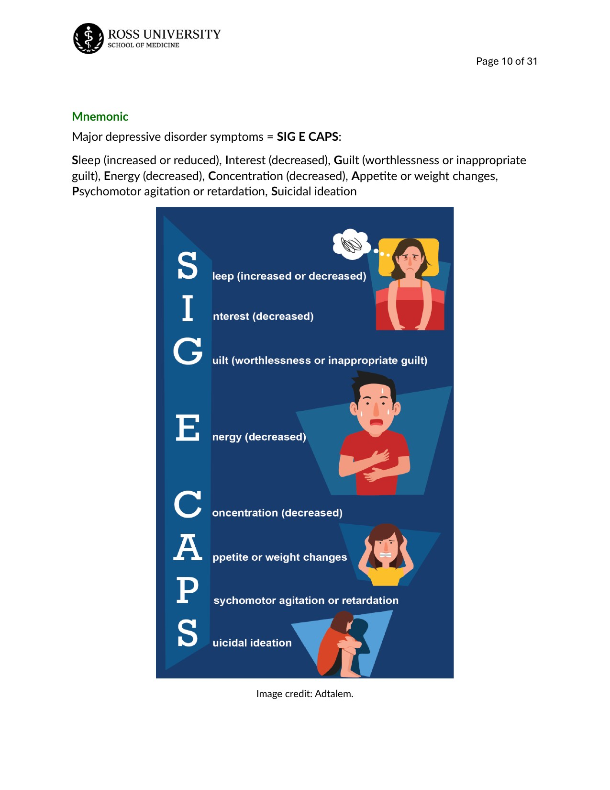 p.10Depressive Disorders and Antidepressants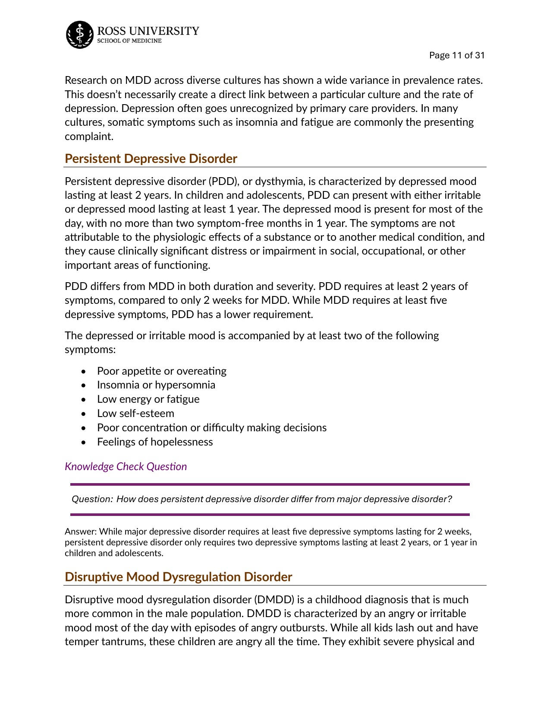 p.11Depressive Disorders and Antidepressants p.19Depressive Disorders and Antidepressants p.19Depressive Disorders and Antidepressants p.20Depressive Disorders and Antidepressants p.20Depressive Disorders and Antidepressants p.26Depressive Disorders and Antidepressants p.26Depressive Disorders and Antidepressants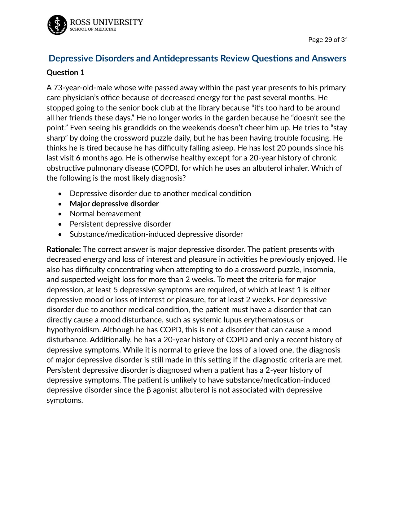 p.291 / 7 |
| Persistent depressive disorder (PDD, dysthymia) | Depressed mood most of the day, more days than not + ≥ 2 of: poor appetite/overeating, insomnia/hypersomnia, low energy/fatigue, low self-esteem, poor concentration/indecision, hopelessness. Not substance/medical; clinically significant distress/impairment | ≥ 2 years adults (≥ 1 year children/adolescents, mood may be irritable); no more than 2 symptom-free months in 1 year | Longer duration but lower symptom count than MDD | Antidepressants + psychotherapy (as for depressive disorders) | ⭐ PDD needs only 2 symptoms but for ≥2 years (≥1 year in children) | Depressive Disorders and Antidepressants |
| COMPARE — MDD vs persistent depressive disorder | MDD: depressed mood/anhedonia + ≥ 5 symptoms. PDD: depressed (or irritable in kids) mood + ≥ 2 symptoms | MDD ≥ 2 weeks · PDD ≥ 2 years (1 y in children), ≤ 2 symptom-free months/yr | Duration AND severity: PDD = chronic, milder; MDD = shorter, more symptoms | Both: antidepressants ± psychotherapy | ⭐ Review Q: 2-yr history of symptoms → PDD; >2 weeks with ≥5 symptoms → MDD | |
| Disruptive mood dysregulation disorder (DMDD) | Childhood diagnosis, much more common in males. Severe recurrent temper outbursts (verbal/physical, out of proportion, inconsistent with developmental level) + irritable/angry mood between outbursts most of the day. Not substance/medical | Outbursts ≥ 3×/week; symptoms ≥ 12 months (symptom-free ≤ 3 months); ≥ 2 settings (home, school, peers); onset usually < 10 y; first diagnosis only between age 6 and 18 | Angry ALL the time (not just tantrums). In children, chronic irritability → DMDD rather than bipolar disorder | Not specified in lecture | ⭐ DMDD: outbursts ≥3×/week + persistently irritable mood between them, ≥12 months, diagnosed age 6–18 | |
| COMPARE — DMDD vs intermittent explosive disorder (IED) | IED: recurring severe, aggressive physical/verbal outbursts (may cause harm); presents late childhood/adolescence, often continues into adulthood. DMDD: outbursts + persistently irritable/angry mood | DMDD: onset < 10 y, dx age 6–18, ≥ 12 months | Between outbursts: IED = no aggressive/irritable pattern; DMDD = irritable/angry most of the time | — | ⭐ IED patients are NOT irritable between outbursts; DMDD children are | Depressive Disorders and Antidepressants |
| Premenstrual dysphoric disorder (PMDD) | Behavioral/mood symptoms present in most cycles, severe enough to interfere with functioning. ≥ 1 core: hopelessness/depressed mood/self-critical thoughts; tension/anxiety; sudden sadness/rejection sensitivity; anger/irritability. Plus others (↓ interest, poor concentration, fatigue, appetite change/cravings, sleep change, overwhelmed, breast tenderness/bloating/weight gain/aches) | Total ≥ 5 symptoms; begin the week before menses, end within first few days of menses | Timing tied to menstrual cycle | Not specified in lecture | ⭐ PMDD symptoms start the week before menstruation and end within the first few days of menses | |
| Substance/medication-induced depressive disorder | Depressed mood or anhedonia developing soon after intoxication/withdrawal or medication exposure. Culprits: alcohol, opiates, cocaine, amphetamines, corticosteroids; also common meds — β blockers, birth control, PPIs, benzodiazepines. Not better explained by another depressive disorder; not exclusively during delirium | Onset soon after exposure; disturbance does not persist long (e.g., > 1 month) after exposure/withdrawal | Temporal link to substance; albuterol (β agonist) is NOT associated with depression | Remove offending agent; always ask about drug use | ⭐ Always ask about drugs — β blockers, birth control, PPIs and benzodiazepines can cause depression | |
| Depressive disorder due to another medical condition | History, exam, labs show mood disturbance is the physiologic result of another medical condition: hypothyroidism, adrenal insufficiency, SLE, vitamin B12 deficiency | Mood change follows the medical condition | Condition must be one that can directly cause mood change (COPD cannot) | Treat underlying condition; rule out medical causes (e.g., hypothyroid fatigue, cancer/TB weight loss) | ⭐ Hypothyroidism, adrenal insufficiency, SLE and B12 deficiency can directly cause depression | |
| Other specified / unspecified depressive disorder | Depressive symptoms causing significant distress/impairment that do not meet full criteria for any depressive disorder | Subthreshold | Other specified: specifier gives the reason criteria not met. Unspecified: reason not given (e.g., limited info in the ED) | — | ⭐ Unspecified depressive disorder is used when information is limited, e.g., in the emergency department | Depressive Disorders and Antidepressants |
| Specifiers — with peripartum onset · with seasonal pattern | Peripartum onset: major depressive episode begins in pregnancy or within 4 weeks after delivery; with or without psychotic features. Seasonal pattern (recurrent MDD): episodes related to time of year; remission or mania/hypomania also seasonal; seasonal episodes outnumber nonseasonal over lifetime | Peripartum: pregnancy → 4 wk postpartum. Seasonal: 2 seasonal MDEs in last 2 y, no nonseasonal ones | Specifiers are added to a depressive diagnosis, not stand-alone disorders | Postpartum MDD: antidepressants OK even while breastfeeding (benefit > low infant risk) + psychotherapy | ⭐ 'With peripartum onset' = episode during pregnancy or within 4 weeks after delivery | |
| Seasonal affective disorder (SAD) | Episodes of major depression, mania, or hypomania regularly occurring in specific seasons, particularly winter; impair functioning. Pathogenesis: circadian rhythm changes affecting serotonin | Regular seasonal recurrence | Seasonal timing of episodes | Antidepressants, light therapy, psychotherapy; sleep hygiene, daily outdoor activity | ⭐ SAD = circadian change affecting serotonin; treat with light therapy, antidepressants, psychotherapy | Depressive Disorders and Antidepressants |
| COMPARE — Normal grief vs major depressive episode | Grief: predominant affect = emptiness and loss; mixture of sadness and pleasant emotions; pain in waves or pangs; preoccupied with thoughts/memories of the deceased; hopeful and consolable. MDE: persistent depressed mood, inability to anticipate pleasure; continuous gloom/despair; self-critical, pessimistic ruminations; rarely consolable | MDD criteria (≥ 5 symptoms, ≥ 2 wk) can still be met within a year of a death | Uncharacteristic of grief: guilt unrelated to deceased, thoughts of death, worthlessness, psychomotor slowing, functional impairment, hallucinations (with exceptions) | Grief: support. MDD: treat as MDD even after bereavement | ⭐ Worthlessness, guilt unrelated to the deceased, psychomotor slowing and impairment point to MDD, not grief | |
| Suicide risk factors (across disorders) | Risk factors: male, single/living alone, hopelessness, substance use, firearm ownership; borderline PD ↑ future attempts. Bipolar: ~14× general population, ~25% of suicide deaths, more attempts than MDD (activation/impulsivity). Schizophrenia spectrum: young age, high IQ, higher SES, higher premorbid functioning; brief psychotic disorder ↑ risk during acute episode. BDD: high suicidal behavior; panic disorder ↑ suicidality | Antidepressant warning: children, adolescents, adults 18–24 during first 1–2 months of treatment | Asking about suicide does NOT increase risk | Ask specifically; monitor after starting antidepressants; follow-up; suicide risk assessment in schizophrenia spectrum; ECT first line if high suicide risk | ⭐ Asking about suicide does not increase risk; antidepressant warning for ages ≤24 in the first 1–2 months | Depressive Disorders and Antidepressants  p.14Depressive Disorders and Antidepressants p.14Depressive Disorders and Antidepressants p.17Depressive Disorders and Antidepressants p.17Depressive Disorders and Antidepressants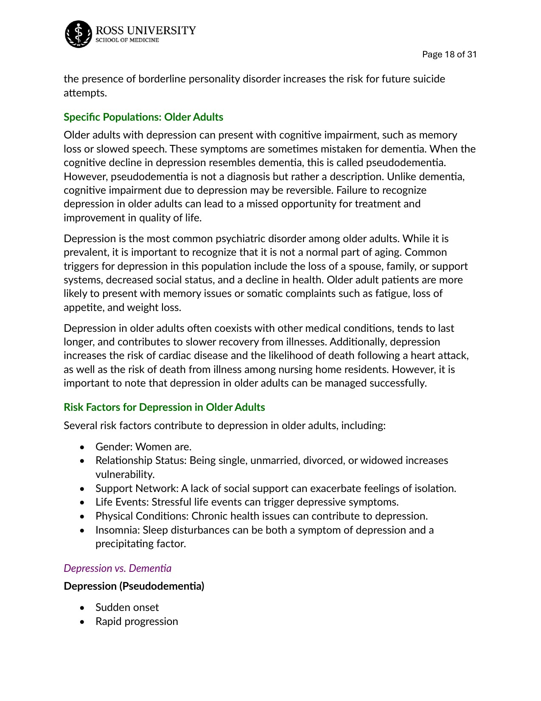 p.18Fusion Session - TBL - Psychotic and Bipolar Disorders-Differential Diagnosis and Treatment Considerations - Session PDF p.14Fusion Session - TBL - Psychotic and Bipolar Disorders-Differential Diagnosis and Treatment Considerations - Session PDF p.14Fusion Session - TBL - Psychotic and Bipolar Disorders-Differential Diagnosis and Treatment Considerations - Session PDF p.26Fusion Session - TBL - Psychotic and Bipolar Disorders-Differential Diagnosis and Treatment Considerations - Session PDF p.26Fusion Session - TBL - Psychotic and Bipolar Disorders-Differential Diagnosis and Treatment Considerations - Session PDF p.27Fusion Session - TBL - Psychotic and Bipolar Disorders-Differential Diagnosis and Treatment Considerations - Session PDF p.27Fusion Session - TBL - Psychotic and Bipolar Disorders-Differential Diagnosis and Treatment Considerations - Session PDF p.28Anxiety & Other Disorders p.28Anxiety & Other Disorders p.22Anxiety & Other Disorders p.22Anxiety & Other Disorders p.34 p.341 / 9 |
| Causes & neurobiology of depression | Genetic + environmental + psychological. Childhood adversity (trauma, neglect, low support, parental divorce/death/mental illness); chronic/disabling medical illness. Imaging: ↑ ventricular-brain ratio, ↓ frontal lobe and hippocampal volume (also seen in at-risk adolescents → may precede illness); faster gray-matter pruning in depressed adolescents. Neurotransmitters: ↓ serotonin, norepinephrine, dopamine, ↓ GABA, ↑ glutamate (monoamine deficit) | MZ concordance 37%; heritability women 42% vs men 29% | Decreased (not increased) hippocampal volume; increased (not decreased) ventricular-brain ratio | Pharmacotherapy targets the ↓ monoamines | ⭐ Depression: ↓ hippocampal and frontal volume, ↑ ventricular-brain ratio, ↓ 5-HT/NE/DA/GABA, ↑ glutamate | |
| Neurotransmitter–disorder table (Table 1) | Norepinephrine: ↑ anxiety, ↓ depression. Dopamine: ↑ schizophrenia, ↓ Parkinson disease and depression. Serotonin: ↓ anxiety and depression. Acetylcholine: ↓ Alzheimer, ↓ Huntington, ↓ during REM sleep. GABA: ↓ anxiety and Huntington | — | Anxiety = ↑ NE but ↓ 5-HT and ↓ GABA; stress/anxiety lecture lists 5-HT, GABA, NE | — | ⭐ Dopamine ↑ in schizophrenia, ↓ in Parkinson & depression; GABA ↓ in anxiety & Huntington | |
| Selected theories of depression | Biological: heredity, altered neurotransmitters, limbic-HPA axis abnormalities. Learned helplessness: repeated failed attempts to control events → hopelessness, apathy. Psychosocial: loss of primary attachment figure, low self-esteem, negative interpretation of life events; accumulated stressors. ACE study (CDC/Kaiser, 9,508 respondents; 7 categories of abuse/household dysfunction): > 50% ≥ 1 category, 25% > 2 | ≥ 4 ACE categories → 4–12× risk of alcohol/substance use, depression, suicide attempts; 2–4× smoking, poor health, STDs; 1.4–1.6× inactivity, severe obesity | Graded (dose-response) relationship between ACE count and adult disease (IHD, cancer, lung, liver disease, fractures) | — | ⭐ ACE study: graded relationship — ≥4 categories gives 4–12× risk of depression, substance use, suicide attempts | |
| Differential diagnosis & comorbidity of depression | Irritability/poor focus in children may be ADHD. Elderly → memory or somatic complaints (fatigue, ↓ appetite, weight loss). Part of bipolar disorder and cyclothymia; with hallucinations/delusions may be mistaken for schizophrenia. Medical mimics: cancer, TB, malabsorption. Comorbid: panic disorder, OCD, substance use, anorexia, bulimia, borderline PD | — | Always screen for prior mania/hypomania (bipolar) and medical causes | Thorough history, exam, psychiatric evaluation | ⭐ Elderly depressed patients present with memory issues or somatic complaints (fatigue, appetite/weight loss) | |
| Depression in older adults | Most common psychiatric disorder in older adults but not a normal part of aging. Triggers: loss of spouse/support, ↓ social status, declining health. Presents with cognitive impairment (memory loss, slowed speech) = pseudodementia (a description, not a diagnosis; may be reversible) or somatic complaints. ↑ cardiac disease and post-MI death. Risk factors: female, single/divorced/widowed, low support, stressful events, chronic illness, insomnia | Screen all > 60 y; nursing home/assisted living: 2 weeks after admission, then every 6 months | Tools: MMSE, Geriatric Depression Scale, Cornell Scale for Depression in Dementia, MoCA | Treatable — missed depression = missed chance to improve quality of life | ⭐ Pseudodementia = cognitive decline in the elderly that looks like dementia but is due to depression | |
| COMPARE — Depression (pseudodementia) vs dementia | Pseudodementia: sudden onset, rapid progression, aware of and highlights deficits, appears depressed, anhedonia, "I don't know" answers, better in the evening. Dementia: gradual onset, slow decline, denies/unaware of deficits, not depressed, can feel pleasure, near-miss answers/confabulation, conceals difficulties, worse in the evening (sundowning) | — | "I don't know" + highlights deficits → depression; confabulation + conceals → dementia | Depression-related cognitive impairment may be reversible with treatment | ⭐ "I don't know" answers and patient highlighting deficits = pseudodementia; confabulation and concealing = dementia | |
| Assessment of depression | Vague physical complaints (poor concentration, low energy). Rule out medical causes (hypothyroidism, cancer, TB). Ask about medications/drugs. Ask specifically about suicidal thoughts or actions | — | Borderline PD ↑ risk of future suicide attempts | Thorough medical history, exam, psychiatric evaluation | ⭐ Asking about suicide does not increase the risk of an attempt | |
| Pharmacologic treatment of depression | SSRIs first line (fluoxetine, paroxetine, sertraline) — block 5-HT reuptake. SNRIs ↑ 5-HT + NE. TCAs ↑ 5-HT. MAOIs block breakdown of 5-HT, NE, DA and tyramine → tyramine foods (cheese, processed meat, pickled/smoked fish) → hypertensive crisis. Atypicals: mirtazapine (sedation + weight gain → insomnia/weight loss), trazodone (insomnia), bupropion (↓ seizure threshold; avoid in eating disorders) | Hypertensive crisis = SBP > 180 or DBP > 120 mm Hg; follow-up 4–6 wk | SSRIs may ↑ agitation/restlessness; trazodone sedates but no weight gain | Postpartum: antidepressants + psychotherapy, OK when breastfeeding | ⭐ Depressed + insomnia + weight loss → mirtazapine (sedation and weight gain) | |
| Non-pharmacologic treatment — CBT, exercise, ECT, TMS | CBT: mood tied to thoughts; replace negative/inaccurate thoughts; addresses cognitive triad (negative views of self, world, future). Exercise improves symptoms. ECT = generalized seizure under anesthesia. TMS: as effective as medication, less than ECT | ECT first line when urgent: high suicide risk, malnutrition, dehydration, refusal to eat; also refractory depression and pregnancy | ECT gives rapid relief; CBT + SSRI takes weeks | CBT + antidepressant > either alone | ⭐ Depressed patient refusing to eat or at high suicide risk → ECT (rapid; safe in pregnancy) | |
| CBT — cognitive distortions | All-or-nothing thinking; disqualifying the positive; automatic negative reactions; magnifying/minimizing; overgeneralization (broad conclusion from one event); personalization; mental filter (single negative detail); catastrophizing (worst conclusion, little evidence); compare and despair | — | Recognize and challenge self-defeating thought patterns | CBT components: education, questioning thoughts, challenging beliefs, relaxation/exposure, coping/stress/assertiveness training, homework | ⭐ Catastrophizing = jumping to the worst possible conclusion with little evidence | |
| COMPARE — Psychotherapies for depression | CBT: changes inaccurate thoughts + problematic behaviors. Interpersonal psychotherapy: grief, role disputes, role transitions, interpersonal deficits. Problem-solving therapy: rational problem-solving steps. Behavioral activation: behavioral component of CBT — ↓ withdrawal/avoidance, routines, pleasure/mastery. Family/couples: corrects distorted communication. Short-term psychodynamic: insight into repetitive conflicts, childhood parallels. Supportive: active listening, validation, reassurance, role modeling | — | Match therapy to problem (e.g., role dispute → IPT) | Often combined with medication | ⭐ Interpersonal psychotherapy targets grief, role disputes, role transitions, interpersonal deficits |


Bipolar & Related Disorders (TBL: Psychotic and Bipolar Disorders) [Psychiatry · Behavioral Science]· 13FORMAT — one row per DSM-5-TR disorder (core criteria → duration/threshold → how to tell it apart → treatment); COMPARE rows contrast look-alikes; concept rows hold stand-alone teaching points
| Disorder | Core features / DSM-5-TR criteria | Duration · threshold | Key differentiator | Treatment | ⭐ Will Be Tested | Image |
|---|---|---|---|---|---|---|
| Bipolar & related disorders — overview | Bridge between depressive and psychotic disorders (symptoms, family history, shared genetics). DSM-5-TR: bipolar I, bipolar II, cyclothymic, substance-induced, due to another medical condition, not elsewhere classified. 'Manic-depressive' no longer used | — | Depressed-mood flowchart: rule out medical/drug causes, then look for any mania/hypomania | Mood stabilizers + psychotherapy | ⭐ Bipolar disorders overlap depressive and psychotic disorders in symptoms, family history and genetics | |
| Manic episode (concept) | Abnormally, persistently elevated, expansive, or irritable mood + ↑ goal-directed activity/energy, most of the day nearly every day. DIG FAST: Distractibility, Impulsivity/Indiscretion, Grandiosity, Flight of ideas, Activity/agitation, ↓ need for Sleep, Talkativeness/pressured speech. Psychotic features in ~⅔ (only during the episode), poor insight, uncharacteristic behavior (aggression, illegal acts, gambling, hypersexuality) | > 1 week, or any duration if hospitalization needed; ≥ 3 symptoms (≥ 4 if only irritable) | Marked impairment, hospitalization, or psychosis = mania (not hypomania) | Diagnostic emergency (high-risk behavior) | ⭐ Mania = ≥1 week (any duration if hospitalized) + DIG FAST; a diagnostic emergency | Fusion Session - TBL - Psychotic and Bipolar Disorders-Differential Diagnosis and Treatment Considerations - Session PDF 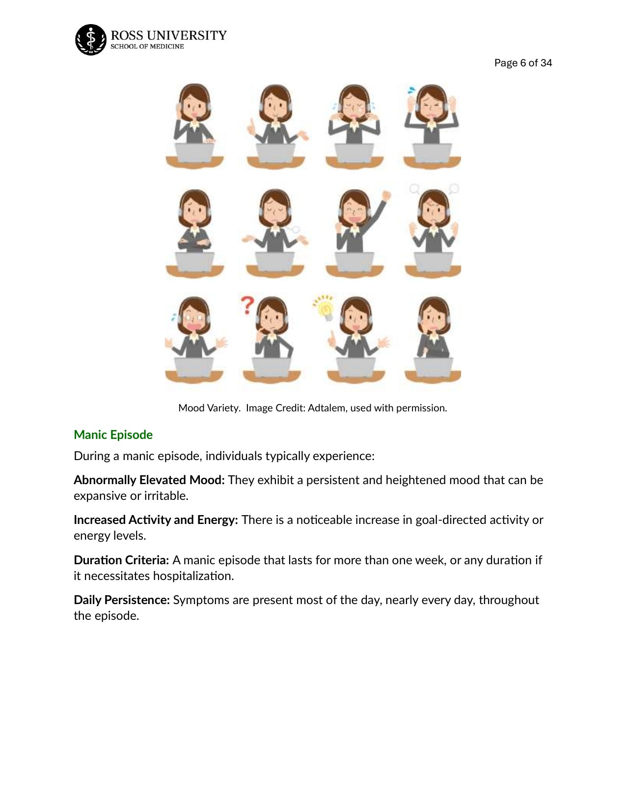 p.6Fusion Session - TBL - Psychotic and Bipolar Disorders-Differential Diagnosis and Treatment Considerations - Session PDF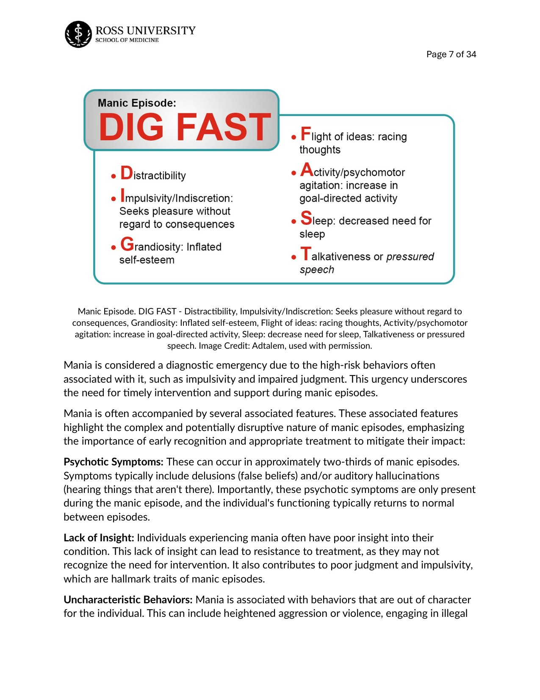 p.7Fusion Session - TBL - Psychotic and Bipolar Disorders-Differential Diagnosis and Treatment Considerations - Session PDF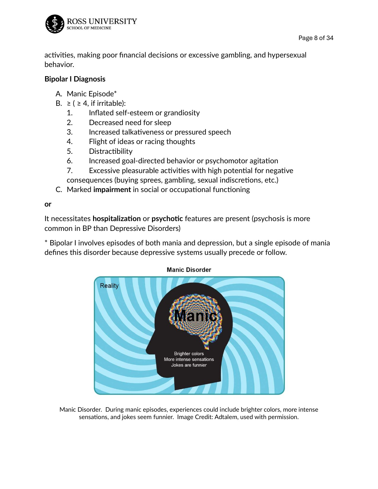 p.81 / 3 |
| Hypomanic episode (concept) | Same symptom list as mania (grandiosity, ↓ sleep need, pressured speech, flight of ideas, distractibility, ↑ goal-directed activity, risky pleasures) but milder | ≥ 4 days | No marked impairment, no hospitalization, never psychosis | Can progress to more severe episodes if untreated | ⭐ Hypomania: ≥4 days, no marked impairment, no hospitalization, never psychotic | Fusion Session - TBL - Psychotic and Bipolar Disorders-Differential Diagnosis and Treatment Considerations - Session PDF |
| Bipolar I disorder | A single manic episode defines it (depressive episodes common but not required — usually precede/follow). Criterion B: ≥ 3 DIG FAST symptoms (≥ 4 if irritable). Marked social/occupational impairment OR hospitalization OR psychotic features (psychosis more common in BP than depressive disorders) | Manic episode > 1 week (or any duration if hospitalized) | Mania required; hypomanic & depressive episodes common but not required | Mood stabilizers; ECT first line if suicidal or refusing to eat/drink (safe in pregnancy); psychoeducation, ISRT, family therapy, CBT | ⭐ One manic episode is enough to diagnose bipolar I | Fusion Session - TBL - Psychotic and Bipolar Disorders-Differential Diagnosis and Treatment Considerations - Session PDFp.8Fusion Session - TBL - Psychotic and Bipolar Disorders-Differential Diagnosis and Treatment Considerations - Session PDF 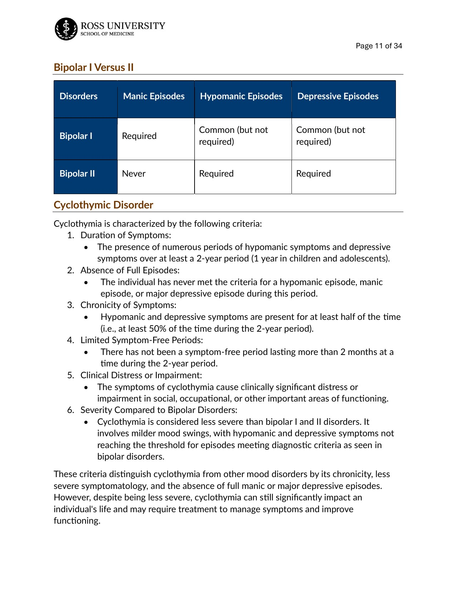 p.11Fusion Session - TBL - Psychotic and Bipolar Disorders-Differential Diagnosis and Treatment Considerations - Session PDF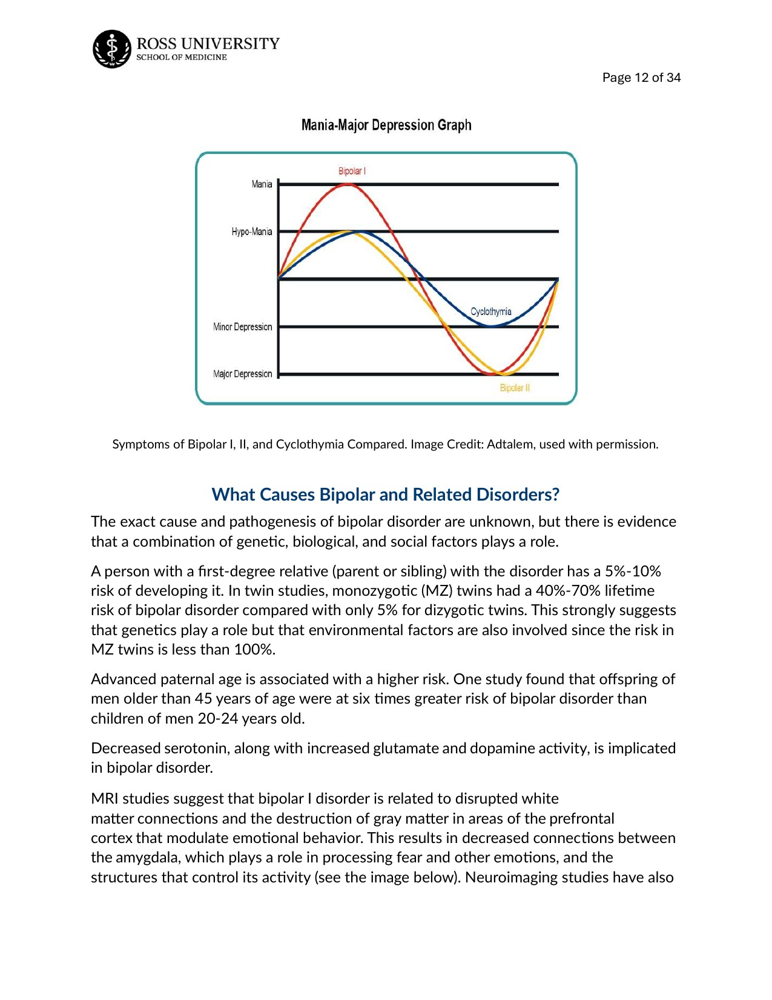 p.12Fusion Session - TBL - Psychotic and Bipolar Disorders-Differential Diagnosis and Treatment Considerations - Session PDF p.16Fusion Session - TBL - Psychotic and Bipolar Disorders-Differential Diagnosis and Treatment Considerations - Session PDFp.17 p.16Fusion Session - TBL - Psychotic and Bipolar Disorders-Differential Diagnosis and Treatment Considerations - Session PDFp.171 / 5 |
| Bipolar II disorder | ≥ 1 hypomanic episode + ≥ 1 major depressive episode (current or past); never a manic episode. Clinically significant distress/impairment; not better explained by another disorder, substance, or medical condition | Hypomania ≥ 4 days; MDE ≥ 2 weeks | Any manic episode → re-diagnose as bipolar I | As for bipolar disorders | ⭐ Bipolar II = hypomania + major depression, never mania | Fusion Session - TBL - Psychotic and Bipolar Disorders-Differential Diagnosis and Treatment Considerations - Session PDFp.9Fusion Session - TBL - Psychotic and Bipolar Disorders-Differential Diagnosis and Treatment Considerations - Session PDF  p.10Fusion Session - TBL - Psychotic and Bipolar Disorders-Differential Diagnosis and Treatment Considerations - Session PDFp.11Fusion Session - TBL - Psychotic and Bipolar Disorders-Differential Diagnosis and Treatment Considerations - Session PDFp.12 p.10Fusion Session - TBL - Psychotic and Bipolar Disorders-Differential Diagnosis and Treatment Considerations - Session PDFp.11Fusion Session - TBL - Psychotic and Bipolar Disorders-Differential Diagnosis and Treatment Considerations - Session PDFp.121 / 4 |
| Antidepressant/ECT-emergent hypomania | A full hypomanic episode during antidepressant or ECT treatment that persists beyond the physiological effect of treatment = sufficient evidence for a hypomanic episode. SSRIs (mixed evidence) may switch predisposed patients into hypomania/mania. Other triggers: antidepressants without mood stabilizer, appetite suppressants, stimulants, thyroid meds, corticosteroids | Persists after the drug effect wears off | Persisting hypomania → evaluate for bipolar spectrum | Careful monitoring when prescribing antidepressants | ⭐ Hypomania that persists beyond the antidepressant's effect counts toward a bipolar diagnosis | |
| Cyclothymic disorder | Numerous periods of hypomanic symptoms and depressive symptoms that never meet criteria for a hypomanic, manic, or major depressive episode; present ≥ half the time; distress/impairment. Milder than bipolar I/II | ≥ 2 years (1 year in children/adolescents); no symptom-free period > 2 months | Chronic, subthreshold swings — no full episodes | May require treatment to manage symptoms | ⭐ Cyclothymia: ≥2 years of subthreshold hypomanic and depressive symptoms, never a full episode | Fusion Session - TBL - Psychotic and Bipolar Disorders-Differential Diagnosis and Treatment Considerations - Session PDFp.11Fusion Session - TBL - Psychotic and Bipolar Disorders-Differential Diagnosis and Treatment Considerations - Session PDFp.12Fusion Session - TBL - Psychotic and Bipolar Disorders-Differential Diagnosis and Treatment Considerations - Session PDFp.17 1 / 3 |
| COMPARE — Bipolar I vs bipolar II vs cyclothymia | Bipolar I: manic episode required; hypomanic & depressive episodes common, not required. Bipolar II: manic never; hypomanic + depressive episodes required. Cyclothymia: hypomanic + depressive symptoms only (no full episodes) | Mania > 1 wk · hypomania ≥ 4 d · cyclothymia ≥ 2 y | Highest episode reached: mania (I) > hypomania + MDE (II) > subthreshold (cyclothymia) | — | ⭐ Mania → bipolar I; hypomania + MDE → bipolar II; subthreshold for 2 years → cyclothymia | Fusion Session - TBL - Psychotic and Bipolar Disorders-Differential Diagnosis and Treatment Considerations - Session PDFp.11Fusion Session - TBL - Psychotic and Bipolar Disorders-Differential Diagnosis and Treatment Considerations - Session PDFp.12Fusion Session - TBL - Psychotic and Bipolar Disorders-Differential Diagnosis and Treatment Considerations - Session PDFp.17 1 / 3 |
| COMPARE — Mania vs hypomania | Both: elevated/irritable mood + DIG FAST symptoms. Mania: marked impairment, may need hospitalization, psychosis in ~⅔. Hypomania: no marked impairment, no hospitalization, no psychosis | Mania > 1 week (any if hospitalized) · hypomania ≥ 4 days | Psychosis or hospitalization = mania by definition | — | ⭐ Any psychosis or need for hospitalization makes it mania, not hypomania | Fusion Session - TBL - Psychotic and Bipolar Disorders-Differential Diagnosis and Treatment Considerations - Session PDFp.6Fusion Session - TBL - Psychotic and Bipolar Disorders-Differential Diagnosis and Treatment Considerations - Session PDFp.7Fusion Session - TBL - Psychotic and Bipolar Disorders-Differential Diagnosis and Treatment Considerations - Session PDFp.8Fusion Session - TBL - Psychotic and Bipolar Disorders-Differential Diagnosis and Treatment Considerations - Session PDFp.9 1 / 4 |
| Causes of bipolar disorder | Genetic + biological + social. Advanced paternal age (> 45 y → 6× risk vs 20–24 y). ↓ serotonin with ↑ glutamate and dopamine (glutamate, dopamine). MRI: disrupted white matter, gray-matter loss in prefrontal cortex → ↓ connections to amygdala; lower gray matter with longer illness. Environmental: childhood abuse/trauma, life stressors, substance abuse, hormonal changes (puberty, pregnancy, postpartum, menopause), medications | First-degree relative 5–10%; MZ twins 40–70% vs DZ 5% | MZ < 100% → environment also matters | Psychoeducation, stress management, medication management | ⭐ Bipolar: MZ concordance 40–70%; ↓ serotonin with ↑ glutamate and dopamine | Fusion Session - TBL - Psychotic and Bipolar Disorders-Differential Diagnosis and Treatment Considerations - Session PDFp.12Fusion Session - TBL - Psychotic and Bipolar Disorders-Differential Diagnosis and Treatment Considerations - Session PDF 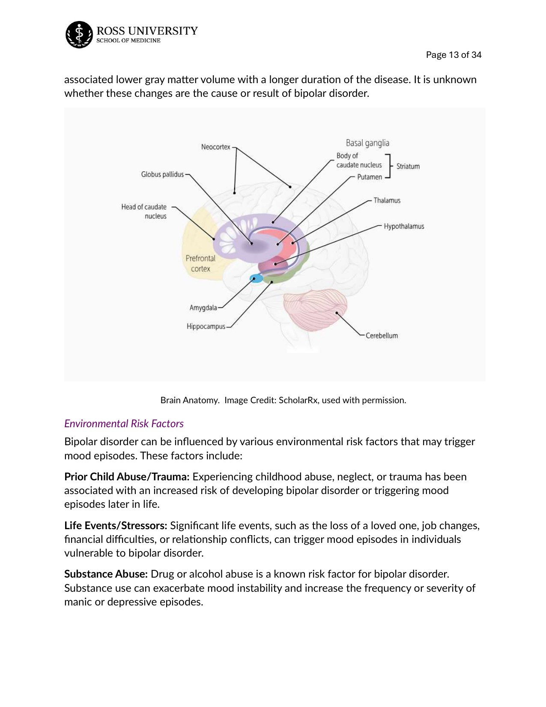 p.13Fusion Session - TBL - Psychotic and Bipolar Disorders-Differential Diagnosis and Treatment Considerations - Session PDFp.141 / 3 |
| Bipolar — suicide & comorbidities | Suicide: ~14× general population; ~25% of all suicide deaths; more attempts than MDD. Medical comorbidities: migraine, pain, diabetes, cardiovascular disease, obesity. Psychiatric: personality (borderline), ADHD, impulse-control, anxiety, eating, substance use disorders | — | Comorbidities complicate treatment and worsen outcomes | Early detection, mood stabilizers + psychotherapy, integrated treatment | ⭐ Bipolar disorder carries ~14× suicide risk and ~25% of suicide deaths | |
| Bipolar — psychotherapy & non-medication treatment | CBT: improves adherence but not consistently shown to ↓ episodes. Interpersonal & social rhythm therapy (ISRT): developed for bipolar; stabilizes daily routines/sleep-wake (circadian) rhythms. Family therapy: communication, supportive environment. Group/individual psychoeducation: ↓ stigma, guilt, learned helplessness; group form ↓ mood episodes and hospitalizations | — | Group psychoeducation is the one shown to reduce episodes & hospitalization | ECT: rapid; first line if suicidal or refusing to eat/drink; safe in pregnancy | ⭐ ISRT was developed specifically for bipolar disorder (stabilizes social/circadian rhythms) | |
| Differential diagnosis of bipolar disorder | MDD (no mania/hypomania); schizoaffective (psychosis + mood episodes); schizophrenia (psychosis without distinct mood episodes); other bipolar (I, cyclothymia); anxiety disorders; substance/medication-induced (intoxication/withdrawal); ADHD (impulsivity, inattention — esp. children); borderline PD (mood instability, impulsivity); childhood irritability → DMDD | — | Longitudinal pattern, family history, functional impairment | — | ⭐ In children, chronic irritability is diagnosed as DMDD rather than bipolar disorder |
Schizophrenia Spectrum & Other Psychotic Disorders (TBL: Psychotic and Bipolar Disorders) [Psychiatry · Behavioral Science]· 17FORMAT — one row per DSM-5-TR disorder (core criteria → duration/threshold → how to tell it apart → treatment); COMPARE rows contrast look-alikes; concept rows hold stand-alone teaching points
Psychotic disorders — sort by time course
- 1 day – 1 month≥ 1 psychotic symptom → brief psychotic disorder
- 1 – 6 months≥ 2 symptoms → schizophreniform disorder
- ≥ 6 months (≥ 1 month active)≥ 2 symptoms, ≥ 1 positive → schizophrenia
- ≥ 1 month, delusions onlyfunctioning intact, hallucinations not prominent → delusional disorder
- Psychosis ≥ 2 wk without mood + mood for majority→ schizoaffective disorder
Fusion Session - TBL - Psychotic and Bipolar Disorders-Differential Diagnosis and Treatment Considerations - Session PDFp.26
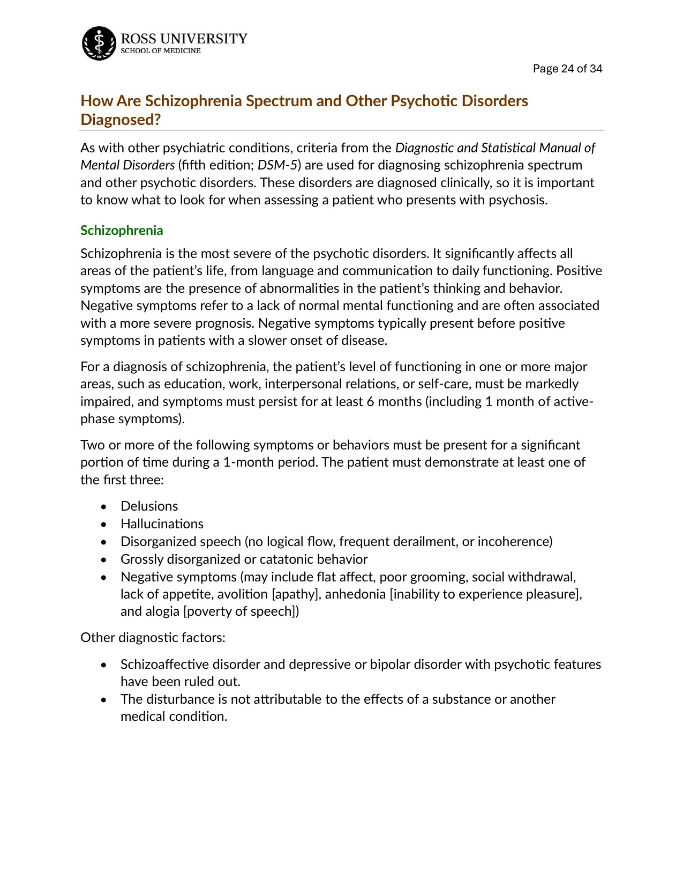
p.24Fusion Session - TBL - Psychotic and Bipolar Disorders-Differential Diagnosis and Treatment Considerations - Session PDF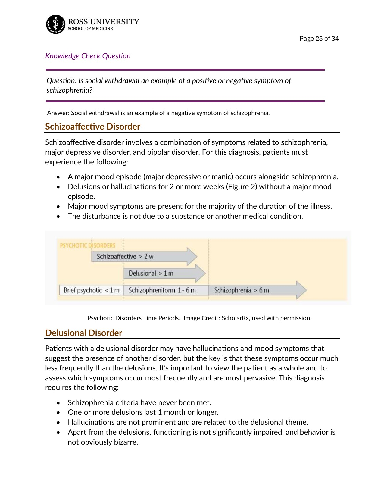
p.25Fusion Session - TBL - Psychotic and Bipolar Disorders-Differential Diagnosis and Treatment Considerations - Session PDFp.261 / 3
| Disorder | Core features / DSM-5-TR criteria | Duration · threshold | Key differentiator | Treatment | ⭐ Will Be Tested | Image |
|---|---|---|---|---|---|---|
| Psychosis — schizophrenia spectrum overview | Psychosis = thoughts/perceptions disturbed so the person cannot tell what is real. Spectrum: schizophrenia, schizoaffective, delusional, brief psychotic, schizophreniform. Symptoms: delusions, hallucinations, disorganized speech, disorganized/catatonic behavior, negative symptoms | — | Schizophrenia is a diagnosis of exclusion (rule out schizoaffective, depressive/bipolar with psychotic features) | Antipsychotics | ⭐ Schizophrenia is a diagnosis of exclusion | |
| Delusions (concept) | Fixed, false beliefs despite conflicting evidence. Types: erotomanic ("they love me"), grandiose, persecutory (most common), referential (ideas of reference), religious, somatic, nihilistic. Bizarre delusions (implausible, not understandable to same-culture peers): thought withdrawal, thought insertion, delusions of control | — | Persecutory = most common type | Build trust without "going along with" the delusion | ⭐ Persecutory delusions are the most common; thought insertion/withdrawal/control are bizarre delusions | Fusion Session - TBL - Psychotic and Bipolar Disorders-Differential Diagnosis and Treatment Considerations - Session PDF  p.18Fusion Session - TBL - Psychotic and Bipolar Disorders-Differential Diagnosis and Treatment Considerations - Session PDF p.18Fusion Session - TBL - Psychotic and Bipolar Disorders-Differential Diagnosis and Treatment Considerations - Session PDF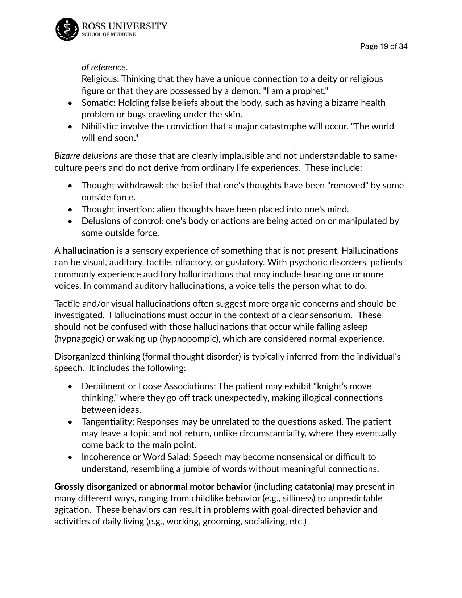 p.19Fusion Session - TBL - Psychotic and Bipolar Disorders-Differential Diagnosis and Treatment Considerations - Session PDF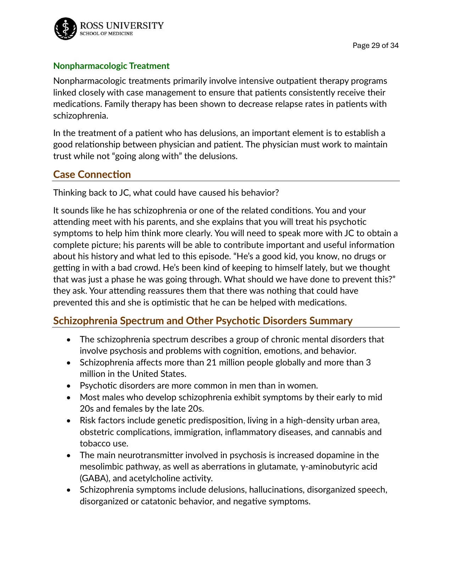 p.291 / 3 |
| Hallucinations (concept) | Sensory experience of something not present (visual, auditory, tactile, olfactory, gustatory). Psychotic disorders → auditory most common (voices; command hallucinations). Must occur with a clear sensorium | — | Tactile/visual → think organic; hypnagogic (falling asleep) and hypnopompic (waking) are normal | Investigate organic causes | ⭐ Tactile and/or visual hallucinations suggest an organic cause and should be investigated | Fusion Session - TBL - Psychotic and Bipolar Disorders-Differential Diagnosis and Treatment Considerations - Session PDF |
| Disorganized thinking & catatonia (concept) | Formal thought disorder (inferred from speech): derailment/loose associations (knight's move thinking); tangentiality (leaves topic, never returns — vs circumstantiality, which returns); incoherence/word salad. Grossly disorganized behavior (silliness → agitation). Catatonia: ↓ reactivity — negativism, posturing, stupor, mutism, catatonic excitement, stereotypy, echolalia, echopraxia, staring, grimacing | — | Catatonia occurs in psychotic, bipolar, depressive disorders and medical conditions → full exam | — | ⭐ Tangentiality never returns to the point; circumstantiality eventually does | |
| Negative symptoms (concept) | Lack of normal function: diminished emotional expression (face, eye contact, prosody, gestures), avolition, alogia, anhedonia, asociality; flat affect, withdrawal, poor grooming; cognitive dysfunction (attention, memory) | Often precede positive symptoms in slow-onset disease | Associated with worse prognosis; social withdrawal = negative symptom | Lifelong treatment often required | ⭐ Negative symptoms (avolition, alogia, anhedonia, asociality) predict a more severe prognosis | Fusion Session - TBL - Psychotic and Bipolar Disorders-Differential Diagnosis and Treatment Considerations - Session PDFp.20Fusion Session - TBL - Psychotic and Bipolar Disorders-Differential Diagnosis and Treatment Considerations - Session PDFp.24Fusion Session - TBL - Psychotic and Bipolar Disorders-Differential Diagnosis and Treatment Considerations - Session PDFp.25 1 / 3 |
| Schizophrenia | ≥ 2 of: delusions, hallucinations, disorganized speech, grossly disorganized/catatonic behavior, negative symptoms — ≥ 1 must be one of the first three; marked impairment in work, relationships, or self-care. Schizoaffective and mood disorder with psychotic features ruled out; not substance/medical. Most severe psychotic disorder. Comorbid: depression, anxiety, SUD, neurologic, metabolic syndrome (antipsychotic AEs) | Active symptoms ≥ 1 month; total ≥ 6 months | No distinct mood episodes (vs schizoaffective/bipolar) | Antipsychotics (D2 block in mesolimbic → ↓ positive sx), SGAs risperidone/olanzapine fewer AEs than FGA haloperidol; LAI IM q3–4 wk; family therapy ↓ relapse; case management | ⭐ Schizophrenia: ≥2 symptoms (≥1 delusions/hallucinations/disorganized speech) for ≥6 months incl. 1 month active | Fusion Session - TBL - Psychotic and Bipolar Disorders-Differential Diagnosis and Treatment Considerations - Session PDFp.24Fusion Session - TBL - Psychotic and Bipolar Disorders-Differential Diagnosis and Treatment Considerations - Session PDFp.25Fusion Session - TBL - Psychotic and Bipolar Disorders-Differential Diagnosis and Treatment Considerations - Session PDF p.26Fusion Session - TBL - Psychotic and Bipolar Disorders-Differential Diagnosis and Treatment Considerations - Session PDFp.27Fusion Session - TBL - Psychotic and Bipolar Disorders-Differential Diagnosis and Treatment Considerations - Session PDFp.28Fusion Session - TBL - Psychotic and Bipolar Disorders-Differential Diagnosis and Treatment Considerations - Session PDFp.29Fusion Session - TBL - Psychotic and Bipolar Disorders-Differential Diagnosis and Treatment Considerations - Session PDF p.30 p.301 / 7 |
| Schizophrenia — epidemiology, race & culture | > 21 million worldwide; adult prevalence ~1%; children 0.04%. Onset males early–mid 20s, females late 20s; M:F 1.4:1. Mostly gradual onset; early onset = worse prognosis. ↑ rates in immigrants. African American patients ~5× and Latino ~3× more likely to be diagnosed with schizophrenia/psychosis; Black patients with severe depression more often misdiagnosed as schizophrenia. Religious delusions more common in Christian societies; stigma affects outcome | — | Cultural bias → over-diagnosis; cultural awareness needed | — | ⭐ Schizophrenia appears by early–mid 20s in males and late 20s in females; early onset = worse prognosis | Fusion Session - TBL - Psychotic and Bipolar Disorders-Differential Diagnosis and Treatment Considerations - Session PDF 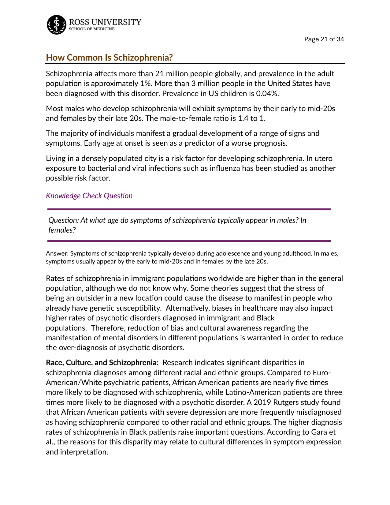 p.21Fusion Session - TBL - Psychotic and Bipolar Disorders-Differential Diagnosis and Treatment Considerations - Session PDF p.22Fusion Session - TBL - Psychotic and Bipolar Disorders-Differential Diagnosis and Treatment Considerations - Session PDFp.29 p.22Fusion Session - TBL - Psychotic and Bipolar Disorders-Differential Diagnosis and Treatment Considerations - Session PDFp.291 / 3 |
| Causes of schizophrenia | Child of affected parent 10× risk; heritability ~80%; epigenetics (DNA methylation/acetylation). Environment: viruses (in-utero influenza), fetal malnutrition, obstetric complications, urban living, immigration, tobacco and cannabis, advanced paternal age, late winter/early spring birth, inflammatory disease (interstitial cystitis, celiac, thyrotoxicosis). ↑ dopamine in mesolimbic pathway (dopamine); also glutamate, GABA, acetylcholine. DTI: ↓ white-matter connectivity in prefrontal/temporal lobes | — | Antipsychotics aren't universally effective → not dopamine alone | D2-blocking antipsychotics | ⭐ Risk factors: cannabis/tobacco, urban living, immigration, paternal age, late-winter/early-spring birth; main NT = ↑ mesolimbic dopamine | Fusion Session - TBL - Psychotic and Bipolar Disorders-Differential Diagnosis and Treatment Considerations - Session PDFp.21Fusion Session - TBL - Psychotic and Bipolar Disorders-Differential Diagnosis and Treatment Considerations - Session PDF p.22Fusion Session - TBL - Psychotic and Bipolar Disorders-Differential Diagnosis and Treatment Considerations - Session PDF p.23Fusion Session - TBL - Psychotic and Bipolar Disorders-Differential Diagnosis and Treatment Considerations - Session PDFp.29 p.23Fusion Session - TBL - Psychotic and Bipolar Disorders-Differential Diagnosis and Treatment Considerations - Session PDFp.291 / 4 |
| Schizoaffective disorder | Major mood episode (depressive or manic) concurrent with schizophrenia symptoms + delusions/hallucinations ≥ 2 weeks without a mood episode; mood symptoms present for the majority of the illness; not substance/medical | Psychosis alone ≥ 2 weeks | vs mood disorder with psychotic features: psychosis also occurs WITHOUT mood episode. vs schizophrenia: mood episodes prominent | Antipsychotics (± mood treatment) | ⭐ Schizoaffective = psychosis for ≥2 weeks without mood symptoms + mood episodes for most of the illness | Fusion Session - TBL - Psychotic and Bipolar Disorders-Differential Diagnosis and Treatment Considerations - Session PDF p.16Fusion Session - TBL - Psychotic and Bipolar Disorders-Differential Diagnosis and Treatment Considerations - Session PDFp.25Fusion Session - TBL - Psychotic and Bipolar Disorders-Differential Diagnosis and Treatment Considerations - Session PDFp.281 / 3 |
| Delusional disorder | ≥ 1 delusion; schizophrenia criteria never met; hallucinations not prominent and related to delusional theme; functioning not significantly impaired, behavior not bizarre; mood episodes brief relative to delusions; not substance/medical | ≥ 1 month | Delusion is the dominant symptom; otherwise functional (e.g., erotomanic belief about a celebrity, still works well) | Antipsychotics (risperidone, olanzapine) — often poor response; may add antidepressant/mood stabilizer; physician-patient trust | ⭐ Delusional disorder: ≥1 delusion for ≥1 month with otherwise preserved functioning | Fusion Session - TBL - Psychotic and Bipolar Disorders-Differential Diagnosis and Treatment Considerations - Session PDFp.25Fusion Session - TBL - Psychotic and Bipolar Disorders-Differential Diagnosis and Treatment Considerations - Session PDF p.26Fusion Session - TBL - Psychotic and Bipolar Disorders-Differential Diagnosis and Treatment Considerations - Session PDFp.28Fusion Session - TBL - Psychotic and Bipolar Disorders-Differential Diagnosis and Treatment Considerations - Session PDFp.291 / 4 |
| Brief psychotic disorder | ≥ 1 psychotic symptom; often emotional turmoil/overwhelming confusion; may follow a stressor. Severe impairment possible; ↑ suicide risk during acute episode | 1 day – 1 month | Shortest psychotic disorder; first rule out medical causes, medications, delirium | Antipsychotics | ⭐ Brief psychotic disorder lasts 1 day to 1 month | |
| Schizophreniform disorder | ≥ 2 of: delusions, hallucinations, disorganized speech, grossly disorganized/catatonic behavior, negative symptoms | 1 – 6 months | Same symptoms as schizophrenia, shorter duration | Antipsychotics | ⭐ Schizophreniform = schizophrenia-type symptoms lasting >1 month but <6 months | |
| COMPARE — Brief psychotic vs schizophreniform vs schizophrenia (vs schizoaffective, delusional) | Brief psychotic: ≥ 1 psychotic symptom. Schizophreniform & schizophrenia: ≥ 2 symptoms. Schizoaffective: psychosis + major mood episodes for majority of illness. Delusional: delusions only, functioning intact | Brief 1 d–1 mo · schizophreniform 1–6 mo · schizophrenia ≥ 6 mo · delusional ≥ 1 mo · schizoaffective psychosis ≥ 2 wk without mood | Time course is the differentiator — evaluate over an extended period | All: antipsychotics | ⭐ Timing decides it: <1 month brief psychotic; 1–6 months schizophreniform; ≥6 months schizophrenia | Fusion Session - TBL - Psychotic and Bipolar Disorders-Differential Diagnosis and Treatment Considerations - Session PDFp.24Fusion Session - TBL - Psychotic and Bipolar Disorders-Differential Diagnosis and Treatment Considerations - Session PDFp.25Fusion Session - TBL - Psychotic and Bipolar Disorders-Differential Diagnosis and Treatment Considerations - Session PDF p.26Anxiety & Other Disordersp.51 / 4 |
| COMPARE — Psychotic disorder vs delirium | Elderly/postoperative patients with delirium can be misdiagnosed as delusional or brief psychotic disorder | — | Delirium comes and goes (fluctuating); psychotic/delusional symptoms persist | First determine if symptoms are due to a medical condition or medication | ⭐ Delirium fluctuates (comes and goes); psychotic symptoms persist | Fusion Session - TBL - Psychotic and Bipolar Disorders-Differential Diagnosis and Treatment Considerations - Session PDF |
| COMPARE — Schizophrenia vs cluster A personality disorders | Schizotypal: magical thinking (like delusions but less severe). Schizoid: withdrawal + blunted affect mimic negative symptoms (no desire for social interaction). Paranoid: fear others intend harm → mimics delusional/psychotic disorder | PDs: stable, lifelong pattern | No frank, persistent psychosis in cluster A PDs | — | ⭐ Schizoid PD's social withdrawal can be confused with schizophrenia's negative symptoms | Fusion Session - TBL - Psychotic and Bipolar Disorders-Differential Diagnosis and Treatment Considerations - Session PDF p.26Fusion Session - TBL - Psychotic and Bipolar Disorders-Differential Diagnosis and Treatment Considerations - Session PDFp.27Personality Disorders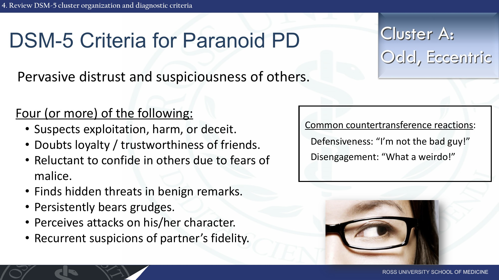 p.11Personality Disorders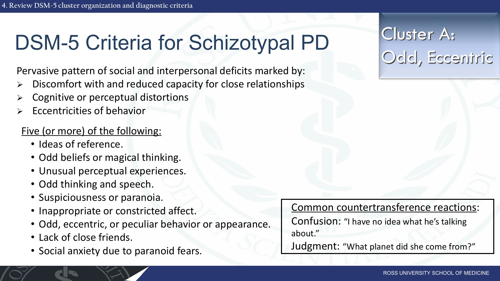 p.13Personality Disorders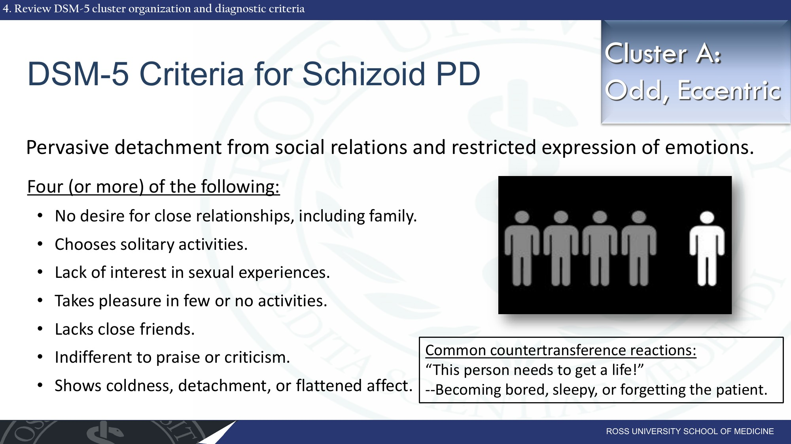 p.151 / 5 |
| Assessment & treatment principles — psychotic disorders | Establish safety and medical needs. Rule-out tests: thyroid function, ammonia (hepatic encephalopathy), urine copper (Wilson), vitamin B12, brain imaging. Clinical interview = primary tool; suicide risk assessment. Antipsychotics block mesolimbic dopamine → ↓ positive symptoms; FGA (haloperidol) more AEs than SGA (risperidone, olanzapine). Goal = consistency (IM depot q3–4 weeks) | — | Nonpharm: intensive outpatient + case management (adherence); family therapy ↓ relapse | Antipsychotics for schizophrenia, schizoaffective, schizophreniform, brief psychotic | ⭐ Antipsychotics are the mainstay; family therapy decreases relapse in schizophrenia | Fusion Session - TBL - Psychotic and Bipolar Disorders-Differential Diagnosis and Treatment Considerations - Session PDF p.27Fusion Session - TBL - Psychotic and Bipolar Disorders-Differential Diagnosis and Treatment Considerations - Session PDFp.28Fusion Session - TBL - Psychotic and Bipolar Disorders-Differential Diagnosis and Treatment Considerations - Session PDFp.29Fusion Session - TBL - Psychotic and Bipolar Disorders-Differential Diagnosis and Treatment Considerations - Session PDFp.301 / 4 |
Anxiety Disorders (Anxiety & Other Disorders) [Psychiatry · Behavioral Science]· 12FORMAT — one row per DSM-5-TR disorder (core criteria → duration/threshold → how to tell it apart → treatment); COMPARE rows contrast look-alikes; concept rows hold stand-alone teaching points
| Disorder | Core features / DSM-5-TR criteria | Duration · threshold | Key differentiator | Treatment | ⭐ Will Be Tested | Image |
|---|---|---|---|---|---|---|
| Anxiety disorders — overview & DSM-5 classes | NTs: serotonin, GABA, norepinephrine. DSM-5 split into 3 classes: Anxiety disorders · Obsessive-compulsive & related · Trauma- & stressor-related. Childhood-diagnosed: separation anxiety, selective mutism, RAD, DSED. Most treated with medication, CBT, or both; many start in childhood and persist; must cause distress/impairment; not due to substance or specific stressor; assess comorbid SUD | TIMING matters (e.g., acute stress vs PTSD) | Anxiety & depression = 2 most common problems in primary care; 1 in 5 primary-care patients has an anxiety disorder | Medication ± CBT | ⭐ Social anxiety, panic disorder and GAD are the most common anxiety disorders in primary care | |
| Separation anxiety disorder | Developmentally inappropriate/excessive fear about separation from attachment figures, ≥ 3 of: distress at separation, worry about harm/loss of figure, worry about events causing separation (kidnapping, accident), fear of being alone, reluctance to leave (e.g., school), refusal to sleep away, nightmares, physical symptoms | ≥ 4 weeks children/adolescents; 6 months adults | Fear centers on attachment figure | Not specified (anxiety disorders generally: medication, CBT, or both) | ⭐ Separation anxiety: >4 weeks in children, 6 months in adults | |
| Selective mutism | Consistent failure to speak in specific social situations where speaking is expected (school) despite speaking elsewhere; interferes with achievement/communication | ≥ 1 month (not just the first month of school) | Not due to lack of language knowledge; not a communication disorder, autism, or schizophrenia | Not specified (anxiety disorders generally: medication, CBT, or both) | ⭐ Selective mutism ≥1 month — and not limited to the first month of school | |
| Specific phobia | Marked fear of a specific object/situation, immediately induced, avoided or endured with intense anxiety, out of proportion to danger. Types: situational, animal, natural environment, blood-injection-injury (common in clinical settings) | > 6 months | Fear limited to one object/situation (vs agoraphobia across situations) | Exposure therapy — graded, flooding, systematic desensitization. US prevalence 7–9%, F > M; many never seek treatment | ⭐ Specific phobia: >6 months; treat with exposure therapy (systematic desensitization, flooding) | |
| CBT & exposure therapy (concept) | CBT = family of therapies: cognitive (change the thought → change the emotion) or behavioral (change the behavior). Model links thoughts, emotions, physical sensations, behaviors. Learning theories: classical conditioning (Pavlov, paired stimuli), operant conditioning (Skinner, consequences), social learning (Bandura, observation/modeling). Exposure therapy uses a graded fear hierarchy | — | Exposure + response prevention = OCD-specific form | Phobias, social anxiety, panic, GAD, OCD, PTSD | ⭐ Exposure therapy works through a graded fear hierarchy | |
| Social anxiety disorder (social phobia) | Marked fear/avoidance of social situations involving scrutiny (conversation, being observed eating/drinking, performing). Fear of negative evaluation (humiliation, embarrassment, rejection); situation almost always provokes fear; avoided or endured; out of proportion | > 6 months | Fear is of negative evaluation by others | CBT, systematic desensitization, SSRIs, β blockers. US annual 3–7%, lifetime 5–12% | ⭐ Social anxiety = fear of negative evaluation (scrutiny) for >6 months; SSRIs, β blockers, CBT | |
| Panic attack (concept / specifier) | Abrupt surge of intense fear that peaks within minutes with ≥ 4 of: palpitations, sweating, trembling, dyspnea, choking, chest pain, nausea, dizziness, chills/hot flushes, paresthesias, derealization/depersonalization, fear of losing control, fear of dying | Peaks within minutes | Occurs with several disorders — panic attack alone ≠ panic disorder | Rule out medical causes | ⭐ A panic attack alone does not equal panic disorder | Anxiety & Other Disorders |
| Panic disorder | Recurrent unexpected panic attacks + ≥ 1 month of persistent worry about more attacks and/or maladaptive behavior change (avoiding unfamiliar places); not substance/medical | ≥ 1 month of worry/behavior change | Attacks are unexpected; anticipatory worry. Prevalence 2–3%, F:M 2:1, onset late adolescence/early adulthood | CBT, antidepressants. ↑ suicidality; comorbid substance use, depression, other anxiety | ⭐ Panic disorder = recurrent unexpected attacks + ≥1 month of worry about further attacks | |
| Medical differential for anxiety | Thyroid (hyperthyroidism, hyperparathyroidism), epilepsy, cardiopulmonary (arrhythmias, SVT, asthma, COPD), vestibular dysfunction, pheochromocytoma, hypoglycemia, anemia, hypoxia, substance intoxication/withdrawal, severe nutrient deficiencies | — | Perform relevant labs/physical exam | Treat cause; substance/medication-induced and anxiety due to another medical condition are separate DSM diagnoses | ⭐ Rule out hyperthyroidism, pheochromocytoma, hypoglycemia, arrhythmia before diagnosing an anxiety disorder | |
| Agoraphobia | Fear/anxiety about ≥ 2 of 5: public transportation, open spaces, enclosed places, lines/crowds, being outside home alone. Avoided because escape might be difficult or help unavailable if panic-like, incapacitating, or embarrassing symptoms develop; out of proportion; distress/impairment | > 6 months | Fear of being trapped without help (across ≥ 2 situations) | Not specified (anxiety disorders generally: medication, CBT, or both) | ⭐ Agoraphobia: ≥2 of 5 situations feared because escape/help may be unavailable, >6 months | |
| COMPARE — Agoraphobia vs social anxiety vs specific phobia vs PTSD vs OCD | Social anxiety: fear of negative evaluation. Specific phobia: one specific situation vs across situations. PTSD: avoidance tied to trauma triggers/context. OCD: avoidance to prevent obsession (e.g., contamination). Agoraphobia: fear escape/help unavailable | Most require > 6 months; PTSD > 1 month | Ask WHY the person avoids | — | ⭐ To separate avoidance disorders, ask why the person avoids the situation | |
| Generalized anxiety disorder (GAD) | Excessive anxiety/worry about various domains (work, school), more days than not, difficult to control + ≥ 3 of 6: restless/keyed up, easily fatigued, concentration problems, irritability, muscle tension, sleep disturbance | ≥ 6 months; GAD-7 > 15 = severe | Worry is diffuse across many domains. Lifetime 5.7%, F:M 2:1, median onset 30 y | CBT, mindfulness, relaxation; antidepressants, anxiolytics, α blockers, β blockers | ⭐ GAD: uncontrollable worry about many domains, more days than not for ≥6 months, + ≥3 of 6 symptoms |


Obsessive-Compulsive & Related Disorders (Anxiety & Other Disorders) [Psychiatry · Behavioral Science]· 4FORMAT — one row per DSM-5-TR disorder (core criteria → duration/threshold → how to tell it apart → treatment); COMPARE rows contrast look-alikes; concept rows hold stand-alone teaching points
| Disorder | Core features / DSM-5-TR criteria | Duration · threshold | Key differentiator | Treatment | ⭐ Will Be Tested | Image |
|---|---|---|---|---|---|---|
| Obsessive-compulsive disorder (OCD) | Obsessions: recurrent intrusive, unwanted thoughts/urges/images causing anxiety; person tries to suppress/neutralize. Compulsions: repetitive behaviors/mental acts driven by obsession or rigid rules, aimed at reducing anxiety. Themes: contamination → washing; symmetry → ordering/counting; taboo thoughts → praying; harm → checking. Check for insight | Time consuming > 1 hour/day or distress/impairment; lifetime 2–3%; mean onset 19.5 y | Ego-dystonic intrusive thoughts + neutralizing compulsions | CBT with exposure and response prevention (ERP); SSRIs (try ≥ 2), clomipramine (TCA), SNRI venlafaxine, SGAs; TMS; DBS for treatment-resistant | ⭐ OCD: >1 h/day of obsessions/compulsions; ERP + SSRIs (try at least two) or clomipramine | |
| Body dysmorphic disorder | Preoccupation with perceived defects in appearance not observable or slight to others + repetitive behaviors (mirror checking, grooming, skin picking, reassurance seeking) or mental acts (comparing) | Clinically significant distress/impairment | Not better explained by an eating disorder; high rates of suicidal behavior | CBT; SSRIs can be tried (not FDA approved for BDD) | ⭐ Body dysmorphic disorder carries high rates of suicidal behavior | |
| Hoarding · trichotillomania · excoriation (listed) | Other Obsessive-compulsive & related disorders: hoarding disorder, trichotillomania (hair-pulling), excoriation (skin-picking); also substance/medication or medical-condition-related | — | Listed only in this lecture (no criteria given) | — | ⭐ Hoarding, trichotillomania and excoriation are classed with OCD-related disorders, not anxiety disorders | |
| O-C & related disorder due to another medical condition — PANDAS | Pediatric Autoimmune Neuropsychiatric Disorder Associated with Streptococcus: obsessive thoughts, compulsions, motor/vocal tics, psychiatric behaviors; immune response to virus or bacteria | — | Post-infectious onset in a child | Antibiotic, immunotherapy, psychiatric treatment | ⭐ PANDAS = OCD symptoms and tics after streptococcal infection; treat with antibiotics + immunotherapy | Anxiety & Other Disorders |


Trauma- & Stressor-Related Disorders (Anxiety & Other Disorders) [Psychiatry · Behavioral Science]· 9FORMAT — one row per DSM-5-TR disorder (core criteria → duration/threshold → how to tell it apart → treatment); COMPARE rows contrast look-alikes; concept rows hold stand-alone teaching points
| Disorder | Core features / DSM-5-TR criteria | Duration · threshold | Key differentiator | Treatment | ⭐ Will Be Tested | Image |
|---|---|---|---|---|---|---|
| Trauma exposure criterion (ASD & PTSD) | Exposure to actual/threatened death, serious injury, or sexual violence by: directly experiencing; witnessing in person; learning it happened to a close person; repeated/extreme exposure to aversive details (first responders, police) | — | Not via electronic media; need not be directly experienced | — | ⭐ Exposure through electronic media does not count; learning it happened to a close person does | Anxiety & Other Disorders |
| Acute stress disorder | ≥ 9 symptoms from any category: intrusion, negative mood, dissociation, avoidance, arousal. More immediate; may be linked to more dissociative symptoms | 3 days – 1 month after trauma | Short-term; > 1 month → PTSD | Trauma-focused CBT | ⭐ Acute stress disorder lasts 3 days to 1 month after the trauma | |
| Posttraumatic stress disorder (PTSD) | Trauma + intrusion ≥ 1 (memories, dreams, flashbacks, reactions to reminders, repetitive play in kids) + avoidance ≥ 1 (internal/external reminders) + negative cognitions & mood ≥ 2 (can't recall, negative beliefs, self-blame, detachment, can't feel positive) + arousal ≥ 2 (irritable, reckless, hypervigilant, startle, concentration, sleep). Dissociative symptoms common but not necessary | > 1 month; usually within 3 months; delayed expression ≥ 6 months; up to 30% chronic (10 y) | Duration > 1 month separates from ASD. PTSD symptoms linked to MI, cardiac death, CHD (esp. women) | Trauma-focused CBT (prolonged exposure, cognitive processing therapy), group therapy, SSRIs, α blockers, β blockers, EMDR; address comorbid SUD | ⭐ PTSD requires symptoms for >1 month: ≥1 intrusion, ≥1 avoidance, ≥2 negative mood, ≥2 arousal | |
| COMPARE — Acute stress disorder vs PTSD | ASD: ≥ 9 symptoms from any category, more immediate, more dissociative. PTSD: symptom clusters with minimum counts (intrusion 1, avoidance 1, negative mood 2, arousal 2) | ASD 3 days – 1 month · PTSD > 1 month | Timing; PTSD can be chronic or delayed (6 months) | Both: trauma-focused CBT | ⭐ Same trauma — <1 month = acute stress disorder, >1 month = PTSD | |
| Dissociative symptoms in trauma (concept) | Depersonalization, derealization, dissociative amnesia (cannot recall important aspect of event) | — | Common but not necessary for ASD/PTSD; more linked to ASD | — | ⭐ Dissociative symptoms are common but not required in ASD/PTSD | |
| Adjustment disorder | Emotional or behavioral symptoms in response to an identifiable stressor. Specifiers: depressed mood, anxiety, mixed anxiety & depressed mood, disturbance of conduct, mixed emotions & conduct | Onset within 3 months of stressor; symptoms end ≤ 6 months after stressor/consequences remit | Not diagnosed if criteria for another disorder are met (e.g., depression → diagnose that) | Most common diagnosis in psychiatric consultation settings (up to 50%) | ⭐ Adjustment disorder: symptoms within 3 months of a stressor, gone within 6 months after it ends | |
| Reactive attachment disorder (RAD) | Inhibited behavior toward adult caregivers; social/emotional disturbance; evidence of extremes of insufficient care | Evident before age 5; diagnosed after 9 months | Withdrawn from caregivers (vs DSED: overly friendly to strangers) | — | ⭐ RAD: inhibited toward caregivers after neglect; evident before 5, diagnosed after 9 months | |
| Disinhibited social engagement disorder (DSED) | Actively approaches and interacts with adult strangers; not explainable by impulsivity; evidence of extremes of insufficient care | Childhood | Indiscriminate friendliness (vs RAD inhibited) | — | ⭐ DSED: neglected child who readily approaches strangers (not impulsivity) | |
| COMPARE — RAD vs DSED (disorders of social neglect) | Both follow extremes of insufficient care. RAD: inhibited toward caregivers, social/emotional disturbance. DSED: actively approaches adult strangers | RAD before 5 y, dx after 9 mo | Inhibited (RAD) vs disinhibited (DSED) | — | ⭐ Neglect → inhibited (RAD) or indiscriminately social (DSED) | Anxiety & Other Disorders |

Somatic Symptom & Related Disorders (Somatic Symptoms and Dissociative Disorders) [Psychiatry · Behavioral Science]· 12FORMAT — one row per DSM-5-TR disorder (core criteria → duration/threshold → how to tell it apart → treatment); COMPARE rows contrast look-alikes; concept rows hold stand-alone teaching points
Physical symptom — sorting the somatic disorders
- Mild or no symptoms, fear of diseaseIllness anxiety disorder
- Symptom beyond medical explanation, unintentionalSomatic symptom disorder, FNSD (conversion) — or a 'masked' depressive/anxiety disorder
- Intentional, unconscious motivationFactitious disorder
- Intentional, conscious motivation (external gain)Malingering
| Disorder | Core features / DSM-5-TR criteria | Duration · threshold | Key differentiator | Treatment | ⭐ Will Be Tested | Image |
|---|---|---|---|---|---|---|
| Somatic symptom disorders — etiology (concept) | Neurobiological: neuroendocrine dysfunction processing sensory/emotional info; misinterpreting normal sensations. Psychodynamic: conflict from childhood trauma/abuse — primary gain (unconsciously expressing/avoiding unacceptable emotion). Cognitive-behavioral: secondary gain (attention, care, avoiding responsibility); reinforcement of somatic expression. Sociocultural: culturally sanctioned expression of distress | — | Primary gain = unconscious internal; secondary gain = external benefit of symptoms | — | ⭐ Primary gain = unconscious relief of internal conflict; secondary gain = attention, care, avoided responsibility | Somatic Symptoms and Dissociative Disorders |
| Somatic symptoms — diagnostic challenges (concept) | Somatic symptoms = main reason people see doctors; 1 in 3 primary-care visits ends without a diagnosis. SSD can be diagnosed with known medical disease — look at the response TO it. Strong link with depression/anxiety. Many exams/procedures/surgeries → iatrogenic morbidity; costly; doctors often view patients negatively | — | Ethical dilemma: miss a medical cause vs harm by medicalizing | — | ⭐ Somatic symptom disorder can coexist with a real medical disease — judge the response to it | Somatic Symptoms and Dissociative Disorders |
| Somatic symptom disorder | A. ≥ 1 symptom significantly disrupting daily life. B. Excessive thoughts/feelings/behaviors about it, ≥ 1 of: persistent thoughts about seriousness, persistent high anxiety, excessive time/energy. Specify: predominant pain; persistent. Severity: mild (1 B symptom), moderate (≥ 2), severe (≥ 2 + multiple complaints). Risk: female, less education, lower SES, alexithymia, childhood illness, abuse/trauma | Typically > 6 months (< 6 mo = brief SSD) | Symptoms present and real to patient — not intentional; focus is the symptom (vs IAD: the disease) | Regular short-interval visits; therapeutic alliance; limit tests; educate on mind-body; CBT, mindfulness; health psychologist; specific antidepressants, St. John's wort. Screen: PHQ-15, SSS-8 | ⭐ Somatic symptom disorder: ≥1 distressing symptom + excessive thoughts/anxiety/time for >6 months; treat with regular scheduled visits | |
| Illness anxiety disorder | Preoccupation with having or acquiring a serious disease; somatic symptoms mild or absent; high health anxiety; excessive health behaviors (body checking) or maladaptive avoidance (avoids doctors). Specify care-seeking vs care-avoiding type | ≥ 6 months (< 6 mo = brief IAD) | Fear of the disease, not the symptom; tests negative and reassurance fails | Same approach as SSD (alliance, limited testing, CBT) | ⭐ Illness anxiety: preoccupation with having a disease, symptoms mild/absent, ≥6 months | |
| Other specified somatic symptom disorders · pseudocyesis | Brief SSD and brief IAD (< 6 months); IAD without excessive health-related behaviors; pseudocyesis = false belief of pregnancy with objective signs (morning sickness, breast engorgement, ↑ abdominal girth, labor pains) but no fetus | < 6 months for brief forms | Duration below threshold | — | ⭐ Pseudocyesis: false belief of pregnancy with objective signs but no fetus | Somatic Symptoms and Dissociative Disorders |
| Functional neurological symptom disorder (FNSD, conversion) | ≥ 1 symptom of altered voluntary motor or sensory function, incompatible with neurological findings (internal inconsistency on retesting); not better explained; distress/impairment. Types: weakness/paralysis, abnormal movements, swallowing, speech, attacks/seizures, anesthesia, special senses, mixed. La belle indifference may or may not be present. ~5% of neurology referrals; F:M ≥ 2:1; childhood sexual abuse association; psychogenic (Freud: forbidden wish vs conscience) | Often sudden onset after a stressor | Exam signs: Hoover's sign, tremor ↑ with weights, sharp-bordered glove anesthesia, blind but avoids obstacles, deaf but blinks to noise, seizures without injury/incontinence or AED response, paraplegia with normal reflexes/MEPs | Not intentional; validate, rule out organic disease | ⭐ FNSD: neuro deficit incompatible with exam (Hoover's sign, inconsistent retest); la belle indifference optional | Somatic Symptoms and Dissociative Disordersp.5Somatic Symptoms and Dissociative Disordersp.13Somatic Symptoms and Dissociative Disordersp.14Somatic Symptoms and Dissociative Disordersp.15Somatic Symptoms and Dissociative Disordersp.16Somatic Symptoms and Dissociative Disordersp.17Somatic Symptoms and Dissociative Disordersp.23 1 / 7 |
| Factitious disorder imposed on self | Falsification of physical/psychological symptoms or induction of injury/disease; presents self as ill (sick role); deception evident without external rewards; not better explained. Red flags: inconsistencies, multiple providers, leaves AMA, many procedures, new symptoms after negative tests, detailed medical knowledge, eagerness for tests, enjoys hospitalization, reluctance to release records | Specify single or recurrent episodes | Intentional production, unconscious motivation (need to be cared for); no external gain | Not specified in lecture | ⭐ Factitious disorder: intentional symptoms with no external reward — motivation is the sick role | |
| Factitious disorder imposed on another (formerly Munchausen by proxy) | Falsification or induction of illness in another person (victim); presents victim as ill; no external rewards; not another mental disorder. Red flags: multiple/rare diagnoses, many specialists/procedures, abrupt severe symptoms; symptoms vanish when separated from caregiver (foster care) | Specify single or recurrent | Perpetrator gets the diagnosis, not the victim | Separate victim from perpetrator (child protective response) | ⭐ Imposed on another: caregiver fabricates the child's illness; symptoms resolve when the child is removed | |
| Malingering | Intentional production of false or grossly exaggerated symptoms motivated by external incentives (avoid work/military duty, money, evade prosecution, obtain drugs). Suspect with medico-legal context (referred by attorney) or marked discrepancy between claimed disability and objective findings | — | Conscious motivation + external gain. Not a DSM-5-TR diagnosis (V code) | — | ⭐ Malingering = conscious faking for external gain; a V code, not a DSM diagnosis | |
| COMPARE — Somatic symptom vs illness anxiety vs FNSD vs factitious vs malingering | SSD: excessive thoughts/feelings about real symptoms. IAD: preoccupation with disease, symptoms mild/absent. FNSD: motor/sensory deficit incompatible with neuro findings. Factitious: deliberate falsification, no external reward. Malingering: intentional, external incentive | SSD & IAD ≥ 6 months | Production: unintentional (SSD, FNSD, IAD) vs intentional (factitious, malingering). Motivation: unconscious (factitious) vs conscious (malingering) | — | ⭐ Intentional + unconscious motive = factitious; intentional + conscious external gain = malingering | |
| Differential diagnosis — somatic symptom disorders | Misdiagnosed physical illness: early connective tissue disease (SLE, RA); CNS disorders (tumor, MS, epilepsy, dementia, stroke, myasthenia gravis); endocrine (hypoglycemia, thyroid, porphyria). Chronic fatigue syndrome (fatigue > 6 months); fibromyalgia (widespread pain, tender points). Also depression, panic, GAD, IAD, FNSD, delusional, BDD, OCD, factitious, malingering | — | Physical illness can be comorbid | — | ⭐ SLE, MS, myasthenia gravis and porphyria are classic medical mimics of somatic symptom disorders |
Dissociative Disorders (Somatic Symptoms and Dissociative Disorders) [Psychiatry · Behavioral Science]· 4FORMAT — one row per DSM-5-TR disorder (core criteria → duration/threshold → how to tell it apart → treatment); COMPARE rows contrast look-alikes; concept rows hold stand-alone teaching points
| Disorder | Core features / DSM-5-TR criteria | Duration · threshold | Key differentiator | Treatment | ⭐ Will Be Tested | Image |
|---|---|---|---|---|---|---|
| Dissociative disorders — overview | Sudden but temporary loss of memory or identity, or detachment from self/environment, with normal level of consciousness. Etiology: defense mechanisms of repression and dissociation after recent stressful event; early-life stressors esp. incest/childhood sexual abuse. Start in early adulthood, episodic, may last years | Episodic | Consciousness normal | — | ⭐ Dissociative disorders: memory/identity loss with normal consciousness, often after childhood sexual abuse | Somatic Symptoms and Dissociative Disorders |
| Dissociative amnesia (± dissociative fugue) | Inability to recall important personal information (usually traumatic/stressful), inconsistent with ordinary forgetting; not substance/neurologic/medical; not another mental disorder. More common in young adults and women. Fugue: wandering/travel, may adopt a new identity, no memory of how they got there | — | Fugue = amnesia + purposeful travel/new identity | — | ⭐ Dissociative fugue: travels away and adopts a new life with no memory of the old one | |
| Dissociative identity disorder (multiple personality) | ≥ 2 distinct personalities in one individual; commonly 5–10; gaps in memory (e.g., no memory of posing for a photo taken while in another identity) | — | Distinct identities (vs amnesia without identity change) | — | ⭐ DID: at least two (commonly 5–10) distinct personalities | |
| Depersonalization/derealization disorder | Depersonalization: unreality/detachment from oneself — outside observer of thoughts, body, actions (numbing, distorted time). Derealization: surroundings unreal, dreamlike, foggy, visually distorted (e.g., micropsia). Recurrent, persistent | Recurrent/persistent | Normal reality testing (knows it is only a feeling) — not psychosis | — | ⭐ Depersonalization/derealization keeps intact reality testing |
Personality Disorders (Personality Disorders) [Psychiatry · Behavioral Science]· 18FORMAT — one row per DSM-5-TR disorder (core criteria → duration/threshold → how to tell it apart → treatment); COMPARE rows contrast look-alikes; concept rows hold stand-alone teaching points
| Disorder | Core features / DSM-5-TR criteria | Duration · threshold | Key differentiator | Treatment | ⭐ Will Be Tested | Image |
|---|---|---|---|---|---|---|
| Personality traits & coping styles (concept) | Traits = ways of coping/responding to relationships; on a continuum (low self-esteem → healthy → arrogance → narcissistic PD); shaped by genetic temperament + life experience; become a disorder when they cause distress or impair functioning. Coping with illness: withdrawn/suspicious (odd), emotional/seductive (dramatic), anxious, fearful, needy (avoidant/dependent) | — | Understanding traits helps predict responses and adherence | Withdrawn → take time to build trust; dramatic → set limits, closed-ended questions; anxious → address underlying concerns | ⭐ Emotional/seductive coping → set limits and use closed-ended questions | |
| COMPARE — Personality disorders vs other mental disorders | Other disorders (MDD, anxiety) = autoplastic: problem within, ego-dystonic, episodic, varies with life events, elicit empathy, patient feels ill. PDs = alloplastic: problem projected out, ego-syntonic, stable and long-lasting, inflexible and pervasive, elicit strong countertransference, others feel ill | PD onset by adolescence/early adulthood | Remission on prior occasions → other disorder, not PD | Both: distress/impairment; rule out substance/medical | ⭐ PDs are ego-syntonic and stable; episodic, ego-dystonic symptoms suggest another disorder | Personality Disorders |
| Transference & countertransference (concept) | Transference: patient's unconscious transfer of feelings/attitudes from a past person/situation onto the present (e.g., the doctor). Countertransference: feelings evoked in the doctor by the patient's transference | — | Countertransference is a useful guide to the patient's expectations; awareness allows reflection rather than unthinking reaction | Monitor countertransference — esp. cluster B | ⭐ Countertransference = the doctor's feelings evoked by the patient's transference | Personality Disorders |
| General diagnostic criteria for personality disorders | A. Enduring pattern deviating from cultural expectations in ≥ 2 of: cognition, affectivity, interpersonal functioning, impulse control. B. Inflexible and pervasive. C. Distress/impairment. D. Stable, long duration. E. Not another mental disorder. F. Not substance/medical | Onset traceable to adolescence or early adulthood | Pervasive across situations; stable | — | ⭐ PD criterion A needs ≥2 of cognition, affectivity, interpersonal functioning, impulse control | |
| Cluster organization — Weird, Wild, Worried | Cluster A odd, eccentric: paranoid, schizoid, schizotypal. Cluster B dramatic, emotional, impulsive: antisocial, borderline, histrionic, narcissistic. Cluster C anxious, fearful: avoidant, dependent, obsessive-compulsive | — | Weird (A) · Wild (B) · Worried (C) | Cluster-specific approaches (see treatment row) | ⭐ Clusters: A weird, B wild, C worried | Personality Disorders |
| Paranoid PD | Cluster A Pervasive distrust and suspiciousness; others' motives seen as malevolent. ≥ 4 of 7: suspects exploitation/deceit, doubts loyalty, won't confide, hidden threats in benign remarks, bears grudges, perceives attacks on character, suspects partner's fidelity | ≥ 4 of 7 | Not frankly psychotic (vs delusional disorder) — fear others intend harm | Clear, consistent, non-defensive information. Countertransference: defensiveness, disengagement | ⭐ Paranoid PD: pervasive distrust, recurrent suspicion of partner's fidelity, bears grudges | |
| Schizotypal PD | Cluster A Social/interpersonal deficits + cognitive/perceptual distortions + eccentric behavior. ≥ 5 of 9: ideas of reference, odd beliefs/magical thinking, unusual perceptual experiences, odd speech, suspiciousness, inappropriate/constricted affect, odd appearance, no close friends, social anxiety from paranoid fears | ≥ 5 of 9 | Magical thinking resembles delusions but less severe | Countertransference: confusion, judgment ('What planet?') | ⭐ Schizotypal PD = magical thinking and odd beliefs (e.g., self-professed witch sensing radio frequencies) | |
| Schizoid PD | Cluster A Pervasive detachment from social relationships + restricted emotional expression. ≥ 4 of 7: no desire for relationships (incl. family), solitary activities, little interest in sex, few pleasures, no close friends, indifferent to praise or criticism, cold/flat affect | ≥ 4 of 7 | Doesn't WANT relationships (vs avoidant: wants but fears rejection); can mimic negative symptoms | Countertransference: boredom, sleepiness, forgetting the patient | ⭐ Schizoid PD: solitary, cold, indifferent to praise/criticism — no desire for relationships | |
| Antisocial PD | Cluster B Disregard for and violation of others' rights since age 15. ≥ 3 of 7: law/norm violation, deceitfulness, impulsivity, aggression, disregard for safety, irresponsibility, lack of remorse. Formerly psychopathy/sociopathy; notable lack of empathy | Must be ≥ 18 y with conduct disorder before 15 | Different from common usage of 'antisocial' | Difficult to treat; seldom seek help unless court-mandated. Countertransference: intimidation, disgust | ⭐ Antisocial PD: age ≥18 with conduct disorder before 15 | |
| Borderline PD | Cluster B Instability of relationships, self-image, affect + marked impulsivity. ≥ 5 of 9: frantic efforts to avoid abandonment, unstable intense relationships, unstable self-image, impulsivity, recurrent suicidal gestures/self-mutilation, affective instability, chronic emptiness, intense anger, transient stress-related paranoia/dissociation. Defenses: splitting, projective identification, idealization/devaluation | ≥ 5 of 9 | ↑ future suicide attempts; overlaps bipolar (mood instability, impulsivity); comorbid with depression, bipolar | Dialectical behavioral therapy (Linehan: CBT + mindfulness); transference-focused psychotherapy (Kernberg). Countertransference: anxiety, hypervigilance, feeling 'slimed' | ⭐ Borderline PD: splitting, self-mutilation, fear of abandonment; treat with DBT | Personality Disordersp.9Personality Disordersp.18Personality Disordersp.19Depressive Disorders and Antidepressants p.17Depressive Disorders and Antidepressantsp.18Fusion Session - TBL - Psychotic and Bipolar Disorders-Differential Diagnosis and Treatment Considerations - Session PDF p.15Fusion Session - TBL - Psychotic and Bipolar Disorders-Differential Diagnosis and Treatment Considerations - Session PDFp.17 p.15Fusion Session - TBL - Psychotic and Bipolar Disorders-Differential Diagnosis and Treatment Considerations - Session PDFp.171 / 7 |
| Histrionic PD | Cluster B Excessive emotionality and attention-seeking. ≥ 5 of 8: uncomfortable when not center of attention, seductive/provocative, shallow shifting emotions, uses appearance, impressionistic speech lacking detail, self-dramatization, suggestible, thinks relationships more intimate than they are | ≥ 5 of 8 | Dramatic but shallow, vague when asked for details | Set limits. Countertransference: excitement, desire to rescue, discomfort with assumed intimacy | ⭐ Histrionic PD: seductive attention-seeking with vague, impressionistic speech | |
| Narcissistic PD | Cluster B Grandiosity, need for admiration, lack of empathy. ≥ 5 of 9: grandiose self-importance, fantasies of success/power, believes he is special, requires admiration, entitlement, exploitative, lacks empathy, envious, arrogant | ≥ 5 of 9 | End of trait continuum from healthy self-esteem → arrogance → NPD | Countertransference: fear of disappointing, 'Who does he think he is?' | ⭐ Narcissistic PD: grandiosity, entitlement, need for admiration, lack of empathy | |
| Avoidant PD | Cluster C Social inhibition, feelings of inadequacy, hypersensitivity to negative evaluation. ≥ 4 of 7: avoids activities involving interpersonal contact, involved only if certain of being liked, restrained intimacy for fear of shame, preoccupied with criticism/rejection, inhibited by inadequacy, views self as inept/inferior, avoids risks | ≥ 4 of 7 | Wants relationships but fears rejection (vs schizoid) | Countertransference: cheerleader, pity, frustration | ⭐ Avoidant PD: wants connection but avoids it for fear of criticism or rejection | |
| Dependent PD | Cluster C Excessive need to be taken care of → submissive, clinging, fears of separation. ≥ 5 of 8: can't decide without reassurance, needs others to take responsibility, can't disagree, can't initiate, volunteers for unpleasant tasks, helpless alone, urgently seeks new relationship when one ends, fears self-care | ≥ 5 of 8 | Submissive decision deferral ('Just tell me what to do, Doc') | Countertransference: 'I have to help', later blaming/'Get a spine!' | ⭐ Dependent PD: cannot decide without others; urgently seeks a new relationship when one ends | |
| Obsessive-compulsive PD (OCPD) | Cluster C Preoccupation with orderliness, perfectionism, control at the expense of flexibility and efficiency. ≥ 4 of 8: details/rules lose the point, perfectionism blocks completion, work over leisure, inflexible morals, keeps worn-out items, won't delegate, miserly, rigid/stubborn | ≥ 4 of 8 | Personality pattern (ego-syntonic) — no intrusive obsessions/compulsions | Countertransference: 'Lighten up!', 'I admire you but don't want to be around you' | ⭐ OCPD: perfectionism that interferes with task completion; rigid, miserly, won't delegate | |
| Defense mechanisms named in these lectures (concept) | Borderline PD: splitting, projective identification, idealization and devaluation. Dissociative disorders: repression and dissociation. Somatic disorders: primary gain via somatization | — | Splitting (all good / all bad) = borderline hallmark | — | ⭐ Splitting is the expected defense of borderline PD | |
| Research limits of DSM-5 PD categories (concept) | Boundaries not clear-cut (arbitrary lines between normal traits and disorder); clusters not definitive (excessive co-occurrence); heterogeneity within categories; subjectivity of 'deviates markedly' from culture | — | — | — | ⭐ PD categories overlap heavily; clusters are not definitive | Personality Disorders |
| Treatment approaches by cluster | Often 'difficult' patients (indifferent, weird, suspicious, immoral, unstable, melodramatic, egotistical, fragile, submissive, controlling); needs a psychologically well physician. Cluster A: clear, consistent, non-defensive information; maximize control/autonomy; don't withhold information; don't argue. Cluster B: boundaries; firm, fair, consistent; monitor countertransference. Cluster C: avoid helplessness/hopelessness cycle; 'bear witness' without fixing; relaxation & complementary approaches | — | Cluster B = boundaries + monitor countertransference | Borderline: DBT, transference-focused psychotherapy | ⭐ Cluster B patients need firm, fair, consistent boundaries |
Substance Use Disorders — Foundations & Frameworks (TBL: Substance Use Disorders, Parts 1 & 4) [Psychiatry & Behavioural Health · Psychiatry]· 7One row per SUD concept — col 2 = what it is / criteria, col 3 = numbers & thresholds, col 4 = exam differentiator, col 5 = what to do
Stages of change (transtheoretical model)
- PrecontemplationNo intention to stop; unaware the use is a problem (denial common)
- ContemplationStarting to recognize consequences; may foresee stopping
- PreparationPreparing to stop, usually within the next 30 days
- ActionActively taking steps to stop
- Maintenance & relapse preventionTypically abstinent ~6 months; relapse is an expected part of recovery
| Disorder / substance | Core features / DSM-5-TR criteria | Duration · threshold · onset | Key differentiator | Treatment / management | ⭐ Will Be Tested | Image |
|---|---|---|---|---|---|---|
| Substance use disorder (SUD) — DSM-5-TR | Pattern of use causing clinically significant impairment or distress; ≥2 of 11 criteria: larger amounts / longer than intended, persistent desire or failed attempts to cut down, much time obtaining/using/recovering, craving, failure of role obligations (work, school, home), use despite social/interpersonal problems, important activities given up, use in physically hazardous situations, use despite known physical/psychological harm, tolerance, withdrawal (relieved by more substance). 10 classes: alcohol, caffeine, cannabis, hallucinogens (PCP separate), inhalants, opioids, sedatives/hypnotics/anxiolytics, stimulants, tobacco, other/unknown | ≥2 criteria within 12 months. Severity: mild 2-3 · moderate 4-5 · severe ≥6. Early remission = no criteria >3 but <12 months; sustained remission = no criteria ≥12 months; 'in a controlled environment' if no access to the substance | DSM-5 merged 'abuse' and 'dependence' into one SUD with severity specifiers; 'drug addiction' is not a diagnostic term (uncertain definition, negative connotation). Antidepressants are NOT a DSM SUD class | Tailor to the individual and the substance (type, amount, frequency, route); psychosocial interventions most effective; multidisciplinary (GP, psychiatrist, social worker, community programs) | ⭐ SUD = ≥2 of 11 criteria within 12 months; mild 2-3, moderate 4-5, severe ≥6; sustained remission ≥12 months | Fusion Session - TBL - Substance Use Disorders - Session PDFp.4Fusion Session - TBL - Substance Use Disorders - Session PDFp.6Fusion Session - TBL - Substance Use Disorders - Session PDFp.7Fusion Session - TBL - Substance Use Disorders - Session PDFp.30Fusion Session - TBL - Substance Use Disorders - Session PDFp.31Fusion Session - TBL - Substance Use Disorders - Session PDF  p.64 p.641 / 6 |
| SUD — epidemiology & risk factors | ~8% of people ≥12 y have a SUD (6% alcohol, 3% illicit drugs, 1% both); later national survey 14.5% (10.2% AUD, 6.6% illicit drug use disorder). ~80% of adolescents try alcohol, 50% an illicit drug. Highly heritable — a first-degree relative with addiction is one of the strongest predictors. Other risks: family dysfunction, negative life events, low self-esteem, poor social connections. Protective: social clubs, sports, higher education | 1 in 11 US ED visits due to illicit/non-medical drug use; 108,285 overdose deaths in the 12 months ending Dec 2023. Past-year use peaks at 18-25 y for every drug class | Age at first use = strongest predictor of future/continued use (the developing frontal cortex is extra-sensitive to dopamine) | Educate children & adolescents, screen for risk factors → early intervention | ⭐ The younger the age at first use, the higher the risk of a persisting use disorder | Fusion Session - TBL - Substance Use Disorders - Session PDFp.9Fusion Session - TBL - Substance Use Disorders - Session PDFp.11Fusion Session - TBL - Substance Use Disorders - Session PDF  p.16Fusion Session - TBL - Substance Use Disorders - Session PDFp.42Fusion Session - TBL - Substance Use Disorders - Session PDFp.43Fusion Session - TBL - Substance Use Disorders - Session PDFp.44Fusion Session - TBL - Substance Use Disorders - Session PDFp.45Fusion Session - TBL - Substance Use Disorders - Session PDFp.46Fusion Session - TBL - Substance Use Disorders - Session PDFp.47 p.16Fusion Session - TBL - Substance Use Disorders - Session PDFp.42Fusion Session - TBL - Substance Use Disorders - Session PDFp.43Fusion Session - TBL - Substance Use Disorders - Session PDFp.44Fusion Session - TBL - Substance Use Disorders - Session PDFp.45Fusion Session - TBL - Substance Use Disorders - Session PDFp.46Fusion Session - TBL - Substance Use Disorders - Session PDFp.471 / 9 |
| Brain reward pathway (mesocorticolimbic system) | Ventral tegmental area → nucleus accumbens (mesolimbic) and VTA → prefrontal cortex (mesocortical); drugs release dopamine, strengthening the circuit and motivating repetition. Tolerance = attenuated euphoria → more drug for the same effect. Withdrawal = depleted DA stores + desensitized DA receptors (new homeostasis) → dysphoria, craving. Triggers: mood change, a specific person, withdrawal | Withdrawal symptoms vary by substance: headache, N/V, abdominal pain, tremor, restlessness, insomnia, hyperphagia, seizures, hallucinations; alcohol withdrawal can start within hours | MRI: reduced grey matter in methamphetamine users and chronic AUD; functional imaging ↓ frontal-cortex activity. Distractors: nigrostriatal = motor/Parkinson, tuberoinfundibular = prolactin, corticospinal = motor, spinothalamic = pain/temperature | Adolescents: frontal cortex (impulse control, risk assessment) highly DA-sensitive → screen early; ask every admitted patient about alcohol | ⭐ SUD reward pathway = mesocorticolimbic (VTA, nucleus accumbens, frontal cortex), mainly dopamine | Fusion Session - TBL - Substance Use Disorders - Session PDFp.8Fusion Session - TBL - Substance Use Disorders - Session PDFp.9Fusion Session - TBL - Substance Use Disorders - Session PDFp.10Fusion Session - TBL - Substance Use Disorders - Session PDFp.11Fusion Session - TBL - Substance Use Disorders - Session PDFp.12Fusion Session - TBL - Substance Use Disorders - Session PDF p.16Fusion Session - TBL - Substance Use Disorders - Session PDF p.18Fusion Session - TBL - Substance Use Disorders - Session PDFp.64Fusion Session - TBL - Substance Use Disorders - Session PDF p.18Fusion Session - TBL - Substance Use Disorders - Session PDFp.64Fusion Session - TBL - Substance Use Disorders - Session PDF p.65 p.651 / 9 |
| Key terms — tolerance, dependence, withdrawal, relapse, risk reduction | Drug abuse: self-administration deviating from approved medical/social patterns. Misuse: inappropriate use. Compulsive use: continued despite adverse consequences. Addiction: overwhelming involvement with procuring/using. Tolerance: ↓ response with repeated dosing (cross-tolerance possible). Physical dependence: continued use needed to prevent withdrawal. Withdrawal: physical/psychological signs on abstinence. Abstinence: cessation. Relapse: renewed use after abstinence | Risk (harm) reduction: strategies that reduce medical/social harm and do NOT require abstinence (e.g., nicotine replacement, agonist substitution) | Abstinence vs risk reduction = the two possible treatment goals | Relapse is an expected part of recovery → relapse-prevention focus in maintenance | ⭐ Physical dependence = continued use required to prevent withdrawal; risk reduction does not require abstinence | |
| SUD screening & assessment tools | Adolescents only: S2BI (Screening to Brief Intervention) and BSTAD (Brief Screener for Tobacco, Alcohol and other Drugs). Adults: TAPS, NIDA Quick Screen / Modified ASSIST, AUDIT-C (self or clinician), AUDIT (clinician), Opioid Risk Tool (ORT, opioids), CAGE (alcohol), CAGE-AID (alcohol + other drugs). AUDIT-C: how often you drink · drinks on a typical day · how often ≥6 drinks on one occasion | CAGE: Cut down? Annoyed by criticism? Guilty? Eye-opener in the morning? Single question: 'how often in the past year ≥4 (men) / ≥3 (women) drinks in a day?' | S2BI and BSTAD are the only adolescent-specific tools; ORT is the opioid-specific tool | Positive screen → detailed history, exam (signs of liver disease: jaundice, hepatosplenomegaly), labs incl. urine drug screen → diagnose with DSM-5 criteria | ⭐ Adolescent-only screens: S2BI and BSTAD; CAGE = Cut down, Annoyed, Guilty, Eye-opener | Fusion Session - TBL - Substance Use Disorders - Session PDFp.12Fusion Session - TBL - Substance Use Disorders - Session PDFp.13Fusion Session - TBL - Substance Use Disorders - Session PDF p.16Fusion Session - TBL - Substance Use Disorders - Session PDF p.26Fusion Session - TBL - Substance Use Disorders - Session PDF p.26Fusion Session - TBL - Substance Use Disorders - Session PDF p.40Fusion Session - TBL - Substance Use Disorders - Session PDF p.40Fusion Session - TBL - Substance Use Disorders - Session PDF p.52 p.521 / 6 |
| SUD treatment principles — MI, stages of change, 12-step, smoking cessation | Motivational interviewing: goal-oriented, patient-centred, explores ambivalence and readiness to change. Stages of change (transtheoretical): precontemplation → contemplation → preparation (within 30 days) → action → maintenance & relapse prevention. Alcoholics Anonymous 12 steps — one of the most effective routes to long-term sobriety | MI: 1-4 sessions of 15-45 min. Smoking: average 8-11 (up to 30) quit attempts; ~7 attempts before long-term abstinence; cravings persist for years | Denial ('disease of denial') is often unconscious in precontemplation → use a confrontation statement ('It appears likely that alcohol is causing your health problems'), avoid judgmental/fear statements ('You must stop') | Smoking: nicotine replacement (gum, patch) = first line; varenicline (partial α4β2 agonist); bupropion (NET/DAT inhibitor; can combine with NRT; avoid with seizure risk). E-cigarettes not recommended for cessation (AHA) | ⭐ Nicotine replacement therapy is first-line for smoking cessation; bupropion and varenicline are the other options | Fusion Session - TBL - Substance Use Disorders - Session PDFp.14Fusion Session - TBL - Substance Use Disorders - Session PDF  p.15Fusion Session - TBL - Substance Use Disorders - Session PDFp.16Fusion Session - TBL - Substance Use Disorders - Session PDFp.17Fusion Session - TBL - Substance Use Disorders - Session PDFp.18Fusion Session - TBL - Substance Use Disorders - Session PDFp.41Fusion Session - TBL - Substance Use Disorders - Session PDF p.15Fusion Session - TBL - Substance Use Disorders - Session PDFp.16Fusion Session - TBL - Substance Use Disorders - Session PDFp.17Fusion Session - TBL - Substance Use Disorders - Session PDFp.18Fusion Session - TBL - Substance Use Disorders - Session PDFp.41Fusion Session - TBL - Substance Use Disorders - Session PDF p.48Fusion Session - TBL - Substance Use Disorders - Session PDF p.48Fusion Session - TBL - Substance Use Disorders - Session PDF p.49Fusion Session - TBL - Substance Use Disorders - Session PDF p.49Fusion Session - TBL - Substance Use Disorders - Session PDF p.50Fusion Session - TBL - Substance Use Disorders - Session PDFp.65 p.50Fusion Session - TBL - Substance Use Disorders - Session PDFp.651 / 10 |
Alcohol-Related Disorders (TBL: Substance Use Disorders, Parts 2-4) [Psychiatry & Behavioural Health · Psychiatry]· 9One row per alcohol-related disorder — core features / DSM-5-TR criteria · duration / threshold / onset · key differentiator · treatment (Wernicke-Korsakoff → Delirium section)
Alcohol withdrawal timeline
- 4-12 hWithdrawal begins: tremor, anxiety, agitation, insomnia, N/V, autonomic hyperactivity (stage 1)
- Stages 2-4Visual/tactile hallucinations may appear if not treated
- Stage 3Generalized tonic-clonic seizures typically peak
- Day 2Symptoms peak
- Stage 4Delirium tremens in <10%: severe autonomic hyperactivity, tremor, confusion, hallucinations
- Days 4-5Dramatic improvement — episode usually lasts 4-5 days
- 3-6 monthsLow-level anxiety and insomnia may persist
Managing alcohol detox → maintenance
- AdmitHospitalization often needed for safe monitoring
- Fluids & electrolytesReplace K, Mg, phosphate
- Thiamine firstThiamine in ALL cases, before glucose (banana bag: thiamine, folate, multivitamin, 5% glucose, saline)
- BenzodiazepineDiazepam or chlordiazepoxide (or barbiturate) — cross-tolerant, prevents seizures; taper
- AvoidAntipsychotics (↑ seizures); β-blockers & clonidine (mask seizure warning signs)
- MaintenanceEducation, AA / SMART / Rational Recovery, psychotherapy, MI; naltrexone or acamprosate (1st), disulfiram (2nd)
Fusion Session - TBL - Substance Use Disorders - Session PDFp.40Fusion Session - TBL - Substance Use Disorders - Session PDF p.53Fusion Session - TBL - Substance Use Disorders - Session PDF
p.53Fusion Session - TBL - Substance Use Disorders - Session PDF p.54Fusion Session - Workshop - Major Nuerocognitive Disorders and Acute Confusional States - Fusion PDF
p.54Fusion Session - Workshop - Major Nuerocognitive Disorders and Acute Confusional States - Fusion PDF p.13
p.13
p.40Fusion Session - TBL - Substance Use Disorders - Session PDFp.53Fusion Session - TBL - Substance Use Disorders - Session PDFp.54Fusion Session - Workshop - Major Nuerocognitive Disorders and Acute Confusional States - Fusion PDFp.131 / 4
| Disorder / substance | Core features / DSM-5-TR criteria | Duration · threshold · onset | Key differentiator | Treatment / management | ⭐ Will Be Tested | Image |
|---|---|---|---|---|---|---|
| Alcohol use disorder (AUD) | Pervasive alcohol use affecting daily functioning; ≥2 of the 11 SUD criteria (more/longer than intended, can't cut down, craving, role failure e.g. skipping work for hangovers, use despite family problems, hazardous use e.g. drink-driving, tolerance, withdrawal…). Medical clues: withdrawal, injury/trauma, co-occurring anxiety/depression/other SUD, HTN, GI symptoms, ↑ liver enzymes, malnutrition (protein, folate, B6, thiamine). Causes: genetics up to 50% (adoptees follow biological parents), childhood conduct disorder & ADHD, extroversion/neuroticism/impulsivity, GABA-mimetic 'nanny neuron' calm, rapid onset, self-medication, drinking culture | ≥2 criteria in 12 months (mild 2-3, moderate 4-5, severe ≥6). 6.2% of US adults; men 12.4% vs women 4.9%; Native American 12.1%; 16.2% of 18-29 y, ~20% of college students. Peak onset early-mid 20s; course of remissions/relapses. Heavy drinking: men ≥14/week or ≥4/occasion; women ≥7/week or ≥3/occasion | AUD = a pervasive pattern impairing function — distinct from acute intoxication or withdrawal (an AUD patient may present with either); assess daily intake. Binge drinking to unconsciousness is not normal | Psychosocial: CBT, 12-step (AA, SMART Recovery, Rational Recovery), MI. Drugs: naltrexone (1st line; opioid antagonist ↓ craving; CI hepatitis/liver failure), acamprosate (1st line; weak NMDA antagonist/GABA-A; CI renal disease, pregnancy; OK in liver disease), disulfiram (2nd line; aldehyde dehydrogenase inhibitor → acetaldehyde reaction; 'hidden' alcohol in sauces, cough syrup) | ⭐ AUD: ≥2 criteria within 12 months, peak onset early-mid 20s; naltrexone & acamprosate first line, disulfiram second line | Fusion Session - TBL - Substance Use Disorders - Session PDFp.19Fusion Session - TBL - Substance Use Disorders - Session PDF  p.20Fusion Session - TBL - Substance Use Disorders - Session PDFp.24Fusion Session - TBL - Substance Use Disorders - Session PDF p.20Fusion Session - TBL - Substance Use Disorders - Session PDFp.24Fusion Session - TBL - Substance Use Disorders - Session PDF p.25Fusion Session - TBL - Substance Use Disorders - Session PDFp.26Fusion Session - TBL - Substance Use Disorders - Session PDF p.25Fusion Session - TBL - Substance Use Disorders - Session PDFp.26Fusion Session - TBL - Substance Use Disorders - Session PDF p.27Fusion Session - TBL - Substance Use Disorders - Session PDF p.27Fusion Session - TBL - Substance Use Disorders - Session PDF p.28Fusion Session - TBL - Substance Use Disorders - Session PDFp.29Fusion Session - TBL - Substance Use Disorders - Session PDFp.30Fusion Session - TBL - Substance Use Disorders - Session PDFp.32Fusion Session - TBL - Substance Use Disorders - Session PDFp.33Fusion Session - TBL - Substance Use Disorders - Session PDFp.35Fusion Session - TBL - Substance Use Disorders - Session PDFp.36Fusion Session - TBL - Substance Use Disorders - Session PDFp.40Fusion Session - TBL - Substance Use Disorders - Session PDFp.41Fusion Session - TBL - Substance Use Disorders - Session PDFp.50Fusion Session - TBL - Substance Use Disorders - Session PDFp.52Fusion Session - TBL - Substance Use Disorders - Session PDFp.54Fusion Session - TBL - Substance Use Disorders - Session PDF p.28Fusion Session - TBL - Substance Use Disorders - Session PDFp.29Fusion Session - TBL - Substance Use Disorders - Session PDFp.30Fusion Session - TBL - Substance Use Disorders - Session PDFp.32Fusion Session - TBL - Substance Use Disorders - Session PDFp.33Fusion Session - TBL - Substance Use Disorders - Session PDFp.35Fusion Session - TBL - Substance Use Disorders - Session PDFp.36Fusion Session - TBL - Substance Use Disorders - Session PDFp.40Fusion Session - TBL - Substance Use Disorders - Session PDFp.41Fusion Session - TBL - Substance Use Disorders - Session PDFp.50Fusion Session - TBL - Substance Use Disorders - Session PDFp.52Fusion Session - TBL - Substance Use Disorders - Session PDFp.54Fusion Session - TBL - Substance Use Disorders - Session PDF p.55Fusion Session - TBL - Substance Use Disorders - Session PDF p.55Fusion Session - TBL - Substance Use Disorders - Session PDF p.66 p.661 / 20 |
| Alcohol intoxication | Recent ingestion + problematic behavioural/psychological change (mood, judgment, inappropriate behaviour) + ≥1 shortly after: slurred speech, incoordination, unsteady gait, nystagmus, impaired attention/memory (blackouts), stupor or coma. Not better explained by another disorder or substance | Peak level within 30 min; zero-order elimination 7-10 g/h (0.5-1 drink/h). 1 standard drink = 0.6 fl oz (~13 g) pure alcohol = 12 oz beer 5% / 5 oz wine 12% / 1.5 oz liquor 40%. Rectal enema bypasses first-pass → rapid life-threatening levels | Mechanism: GABA-A positive allosteric modulator (alcohol 'indirectly stimulates GABA receptors') + NMDA inhibition; ↑ dopamine & opioid peptides. Women reach higher levels (total body water). Habitual drinkers may be more intoxicated than exam suggests. Severe → respiratory depression, coma, death; contributes to suicide, violence, accidents | Observation, IV hydration; screen for AUD; brief intervention + referral (AA, clinic) | ⭐ Alcohol intoxication = slurred speech, unsteady gait, nystagmus, memory impairment; alcohol indirectly stimulates GABA receptors | Fusion Session - TBL - Substance Use Disorders - Session PDFp.19Fusion Session - TBL - Substance Use Disorders - Session PDF p.20Fusion Session - TBL - Substance Use Disorders - Session PDF p.21Fusion Session - TBL - Substance Use Disorders - Session PDF p.21Fusion Session - TBL - Substance Use Disorders - Session PDF p.22Fusion Session - TBL - Substance Use Disorders - Session PDF p.22Fusion Session - TBL - Substance Use Disorders - Session PDF p.23Fusion Session - TBL - Substance Use Disorders - Session PDFp.27Fusion Session - TBL - Substance Use Disorders - Session PDFp.29Fusion Session - TBL - Substance Use Disorders - Session PDFp.34Fusion Session - TBL - Substance Use Disorders - Session PDFp.50Fusion Session - TBL - Substance Use Disorders - Session PDF p.23Fusion Session - TBL - Substance Use Disorders - Session PDFp.27Fusion Session - TBL - Substance Use Disorders - Session PDFp.29Fusion Session - TBL - Substance Use Disorders - Session PDFp.34Fusion Session - TBL - Substance Use Disorders - Session PDFp.50Fusion Session - TBL - Substance Use Disorders - Session PDF p.51Fusion Session - TBL - Substance Use Disorders - Session PDFp.52Fusion Session - TBL - Substance Use Disorders - Session PDFp.65 p.51Fusion Session - TBL - Substance Use Disorders - Session PDFp.52Fusion Session - TBL - Substance Use Disorders - Session PDFp.651 / 12 |
| Alcohol withdrawal | After cessation of prolonged heavy use, ≥2 within hours-days: autonomic hyperactivity (↑HR, sweating, ↑BP), ↑ hand tremor, insomnia, nausea/vomiting, transient visual/tactile (or auditory) hallucinations, psychomotor agitation, anxiety, generalized tonic-clonic seizures. Causes significant distress/impairment; not due to another condition or substance | Begins 4-12 h after last drink; peaks on day 2; dramatic improvement by days 4-5 (episode lasts 4-5 days); anxiety & insomnia may persist 3-6 months. Seizures typically peak in stage 3 | Chronic use ↑ glutamate (compensation); removing GABA inhibition leaves excess excitation. Life-threatening — monitor for seizures (not bradycardia, hyporeflexia or respiratory depression). Sedative/hypnotic withdrawal looks identical (up to 30% seizures). Post-op or post-admission agitation, tremor, 'bugs crawling' = withdrawal | Hospitalize; fluids & electrolytes (K, Mg, phosphate); thiamine in all cases (banana bag); benzodiazepines (diazepam, chlordiazepoxide; taper) or barbiturates (cross-tolerant, treat/prevent seizures). Antipsychotics contraindicated (↑ seizure risk); β-blockers & clonidine not recommended (mask signs predicting a seizure) | ⭐ Alcohol withdrawal starts 4-12 h, peaks day 2, lasts 4-5 days; the life-threatening sign to watch is seizures; treat with benzodiazepines + thiamine | Fusion Session - TBL - Substance Use Disorders - Session PDFp.11Fusion Session - TBL - Substance Use Disorders - Session PDFp.12Fusion Session - TBL - Substance Use Disorders - Session PDF p.20Fusion Session - TBL - Substance Use Disorders - Session PDFp.25Fusion Session - TBL - Substance Use Disorders - Session PDFp.26Fusion Session - TBL - Substance Use Disorders - Session PDFp.28Fusion Session - TBL - Substance Use Disorders - Session PDFp.29Fusion Session - TBL - Substance Use Disorders - Session PDF p.38Fusion Session - TBL - Substance Use Disorders - Session PDF p.38Fusion Session - TBL - Substance Use Disorders - Session PDF p.39Fusion Session - TBL - Substance Use Disorders - Session PDFp.40Fusion Session - TBL - Substance Use Disorders - Session PDFp.53Fusion Session - TBL - Substance Use Disorders - Session PDF p.39Fusion Session - TBL - Substance Use Disorders - Session PDFp.40Fusion Session - TBL - Substance Use Disorders - Session PDFp.53Fusion Session - TBL - Substance Use Disorders - Session PDF p.63Fusion Session - TBL - Substance Use Disorders - Session PDFp.66Fusion Session - Workshop - Major Nuerocognitive Disorders and Acute Confusional States - Fusion PDF p.63Fusion Session - TBL - Substance Use Disorders - Session PDFp.66Fusion Session - Workshop - Major Nuerocognitive Disorders and Acute Confusional States - Fusion PDF p.15 p.151 / 14 |
| Delirium tremens (alcohol withdrawal delirium) | Most severe form of withdrawal: severe autonomic hyperactivity (↑HR, sweating, ↑BP), marked tremor, confusion/disorientation, visual or auditory hallucinations | <10% of people in withdrawal; stage 4 (after the stage-3 seizure peak) | Delirium (impaired attention/orientation) on top of withdrawal; listed among alcohol-induced disorders as 'alcohol withdrawal delirium' | Medical emergency — immediate attention: hospital monitoring, benzodiazepines, fluids/electrolytes, thiamine; no antipsychotics | ⭐ DTs affect <10% of withdrawals: severe autonomic hyperactivity, tremor, confusion, hallucinations — needs immediate care | |
| Alcohol-induced mental disorders | Symptoms severe enough to need independent clinical attention: alcohol-induced psychotic, bipolar, depressive, anxiety, sleep, sexual-dysfunction, and major/mild neurocognitive disorders; alcohol intoxication delirium; alcohol withdrawal delirium | Temporally linked to intoxication/withdrawal; usually resolve without treatment within days-weeks of stopping | Look identical to the primary disorder — the clue is the temporal relationship with alcohol; if symptoms persist outside alcohol use → an independent disorder needing different treatment | Abstinence, then reassess; treat any persisting independent disorder | ⭐ Alcohol-induced disorders mimic primary psychiatric disorders but track intoxication/withdrawal and resolve within days-weeks | |
| Alcohol — metabolism & medical complications | Hepatocyte: alcohol → acetaldehyde → acetic acid using NAD+ → ↑ NADH/NAD+ → lactic acidosis + acetyl-CoA → triglycerides → reversible fatty liver → cirrhosis → portal HTN, ascites, varices, ↑ NH3 (brain). Also acute hepatitis, gastritis, pancreatitis; malnutrition (folate, thiamine), hyponatremia; permanent cognitive impairment, Wernicke-Korsakoff, incoordination, peripheral neuropathy; aspiration pneumonia (Klebsiella, anaerobes); SCC of mouth/larynx/esophagus, HCC, breast cancer | 90% hepatic, zero-order; >100 mg/dL induces CYP2E1 → faster metabolism of acetaminophen (→ toxic NAPQI), phenytoin, warfarin, propranolol, benzodiazepines. Tolerance to intoxication but only a minor rise in lethal dose. >75% of US adults drink; ~95,000 alcohol deaths/yr | Toxic alcohols used when beverages unavailable: isopropyl (rubbing alcohol), methanol ('moonshine'), ethylene glycol (antifreeze); alcohol hidden in mouthwash/cough syrup | Abstinence; nutrition & thiamine/folate; examine for liver disease | ⭐ Alcohol oxidation ↑ NADH/NAD+ → lactic acidosis & fatty liver; chronic heavy use induces CYP2E1 (acetaminophen → NAPQI) | Fusion Session - TBL - Substance Use Disorders - Session PDF p.21Fusion Session - TBL - Substance Use Disorders - Session PDFp.22Fusion Session - TBL - Substance Use Disorders - Session PDFp.23Fusion Session - TBL - Substance Use Disorders - Session PDFp.27Fusion Session - TBL - Substance Use Disorders - Session PDFp.28Fusion Session - TBL - Substance Use Disorders - Session PDFp.36Fusion Session - TBL - Substance Use Disorders - Session PDFp.50Fusion Session - TBL - Substance Use Disorders - Session PDFp.51Fusion Session - TBL - Substance Use Disorders - Session PDFp.521 / 9 |
| Fetal alcohol spectrum disorder (FASD) | Effects of prenatal alcohol: abnormal facial features, growth deficiency (↓ height & weight), vision/hearing deficits, intellectual disability and other developmental problems | Lifelong; severity varies widely | Most common nonhereditary cause of intellectual disability (may be reportable); prenatal alcohol also ↑ ADHD risk | Prevention (no alcohol in pregnancy); early diagnosis & intervention | ⭐ FASD is the most common nonhereditary cause of intellectual disability | Fusion Session - TBL - Substance Use Disorders - Session PDFp.36Fusion Session - TBL - Substance Use Disorders - Session PDF p.38Fusion Session - TBL - Substance Use Disorders - Session PDFp.52Fusion Session - Workshop - Neurodevelopmental Disorder - Stimulant Pharmacologyp.8Fusion Session - Workshop - Neurodevelopmental Disorder - Stimulant Pharmacologyp.221 / 5 |
Drugs of Abuse by Class — Intoxication, Withdrawal, Treatment (TBL: Substance Use Disorders, Part 4) [Psychiatry & Behavioural Health · Psychiatry]· 16SUBSTANCE ROWS — col 2 = signs of INTOXICATION, col 3 = WITHDRAWAL, col 4 = mechanism · key differentiator · chronic complications, col 5 = treatment of overdose / use disorder (alcohol → own section above)
| Disorder / substance | Core features / DSM-5-TR criteria | Duration · threshold · onset | Key differentiator | Treatment / management | ⭐ Will Be Tested | Image |
|---|---|---|---|---|---|---|
| Nicotine / tobacco | Nicotinic ACh receptor agonist (ligand-gated channels); the (α4)2(β2)3 subtype ↑ dopamine release → addiction | Dysphoria, irritability, anxiety, depressed mood, difficulty concentrating, restlessness, ↑ appetite / weight gain; no significant exam findings | Lung cancer (largely from smoking) >125,000 deaths/yr; high relapse (~7 attempts); vaping: nicotine, flavourings, propylene glycol/glycerol each risky, no long-term safety data | Nicotine replacement (gum, lozenge, patch) 1st line (AE insomnia, tachycardia, ↑BP; caution CVD); varenicline partial α4β2 agonist (neuropsychiatric AEs, suicidal ideation caution); bupropion NET/DAT inhibitor (seizure-risk warning; combinable with NRT) | ⭐ Nicotine acts on α4β2 nicotinic receptors; NRT is first line, varenicline is a partial agonist at the same receptor | Fusion Session - TBL - Substance Use Disorders - Session PDF p.15Fusion Session - TBL - Substance Use Disorders - Session PDFp.16Fusion Session - TBL - Substance Use Disorders - Session PDFp.48Fusion Session - TBL - Substance Use Disorders - Session PDFp.49Fusion Session - TBL - Substance Use Disorders - Session PDFp.50Fusion Session - TBL - Substance Use Disorders - Session PDFp.63Fusion Session - TBL - Substance Use Disorders - Session PDFp.651 / 7 |
| Opioids (heroin, fentanyl, carfentanil, prescription) | Euphoria, depressed mental status, miosis, respiratory depression, constipation, bradycardia | Flu-like: N/V, abdominal cramps, diarrhea, muscle aches, fever, sweating, chills, rhinorrhea, agitation, anxiety, tachycardia, HTN. Exam: dilated pupils, yawning, piloerection, lacrimation, hyperactive bowel sounds. Rarely fatal but almost unbearable (negative reinforcement) | Fentanyl now leads overdose deaths (in heroin since 2013; lethal ~2 mg); carfentanil ~10,000× morphine, 100× fentanyl (elephant tranquilizer; danger to first responders). Tolerance up to 100× usual dose | Overdose: naloxone (IV/IM/intranasal; may precipitate withdrawal). OUD: methadone (full μ agonist, long t½, specialty clinic; resp. depression), buprenorphine (partial μ agonist — ceiling ↓ overdose; SL/SC; precipitates withdrawal with full agonist), naltrexone (μ antagonist; only after 1 week opioid-free; poor compliance) | ⭐ Opioid intoxication = miosis + respiratory depression (reverse with naloxone); withdrawal = dilated pupils, yawning, piloerection, diarrhea — miserable but rarely fatal | Fusion Session - TBL - Substance Use Disorders - Session PDFp.13Fusion Session - TBL - Substance Use Disorders - Session PDFp.42Fusion Session - TBL - Substance Use Disorders - Session PDFp.43Fusion Session - TBL - Substance Use Disorders - Session PDF p.55Fusion Session - TBL - Substance Use Disorders - Session PDF p.56Fusion Session - TBL - Substance Use Disorders - Session PDF p.56Fusion Session - TBL - Substance Use Disorders - Session PDF p.57Fusion Session - TBL - Substance Use Disorders - Session PDF p.57Fusion Session - TBL - Substance Use Disorders - Session PDF p.62Fusion Session - TBL - Substance Use Disorders - Session PDFp.63 p.62Fusion Session - TBL - Substance Use Disorders - Session PDFp.631 / 8 |
| Cocaine | Euphoria, agitation/psychosis, chest pain, seizures, tachycardia/HTN, mydriasis; intoxication <1 h | 'Crash': ↑ appetite, hypersomnia, intense psychomotor retardation, severe depression; no significant exam findings | Blocks DAT (reward/abuse), NET (HTN, tachycardia) and SERT + voltage-gated Na+ channels (historic local anesthetic). Short t½ (~1 h) → repeated doses per occasion. ~2% US use (2020); ~1 in 5 overdose deaths. Chronic: paranoia/psychosis indistinguishable from schizophrenia; sympathetic signs may be absent in chronic users | No consistently effective pharmacotherapy for stimulant use disorder (DA agonists, bupropion, long-acting amphetamine tried) | ⭐ Cocaine blocks DA/NE/5-HT reuptake and Na+ channels; intoxication <1 h with mydriasis, chest pain, HTN | Fusion Session - TBL - Substance Use Disorders - Session PDFp.45Fusion Session - TBL - Substance Use Disorders - Session PDF p.57Fusion Session - TBL - Substance Use Disorders - Session PDF p.58Fusion Session - TBL - Substance Use Disorders - Session PDF p.58Fusion Session - TBL - Substance Use Disorders - Session PDF p.59Fusion Session - TBL - Substance Use Disorders - Session PDFp.62Fusion Session - TBL - Substance Use Disorders - Session PDFp.63 p.59Fusion Session - TBL - Substance Use Disorders - Session PDFp.62Fusion Session - TBL - Substance Use Disorders - Session PDFp.631 / 6 |
| Amphetamine, methamphetamine, methylphenidate | Indirect sympathomimetics: euphoria, ↓ fatigue & sleepiness, ↓ appetite, ↑ libido; meth: violent behaviour, psychosis, diaphoresis, tachycardia/HTN, choreiform movements, tooth decay; intoxication >20 h | After a 'run': prolonged sleep, apathy, depression ('crash'); chronic: skin lesions from picking at 'bugs', 'meth mouth' | ↑ DA & NE (release); longer t½ than cocaine → longer intoxication. Reduced grey matter on MRI. Chronic toxicity → anxiety, confusion, paranoia, psychosis. Stimulant overdose deaths 1,854 (2010) → 16,167 (2019): HTN, stroke, MI. ADHD → more SUD, but treating ADHD doesn't change SUD rates | No consistently effective pharmacotherapy | ⭐ Methamphetamine: long intoxication (>20 h), choreiform movements, meth mouth, skin picking | Fusion Session - TBL - Substance Use Disorders - Session PDFp.10Fusion Session - TBL - Substance Use Disorders - Session PDFp.11Fusion Session - TBL - Substance Use Disorders - Session PDF p.57Fusion Session - TBL - Substance Use Disorders - Session PDFp.58Fusion Session - TBL - Substance Use Disorders - Session PDFp.59Fusion Session - TBL - Substance Use Disorders - Session PDFp.62Fusion Session - TBL - Substance Use Disorders - Session PDFp.63Fusion Session - Workshop - Neurodevelopmental Disorder - Stimulant Pharmacology p.31Fusion Session - Workshop - Neurodevelopmental Disorder - Stimulant Pharmacology p.31Fusion Session - Workshop - Neurodevelopmental Disorder - Stimulant Pharmacology p.33 p.331 / 9 |
| Ecstasy (MDMA) | Stimulant + hallucinogen properties; hyperthermia, dehydration, hyponatremia, serotonin syndrome | Not specified in session (toxicity resembles stimulants) | ↑ DA, NE and serotonin; >100 compounds found in users — many 'ecstasy' pills are not MDMA | Supportive (cool, correct sodium/fluids) | ⭐ MDMA releases serotonin as well as DA/NE → hyperthermia, hyponatremia, serotonin syndrome | |
| Synthetic cathinones ('bath salts', khat) | Stimulant effects (khat leaves chewed in East Africa / Middle East) | Not specified in session | New psychoactive substances never tested in trials/animals; often added to other drugs (e.g., ecstasy) | Supportive | ⭐ 'Bath salts' = synthetic cathinones, stimulant designer drugs | Fusion Session - TBL - Substance Use Disorders - Session PDF |
| Cannabis (marijuana, THC) | ↑ appetite, euphoria, dysphoria/panic, slow reflexes, impaired time perception, dry mouth, conjunctival reddening; no respiratory depression | Irritability, anxiety, depressed mood, insomnia, ↓ appetite; no significant exam findings. Heavy users: cannabis hyperemesis syndrome | THC agonist at CB1 / CB2 (endogenous anandamide, 2-AG); CB1 ~10× μ-opioid receptors in brain. THC 1-15% = potency; ≥100 cannabinoids (proposed uses: neuropathic pain, epilepsy, anorexia, CINV). ~10% of users develop cannabis use disorder | No specific pharmacotherapy (N-acetylcysteine, bupropion, gabapentin, valproate, pharmaceutical THC — modest) | ⭐ Cannabis: red conjunctivae, ↑ appetite, slowed time sense; no respiratory depression; hyperemesis syndrome in heavy users | Fusion Session - TBL - Substance Use Disorders - Session PDFp.5Fusion Session - TBL - Substance Use Disorders - Session PDFp.45Fusion Session - TBL - Substance Use Disorders - Session PDF p.59Fusion Session - TBL - Substance Use Disorders - Session PDF p.60Fusion Session - TBL - Substance Use Disorders - Session PDFp.62Fusion Session - TBL - Substance Use Disorders - Session PDFp.63 p.60Fusion Session - TBL - Substance Use Disorders - Session PDFp.62Fusion Session - TBL - Substance Use Disorders - Session PDFp.631 / 6 |
| Synthetic cannabinoids ('herbal / liquid incense') | Cannabis-like intoxication | Not specified in session | Man-made, untested chemicals acting partly as CB1 agonists; 'herbal incense' sprayed on plant material and smoked, 'liquid incense' vaped in e-cigarettes | Supportive | ⭐ Synthetic cannabinoids are untested CB1 agonists sold as 'incense' | Fusion Session - TBL - Substance Use Disorders - Session PDF |
| Hallucinogens — LSD, psilocybin | Intensified feelings, visual hallucinations, synesthesia ('hearing colours'), floating/oneness, loss of time sense, euphoria or dysphoria/panic, tachycardia/HTN; unpredictable, dose- and expectation-dependent | No withdrawal and no dependence (rapid desensitization) | 5-HT2A agonists; not addictive — no DA release in reward pathway. Flashbacks in up to 15%; serotonin syndrome with other serotonergic drugs | Supportive (calm environment) | ⭐ LSD/psilocybin = 5-HT2A agonists: no dependence or withdrawal; flashbacks in up to 15% | |
| Dissociatives — PCP, ketamine | PCP: violent, bizarre, hostile behaviour, dissociation, hallucinations, amnesia, horizontal + vertical nystagmus, ataxia, analgesia (→ self-injury). Low dose ≈ acute confusional state; high dose → serious neurologic, CV and psychotic reactions | No clear withdrawal syndrome | Non-competitive NMDA antagonists; ketamine causes less agitation/psychiatric effects than PCP; acute or chronic use → long-lasting schizophrenia-like psychosis | Supportive; protect from injury | ⭐ PCP = NMDA antagonist: violence + vertical/horizontal nystagmus + analgesia | |
| Inhalants (volatile solvents) | Alcohol-like 'high': depressed mental status, slurred speech, ataxia, mental clouding, headache, nausea | Agitation, anxiety, sweats, vomiting, tachycardia | Gasoline, paint thinner, aerosol propellants. Acute: respiratory arrest, cardiac arrhythmias. Chronic cytotoxicity: rash on face from 'huffing', peripheral neuropathy, irreversible brain damage, lung & liver damage | Supportive | ⭐ Inhalants: alcohol-like intoxication; sudden death from arrhythmia/respiratory arrest; chronic neuropathy & brain damage | |
| Sedatives / hypnotics / anxiolytics (benzodiazepines e.g. alprazolam) | Alcohol-like: constricted pupils, slurred speech, ataxia, impaired judgment, depressed mental status, coma; high dose → respiratory depression, cerebral hypoxia | Tremors, anxiety, perceptual disturbances, psychosis, insomnia, hyperactivity; seizures (up to 30%), tachycardia, palpitations — life-threatening | Dose-dependent CNS depression; tolerance → dose escalation → intense withdrawal. Deadly with alcohol or opioids (alcohol-benzodiazepine synergy → slowed breathing, ↓ O2 sat); used to self-medicate withdrawal from cocaine, opioids, alcohol | Severe use disorder: switch to diazepam (long t½) then taper slowly over months | ⭐ Benzodiazepine withdrawal, like alcohol, can cause fatal seizures — switch to diazepam and taper over months | Fusion Session - TBL - Substance Use Disorders - Session PDF p.39Fusion Session - TBL - Substance Use Disorders - Session PDF p.61Fusion Session - TBL - Substance Use Disorders - Session PDFp.62Fusion Session - TBL - Substance Use Disorders - Session PDFp.63Fusion Session - Workshop - Major Nuerocognitive Disorders and Acute Confusional States - Fusion PDFp.15 p.61Fusion Session - TBL - Substance Use Disorders - Session PDFp.62Fusion Session - TBL - Substance Use Disorders - Session PDFp.63Fusion Session - Workshop - Major Nuerocognitive Disorders and Acute Confusional States - Fusion PDFp.151 / 5 |
| COMPARE — opioid vs stimulant intoxication & withdrawal | Opioid: miosis, respiratory depression, bradycardia, constipation, depressed mental status. Cocaine/meth: mydriasis, tachycardia/HTN, chest pain, seizures, agitation/psychosis | Opioid: dilated pupils, yawning, piloerection, lacrimation, diarrhea, hyperactive bowel sounds. Stimulant: crash — hypersomnia, ↑ appetite, psychomotor retardation, severe depression, no exam findings | Pupils and bowel flip between intoxication and withdrawal; opioid withdrawal is miserable but rarely fatal | Opioid overdose → naloxone; stimulant → supportive (no effective drug) | ⭐ Small pupils + slow breathing = opioid; big pupils + HTN/chest pain = stimulant | |
| COMPARE — which withdrawals can kill? | Alcohol & benzodiazepines/sedatives: tremor, agitation, psychosis, delirium, seizures, tachycardia | Opioids: severe flu-like, rarely fatal. Stimulants, nicotine, cannabis: psychological (dysphoria, appetite change), no significant physical findings. LSD/psilocybin, PCP/ketamine: no withdrawal | Life-threatening withdrawal = GABAergic depressants (alcohol, benzodiazepines) — the only ones that need cross-tolerant benzodiazepine cover | Alcohol/benzo: benzodiazepine taper (diazepam), thiamine for alcohol | ⭐ Only alcohol and sedative/benzodiazepine withdrawal are life-threatening (seizures) | Fusion Session - TBL - Substance Use Disorders - Session PDF p.39Fusion Session - TBL - Substance Use Disorders - Session PDFp.56Fusion Session - TBL - Substance Use Disorders - Session PDFp.60Fusion Session - TBL - Substance Use Disorders - Session PDFp.61Fusion Session - TBL - Substance Use Disorders - Session PDFp.63Fusion Session - TBL - Substance Use Disorders - Session PDFp.661 / 6 |
| COMPARE — cocaine vs methamphetamine | Both: euphoria, psychosis, tachycardia/HTN. Cocaine: chest pain, seizures, mydriasis. Meth: violence, diaphoresis, choreiform movements, tooth decay | Cocaine intoxication <1 h (t½ ~1 h, re-dosing) vs meth >20 h | Cocaine = reuptake blocker (DAT/NET/SERT) + Na+ channel block; amphetamines = DA/NE releasers. Chronic meth: 'meth mouth', skin picking, ↓ grey matter | Neither has an effective specific pharmacotherapy | ⭐ Duration separates them: cocaine <1 h, methamphetamine >20 h | |
| COMPARE — LSD vs PCP | LSD: visual hallucinations, synesthesia, panic, tachycardia/HTN. PCP: violence, dissociation, amnesia, horizontal + vertical nystagmus, ataxia, analgesia | Neither has a withdrawal syndrome | LSD = 5-HT2A agonist (flashbacks, not addictive). PCP = NMDA antagonist (long-lasting psychosis, self-injury) | Supportive for both | ⭐ Hallucinations + calm = LSD; violence + nystagmus = PCP |
Intellectual, Communication & Learning Disorders (Workshop: Neurodevelopmental Disorders / Stimulant Pharmacology, Part 1) [Neurocognitive, Neurodegenerative & Development · Psychiatry]· 8One row per DSM-5-TR neurodevelopmental disorder — core features · duration / threshold / onset · key differentiator · treatment
| Disorder / substance | Core features / DSM-5-TR criteria | Duration · threshold · onset | Key differentiator | Treatment / management | ⭐ Will Be Tested | Image |
|---|---|---|---|---|---|---|
| Intellectual disability (ID) | Deficits in BOTH intellectual functioning (learning, problem-solving, judgment — confirmed by clinical assessment + standardized IQ testing) AND adaptive functioning in social, conceptual (reading, writing, math, memory) and practical (ADLs, money, technology) domains → limits ≥1 area of daily living without support. Severity mild/moderate/severe graded by adaptive functioning. 'Mental retardation' no longer used | Onset in developmental period. ~1% of US (more in boys); severe ~6/1000; mild ≫ severe. Course nonprogressive (plateau; may improve with intervention) — exception Rett (regression) | vs major/mild NCD (loss of function); vs communication/learning disorders (no adaptive + intellectual deficit); vs ASD (deficits cluster in social communication). Causes: genetic >50% (trisomy 21, DiGeorge, Angelman, Prader-Willi, fragile X, Turner, Rett), TORCH, fetal alcohol, perinatal trauma/anoxia/hyperbilirubinemia, hypothyroidism, malnutrition, toxins. ↑ mental disorders & suicide; ASD often comorbid | History (prenatal → postnatal, 3-generation family), physical exam ± genetic testing; hearing & vision tests first; standardized testing; psychoeducational + behavioural interventions, IEP (re-evaluated yearly), multidisciplinary team; drugs only for comorbid ADHD | ⭐ ID requires deficits in BOTH adaptive and intellectual functioning; it is nonprogressive (Rett is the exception) | Fusion Session - Workshop - Neurodevelopmental Disorder - Stimulant Pharmacologyp.7Fusion Session - Workshop - Neurodevelopmental Disorder - Stimulant Pharmacologyp.8Fusion Session - Workshop - Neurodevelopmental Disorder - Stimulant Pharmacologyp.9Fusion Session - Workshop - Neurodevelopmental Disorder - Stimulant Pharmacologyp.10Fusion Session - Workshop - Neurodevelopmental Disorder - Stimulant Pharmacologyp.11Fusion Session - Workshop - Neurodevelopmental Disorder - Stimulant Pharmacologyp.13Fusion Session - Workshop - Neurodevelopmental Disorder - Stimulant Pharmacologyp.14Fusion Session - Workshop - Neurodevelopmental Disorder - Stimulant Pharmacologyp.15Fusion Session - Workshop - Neurodevelopmental Disorder - Stimulant Pharmacologyp.16Fusion Session - Workshop - Neurodevelopmental Disorder - Stimulant Pharmacologyp.17Fusion Session - Workshop - Neurodevelopmental Disorder - Stimulant Pharmacologyp.18Fusion Session - Workshop - Neurodevelopmental Disorder - Stimulant Pharmacologyp.91Fusion Session - Workshop - Neurodevelopmental Disorder - Stimulant Pharmacologyp.92 1 / 13 |
| Global developmental delay | Failure to meet developmental milestones in multiple areas of intellectual functioning with clinically severe deficits | Only in children <5 years who cannot be reliably assessed with standardized testing | Temporary label — reassess after age 5 with standardized testing for a specific diagnosis (e.g., ID); on the ASD differential | Reassess after 5 years | ⭐ Global developmental delay is used only under age 5 when standardized testing isn't possible | |
| Language disorder | Difficulty acquiring/using language (spoken, written, sign) from deficits in comprehension or production: reduced vocabulary, limited sentence structure, impaired discourse; expressive and/or receptive; below age expectation with functional impairment | Evident ~age 4 (language understanding stable by 4-5); difficulties at 4 often persist into adulthood. Developmental language disorders 5-10% of children | Receptive deficits → worse outcomes. Ddx: normal variation (no academic/social impairment), hearing/sensory impairment, ID, epilepsy, language regression (Rett) | Speech-language pathologist; quality instruction, classroom modifications, IEP | ⭐ Language disorder becomes evident around age 4; receptive impairment carries the worse prognosis | Fusion Session - Workshop - Neurodevelopmental Disorder - Stimulant Pharmacologyp.8Fusion Session - Workshop - Neurodevelopmental Disorder - Stimulant Pharmacologyp.9Fusion Session - Workshop - Neurodevelopmental Disorder - Stimulant Pharmacologyp.12Fusion Session - Workshop - Neurodevelopmental Disorder - Stimulant Pharmacologyp.14Fusion Session - Workshop - Neurodevelopmental Disorder - Stimulant Pharmacologyp.17Fusion Session - Workshop - Neurodevelopmental Disorder - Stimulant Pharmacologyp.18 1 / 6 |
| Speech sound disorder | Persistent difficulty producing speech sounds (phonemes) → unintelligible speech; poor coordination of mouth/tongue for phonation. Most often mispronounced: l, r, s, z, th, ch, dzh, zh | Onset early developmental period; most evident ~age 7 when sounds should be clear | NOT due to structural (cleft palate), neurologic or hearing impairment. Ddx: normal variation, dysarthria (cerebral palsy), selective mutism (speaks only in certain settings) | Speech therapy — correct phonation can be learned | ⭐ Can't pronounce a specific sound (e.g., 'r') with no structural/hearing cause → speech sound disorder | Fusion Session - Workshop - Neurodevelopmental Disorder - Stimulant Pharmacologyp.9Fusion Session - Workshop - Neurodevelopmental Disorder - Stimulant Pharmacologyp.12Fusion Session - Workshop - Neurodevelopmental Disorder - Stimulant Pharmacologyp.14Fusion Session - Workshop - Neurodevelopmental Disorder - Stimulant Pharmacologyp.18Fusion Session - Workshop - Neurodevelopmental Disorder - Stimulant Pharmacologyp.19Fusion Session - Workshop - Neurodevelopmental Disorder - Stimulant Pharmacologyp.92 1 / 6 |
| Childhood-onset fluency disorder (stuttering) | Persistent non-age-appropriate disturbance of speech fluency causing anxiety and functional impairment; fear of speaking/avoiding words; can often sing normally; worse when nervous | Gradual onset 2-7 years; 65-85% recover completely | Not due to speech-motor/sensory deficit or neurologic insult. Ddx: normal dysfluency while learning words, medication (antidepressants, neuroleptics), Tourette (motor + vocal tics ≥1 y). Often comorbid tics or tremor | Speech-language pathologist; singing may be part of therapy | ⭐ Stuttering starts at 2-7 years and 65-85% recover completely | Fusion Session - Workshop - Neurodevelopmental Disorder - Stimulant Pharmacologyp.7Fusion Session - Workshop - Neurodevelopmental Disorder - Stimulant Pharmacologyp.8Fusion Session - Workshop - Neurodevelopmental Disorder - Stimulant Pharmacologyp.9Fusion Session - Workshop - Neurodevelopmental Disorder - Stimulant Pharmacologyp.12Fusion Session - Workshop - Neurodevelopmental Disorder - Stimulant Pharmacologyp.14Fusion Session - Workshop - Neurodevelopmental Disorder - Stimulant Pharmacologyp.15Fusion Session - Workshop - Neurodevelopmental Disorder - Stimulant Pharmacologyp.17 1 / 7 |
| Social (pragmatic) communication disorder | Verbal & nonverbal deficits in ALL of: communicating for social purposes, adapting communication to context, following conversation/storytelling rules, understanding what is not explicitly stated (idioms, inference) | Evident at 4-5 years; many improve with therapy, some persist into adulthood | Hardest to separate from ASD — SCD has no restricted, repetitive behaviours. Ddx: ADHD, ID, social anxiety disorder (normal skills, avoided in social settings) | Speech & social-skills therapy | ⭐ Social communication disorder = ASD-like social deficits WITHOUT restricted/repetitive behaviours | Fusion Session - Workshop - Neurodevelopmental Disorder - Stimulant Pharmacologyp.8Fusion Session - Workshop - Neurodevelopmental Disorder - Stimulant Pharmacologyp.9Fusion Session - Workshop - Neurodevelopmental Disorder - Stimulant Pharmacologyp.10Fusion Session - Workshop - Neurodevelopmental Disorder - Stimulant Pharmacologyp.12Fusion Session - Workshop - Neurodevelopmental Disorder - Stimulant Pharmacologyp.13Fusion Session - Workshop - Neurodevelopmental Disorder - Stimulant Pharmacologyp.14Fusion Session - Workshop - Neurodevelopmental Disorder - Stimulant Pharmacologyp.15Fusion Session - Workshop - Neurodevelopmental Disorder - Stimulant Pharmacologyp.18Fusion Session - Workshop - Neurodevelopmental Disorder - Stimulant Pharmacologyp.43 1 / 9 |
| Specific learning disorder (dyslexia, dyscalculia) | Difficulty learning/using academic skills — ≥1 of: inaccurate/slow effortful word reading, poor reading comprehension, spelling, written expression, number sense/facts/calculation, mathematical reasoning. Dyslexia = reading (accuracy, rate, comprehension); dyscalculia = math | ≥1 symptom for ≥6 months despite targeted intervention; onset in elementary school years; ~10% overall (US 5-15%), more in boys; family history ↑ risk 4-8× (reading), 5-10× (math); lifelong | Present since learning began — not new after head injury or new inattention. Ddx: normal variation from poor instruction (resolves with teaching), ADHD, ID, sensory/neurologic, NCD, psychosis. ADHD = most common comorbidity → worse outcomes | History from parents & teachers + exam → standardized academic testing → individualized plan; quality instruction (quizzing, spacing, visual + verbal), classroom modifications, IEP; hearing & vision tests | ⭐ Specific learning disorder: onset in elementary school, ≥6 months despite intervention, ~10% prevalence; ADHD is the commonest comorbidity | Fusion Session - Workshop - Neurodevelopmental Disorder - Stimulant Pharmacologyp.8Fusion Session - Workshop - Neurodevelopmental Disorder - Stimulant Pharmacologyp.9Fusion Session - Workshop - Neurodevelopmental Disorder - Stimulant Pharmacologyp.10Fusion Session - Workshop - Neurodevelopmental Disorder - Stimulant Pharmacologyp.13Fusion Session - Workshop - Neurodevelopmental Disorder - Stimulant Pharmacologyp.14Fusion Session - Workshop - Neurodevelopmental Disorder - Stimulant Pharmacologyp.15Fusion Session - Workshop - Neurodevelopmental Disorder - Stimulant Pharmacologyp.16Fusion Session - Workshop - Neurodevelopmental Disorder - Stimulant Pharmacologyp.17Fusion Session - Workshop - Neurodevelopmental Disorder - Stimulant Pharmacologyp.19Fusion Session - Workshop - Neurodevelopmental Disorder - Stimulant Pharmacologyp.20Fusion Session - Workshop - Neurodevelopmental Disorder - Stimulant Pharmacologyp.91Fusion Session - Workshop - Neurodevelopmental Disorder - Stimulant Pharmacologyp.92Fusion Session - Workshop - Neurodevelopmental Disorder - Stimulant Pharmacologyp.93Fusion Session - Workshop - Neurodevelopmental Disorder - Stimulant Pharmacologyp.94 1 / 14 |
| COMPARE — language vs speech sound vs fluency vs social (pragmatic) communication disorder | Language: vocabulary, grammar, comprehension. Speech sound: articulation of specific phonemes. Fluency: stuttering. Pragmatic: social use of language, idioms | Evident ~4 y · ~7 y · onset 2-7 y · 4-5 y | Exclusions: hearing loss, cleft palate, neurologic disease. Pragmatic vs ASD = absence of repetitive behaviours. Stuttering vs Tourette = no motor/vocal tics | All → speech-language pathologist | ⭐ Match the deficit: words (language), sounds (speech sound), flow (fluency), social use (pragmatic) | Fusion Session - Workshop - Neurodevelopmental Disorder - Stimulant Pharmacologyp.8Fusion Session - Workshop - Neurodevelopmental Disorder - Stimulant Pharmacologyp.9Fusion Session - Workshop - Neurodevelopmental Disorder - Stimulant Pharmacologyp.12Fusion Session - Workshop - Neurodevelopmental Disorder - Stimulant Pharmacologyp.14Fusion Session - Workshop - Neurodevelopmental Disorder - Stimulant Pharmacologyp.18 1 / 5 |
ADHD & Autism Spectrum Disorder (Workshop: Neurodevelopmental Disorders / Stimulant Pharmacology, Parts 2-3) [Neurocognitive, Neurodegenerative & Development · Psychiatry]· 4One row per DSM-5-TR disorder — core features · duration / threshold / onset · key differentiator · treatment
ADHD — choosing the drug
- BaselineHeight, weight, BP, HR, tics, appetite, sleep, headaches/abdominal pain, substance use
- First line: stimulantAmphetamines (release DA/NE) or methylphenidate (DAT > NET blocker); IR in <6 y, long-acting for older children; drug holidays allowed; AEs appetite/growth suppression, ↑HR/BP, insomnia, tics
- Tics, anxiety, substance-abuse history, short statureAtomoxetine (NET inhibitor; no abuse potential; 1-4 wk onset, 6-12 wk full; no holidays; black box suicidal ideation; CYP2D6)
- Comorbid depressionBupropion (NET/DAT; ↑ seizure risk)
- Tics or can't tolerate higher stimulant doseGuanfacine/clonidine (α2A; taper to avoid rebound HTN; avoid in orthostatic hypotension)
- Obese child with orthostatic hypotensionMethylphenidate (appetite suppression; α2 agonists worsen hypotension)
Fusion Session - Workshop - Neurodevelopmental Disorder - Stimulant Pharmacology p.30Fusion Session - Workshop - Neurodevelopmental Disorder - Stimulant Pharmacologyp.31Fusion Session - Workshop - Neurodevelopmental Disorder - Stimulant Pharmacology
p.30Fusion Session - Workshop - Neurodevelopmental Disorder - Stimulant Pharmacologyp.31Fusion Session - Workshop - Neurodevelopmental Disorder - Stimulant Pharmacology p.32Fusion Session - Workshop - Neurodevelopmental Disorder - Stimulant Pharmacologyp.33Fusion Session - Workshop - Neurodevelopmental Disorder - Stimulant Pharmacology
p.32Fusion Session - Workshop - Neurodevelopmental Disorder - Stimulant Pharmacologyp.33Fusion Session - Workshop - Neurodevelopmental Disorder - Stimulant Pharmacology p.34Fusion Session - Workshop - Neurodevelopmental Disorder - Stimulant Pharmacology
p.34Fusion Session - Workshop - Neurodevelopmental Disorder - Stimulant Pharmacology p.35Fusion Session - Workshop - Neurodevelopmental Disorder - Stimulant Pharmacology
p.35Fusion Session - Workshop - Neurodevelopmental Disorder - Stimulant Pharmacology p.95
p.95
p.30Fusion Session - Workshop - Neurodevelopmental Disorder - Stimulant Pharmacologyp.31Fusion Session - Workshop - Neurodevelopmental Disorder - Stimulant Pharmacologyp.32Fusion Session - Workshop - Neurodevelopmental Disorder - Stimulant Pharmacologyp.33Fusion Session - Workshop - Neurodevelopmental Disorder - Stimulant Pharmacologyp.34Fusion Session - Workshop - Neurodevelopmental Disorder - Stimulant Pharmacologyp.35Fusion Session - Workshop - Neurodevelopmental Disorder - Stimulant Pharmacologyp.951 / 7
| Disorder / substance | Core features / DSM-5-TR criteria | Duration · threshold · onset | Key differentiator | Treatment / management | ⭐ Will Be Tested | Image |
|---|---|---|---|---|---|---|
| Attention-deficit/hyperactivity disorder (ADHD) | Persistent inattention and/or hyperactivity-impulsivity interfering with functioning; subtypes: predominantly inattentive, predominantly hyperactive-impulsive, combined. Inattention: careless mistakes, can't sustain focus, doesn't listen, no follow-through, disorganized, avoids sustained mental effort, loses things, distractible, forgetful. Hyperactivity-impulsivity: fidgets, leaves seat, runs/climbs, can't play quietly, 'driven by a motor', talks excessively, blurts out answers, can't wait turn, interrupts | ≥6 symptoms (≥5 if ≥17 y) for ≥6 months; several symptoms before age 12; in ≥2 settings. Diagnosable from 3 y, usually by 12; M:F 4:1 (boys dx ~7 y, girls ~12 y); ~5% children, 2.5% adults; persists in up to 50% | Inattentive ↔ ↓ norepinephrine; hyperactive-impulsive ↔ dopamine/serotonin. Genes DAT1/SLC6A2, DRD4, DRD5, 5HTTLPR; heritability 75-90% (relative affected 25-35%). Env: prenatal nicotine/alcohol, lead, low birth weight, family conflict. Imaging: ↓ grey matter, delayed cortical maturation. Ddx: sleep disorder (rule out first), mood disorder, lead. Comorbid: learning disorders, ODD (ADHD + ODD → 3× CD), CD (46%), anxiety; 60-80% of Tourette patients have ADHD | Parent + teacher rating scales (Vanderbilt, Conners, BASC, Barkley, Vineland); behavioural interventions, IEP. Stimulants 1st line (70-80% improve): amphetamines, methylphenidate. Non-stimulants: atomoxetine, bupropion, guanfacine/clonidine. Baseline height, weight, BP, HR, tics before starting | ⭐ ADHD: ≥6 symptoms (≥5 if ≥17 y) for ≥6 months, several before 12, in ≥2 settings; rule out sleep disorder; stimulants first line | Fusion Session - Workshop - Neurodevelopmental Disorder - Stimulant Pharmacologyp.20Fusion Session - Workshop - Neurodevelopmental Disorder - Stimulant Pharmacologyp.21Fusion Session - Workshop - Neurodevelopmental Disorder - Stimulant Pharmacologyp.22Fusion Session - Workshop - Neurodevelopmental Disorder - Stimulant Pharmacologyp.23Fusion Session - Workshop - Neurodevelopmental Disorder - Stimulant Pharmacologyp.24Fusion Session - Workshop - Neurodevelopmental Disorder - Stimulant Pharmacologyp.25Fusion Session - Workshop - Neurodevelopmental Disorder - Stimulant Pharmacologyp.26Fusion Session - Workshop - Neurodevelopmental Disorder - Stimulant Pharmacologyp.27Fusion Session - Workshop - Neurodevelopmental Disorder - Stimulant Pharmacologyp.28Fusion Session - Workshop - Neurodevelopmental Disorder - Stimulant Pharmacologyp.29Fusion Session - Workshop - Neurodevelopmental Disorder - Stimulant Pharmacology p.30Fusion Session - Workshop - Neurodevelopmental Disorder - Stimulant Pharmacologyp.31Fusion Session - Workshop - Neurodevelopmental Disorder - Stimulant Pharmacologyp.32Fusion Session - Workshop - Neurodevelopmental Disorder - Stimulant Pharmacologyp.33Fusion Session - Workshop - Neurodevelopmental Disorder - Stimulant Pharmacologyp.34Fusion Session - Workshop - Neurodevelopmental Disorder - Stimulant Pharmacologyp.35Fusion Session - Workshop - Neurodevelopmental Disorder - Stimulant Pharmacology p.36Fusion Session - Workshop - Neurodevelopmental Disorder - Stimulant Pharmacologyp.37Fusion Session - Workshop - Neurodevelopmental Disorder - Stimulant Pharmacologyp.94Fusion Session - Workshop - Neurodevelopmental Disorder - Stimulant Pharmacologyp.95Fusion Session - Workshop - Neurodevelopmental Disorder - Stimulant Pharmacologyp.96 p.36Fusion Session - Workshop - Neurodevelopmental Disorder - Stimulant Pharmacologyp.37Fusion Session - Workshop - Neurodevelopmental Disorder - Stimulant Pharmacologyp.94Fusion Session - Workshop - Neurodevelopmental Disorder - Stimulant Pharmacologyp.95Fusion Session - Workshop - Neurodevelopmental Disorder - Stimulant Pharmacologyp.961 / 21 |
| COMPARE — ADHD predominantly inattentive vs hyperactive-impulsive | Inattentive: calmer, misses details, loses pencils, forgetful. Hyperactive-impulsive: constantly moving, fidgets, blurts out, can't wait in line | Same thresholds (≥6 / ≥5 symptoms, ≥6 months, before 12, ≥2 settings); combined = both | Inattentive ↔ norepinephrine, more typical of girls (diagnosed later, ~12 y); hyperactive ↔ dopamine/serotonin, more typical of boys (~7 y) | Same treatment options | ⭐ 'Keeps losing his pencils' = inattentive; 'blurts out answers' = hyperactive-impulsive | Fusion Session - Workshop - Neurodevelopmental Disorder - Stimulant Pharmacologyp.21Fusion Session - Workshop - Neurodevelopmental Disorder - Stimulant Pharmacologyp.23Fusion Session - Workshop - Neurodevelopmental Disorder - Stimulant Pharmacologyp.24Fusion Session - Workshop - Neurodevelopmental Disorder - Stimulant Pharmacologyp.25Fusion Session - Workshop - Neurodevelopmental Disorder - Stimulant Pharmacologyp.26Fusion Session - Workshop - Neurodevelopmental Disorder - Stimulant Pharmacologyp.27Fusion Session - Workshop - Neurodevelopmental Disorder - Stimulant Pharmacology p.951 / 7 |
| Autism spectrum disorder (ASD) | Persistent deficits in social communication & interaction across settings (back-and-forth conversation, sharing emotions, slow response to name, ↓ eye contact/facial expression, relationships & imaginative play; high-pitched, robotic or sing-song voice) PLUS ≥2 restricted, repetitive behaviours: repetitive movements/speech/object use, insistence on sameness/rigid routines, fixated intense interests, sensory hyper/hyporeactivity. Specify ± ID, language impairment, genetic/medical condition | Early developmental period; usually recognized 12-24 months (may emerge 6-12 mo); reliable diagnosis at ~2 y. 1 in 59 US children by age 8; boys 4× (1 in 37 vs 1 in 151); 1-2% worldwide (Hong Kong highest). Screen at 18 & 24 months | Red flag: rapid loss of social/language skills in first 2 years. Merges autism, Asperger, childhood disintegrative disorder, PDD. Fragile X (FMR1) = most common single-gene cause (15% have a known mutation; also Down, Rett, tuberous sclerosis). ↓ GABA, ↓ glutamate, ↑ serotonin; accelerated brain growth 2-4 y, ↑ frontal gyrification. Env: prenatal insults, advanced parental age, low birth weight. Ddx: SCD (no RRBs), GDD/ID, giftedness, Landau-Kleffner, Rett, hearing loss, ADHD, anxiety, OCD | M-CHAT-R/F screen (parents) → ADOS diagnosis (specialist; four 30-min modules); hearing & vision first; seizures → EEG, genetic & metabolic tests, imaging. No cure — start early: ABA (DTT, EIBI for <5 y, PRT, VBI), DIR/Floortime, TEACCH, OT, sensory integration, speech therapy, PECS. Drugs for symptoms: stimulants, α2 agonists, atomoxetine, risperidone, valproate, SSRIs (black-box suicidality). Poor prognosis: IQ <70, no joint attention by 4, no functional speech by 5, seizures | ⭐ ASD = social-communication deficits + ≥2 restricted/repetitive behaviours from early childhood; fragile X is the commonest single-gene cause | Fusion Session - Workshop - Neurodevelopmental Disorder - Stimulant Pharmacologyp.37Fusion Session - Workshop - Neurodevelopmental Disorder - Stimulant Pharmacologyp.38Fusion Session - Workshop - Neurodevelopmental Disorder - Stimulant Pharmacologyp.39Fusion Session - Workshop - Neurodevelopmental Disorder - Stimulant Pharmacologyp.40Fusion Session - Workshop - Neurodevelopmental Disorder - Stimulant Pharmacologyp.41Fusion Session - Workshop - Neurodevelopmental Disorder - Stimulant Pharmacologyp.42Fusion Session - Workshop - Neurodevelopmental Disorder - Stimulant Pharmacologyp.43Fusion Session - Workshop - Neurodevelopmental Disorder - Stimulant Pharmacology  p.44Fusion Session - Workshop - Neurodevelopmental Disorder - Stimulant Pharmacology p.44Fusion Session - Workshop - Neurodevelopmental Disorder - Stimulant Pharmacology p.45Fusion Session - Workshop - Neurodevelopmental Disorder - Stimulant Pharmacologyp.46Fusion Session - Workshop - Neurodevelopmental Disorder - Stimulant Pharmacologyp.47Fusion Session - Workshop - Neurodevelopmental Disorder - Stimulant Pharmacologyp.48Fusion Session - Workshop - Neurodevelopmental Disorder - Stimulant Pharmacologyp.49Fusion Session - Workshop - Neurodevelopmental Disorder - Stimulant Pharmacologyp.50Fusion Session - Workshop - Neurodevelopmental Disorder - Stimulant Pharmacologyp.96Fusion Session - Workshop - Neurodevelopmental Disorder - Stimulant Pharmacologyp.97 p.45Fusion Session - Workshop - Neurodevelopmental Disorder - Stimulant Pharmacologyp.46Fusion Session - Workshop - Neurodevelopmental Disorder - Stimulant Pharmacologyp.47Fusion Session - Workshop - Neurodevelopmental Disorder - Stimulant Pharmacologyp.48Fusion Session - Workshop - Neurodevelopmental Disorder - Stimulant Pharmacologyp.49Fusion Session - Workshop - Neurodevelopmental Disorder - Stimulant Pharmacologyp.50Fusion Session - Workshop - Neurodevelopmental Disorder - Stimulant Pharmacologyp.96Fusion Session - Workshop - Neurodevelopmental Disorder - Stimulant Pharmacologyp.971 / 16 |
Disruptive, Impulse-Control & Conduct Disorders + DMDD (Workshop: Neurodevelopmental Disorders / Stimulant Pharmacology, Part 4) [Neurocognitive, Neurodegenerative & Development · Psychiatry]· 6One row per DSM-5-TR disorder — core features · duration / threshold / onset · key differentiator · treatment
| Disorder / substance | Core features / DSM-5-TR criteria | Duration · threshold · onset | Key differentiator | Treatment / management | ⭐ Will Be Tested | Image |
|---|---|---|---|---|---|---|
| Disruptive mood dysregulation disorder (DMDD) | Severe recurrent temper outbursts (verbal/physical) grossly out of proportion and inconsistent with developmental level + persistently irritable/angry mood between outbursts most of the day, nearly every day | Outbursts ≥3×/week; ≥12 months (no symptom-free period >3 months); ≥2 settings (home, school, peers); onset before 10; cannot first be diagnosed before 6 or after 18; much more common in males | A depressive disorder (DSM-5) created to curb overdiagnosis of pediatric bipolar disorder. Cannot coexist with ODD — if criteria for both are met, diagnose DMDD (more severe). vs IED: IED is not irritable between outbursts | CBT ± medication for symptoms | ⭐ DMDD = chronic irritability between ≥3 outbursts/week for ≥12 months; first diagnosed only between 6 and 18; trumps ODD | |
| Oppositional defiant disorder (ODD) | Angry/irritable, argumentative/defiant, vindictive pattern — ≥4 of: often loses temper, touchy/easily annoyed, angry & resentful, argues with authority figures/adults, actively defies rules/requests, deliberately annoys others, blames others for own mistakes, spiteful/vindictive ≥2× in 6 months | ≥4 symptoms for ≥6 months, shown with ≥1 person who is not a sibling. Lifetime 11% males, 9% females (1-16% of adolescents); consistent across cultures; symptoms often resolve by adulthood | Defies authority figures/rules but not societal norms — no law-breaking, normal friendships. Most common reason for child mental-health referral. Inconsistent discipline, neglect, abuse, poor frustration tolerance; ↓ serotonin activity. >90% later get another mental disorder; ADHD & anxiety comorbid | Parent management training = most effective (consistent, predictable consequences; less harsh punishment); PCIT, individual/family therapy, problem-solving & social-skills training. No medication for ODD itself (treat comorbid ADHD/anxiety) | ⭐ ODD: defiant/vindictive toward authority for ≥6 months without violating societal norms; parent management training is the best treatment | Fusion Session - Workshop - Neurodevelopmental Disorder - Stimulant Pharmacologyp.51Fusion Session - Workshop - Neurodevelopmental Disorder - Stimulant Pharmacologyp.52Fusion Session - Workshop - Neurodevelopmental Disorder - Stimulant Pharmacologyp.53Fusion Session - Workshop - Neurodevelopmental Disorder - Stimulant Pharmacologyp.54Fusion Session - Workshop - Neurodevelopmental Disorder - Stimulant Pharmacologyp.55Fusion Session - Workshop - Neurodevelopmental Disorder - Stimulant Pharmacologyp.57Fusion Session - Workshop - Neurodevelopmental Disorder - Stimulant Pharmacology  p.58Fusion Session - Workshop - Neurodevelopmental Disorder - Stimulant Pharmacology p.58Fusion Session - Workshop - Neurodevelopmental Disorder - Stimulant Pharmacology p.59Fusion Session - Workshop - Neurodevelopmental Disorder - Stimulant Pharmacologyp.60Fusion Session - Workshop - Neurodevelopmental Disorder - Stimulant Pharmacology p.59Fusion Session - Workshop - Neurodevelopmental Disorder - Stimulant Pharmacologyp.60Fusion Session - Workshop - Neurodevelopmental Disorder - Stimulant Pharmacology p.61Fusion Session - Workshop - Neurodevelopmental Disorder - Stimulant Pharmacologyp.98Fusion Session - Workshop - Neurodevelopmental Disorder - Stimulant Pharmacology p.61Fusion Session - Workshop - Neurodevelopmental Disorder - Stimulant Pharmacologyp.98Fusion Session - Workshop - Neurodevelopmental Disorder - Stimulant Pharmacology p.100 p.1001 / 12 |
| Intermittent explosive disorder (IED) | Recurrent brief, unplanned impulsive verbal or physical aggressive outbursts out of proportion to provocation; no intent to harm or gain; patient distressed/guilty afterwards; not aggressive/irritable between outbursts | Age ≥6 years; EITHER verbal/physical aggression without damage on average twice weekly for 3 months OR 3 damaging/injuring assaults in 12 months. 1-5% worldwide; median onset 14 y (late childhood/adolescence), often continues into adulthood; male | ↑ amygdala activity, ↓ grey matter, genetic link, abuse/neglect/witnessed violence; ↓ serotonin. >80% have another psychiatric disorder: MDD 37% (most common), AUD 33%, ODD 25%, CD 24%, ADHD 20%. Exclude head trauma, dementia, substance | CBT + medication: SSRI (fluoxetine) first line; 2nd line phenytoin or oxcarbazepine; then lamotrigine, topiramate, lithium, valproate | ⭐ IED: brief unplanned outbursts followed by guilt; serotonin deficit; fluoxetine first line; MDD the commonest comorbidity | Fusion Session - Workshop - Neurodevelopmental Disorder - Stimulant Pharmacologyp.50Fusion Session - Workshop - Neurodevelopmental Disorder - Stimulant Pharmacologyp.51Fusion Session - Workshop - Neurodevelopmental Disorder - Stimulant Pharmacologyp.52Fusion Session - Workshop - Neurodevelopmental Disorder - Stimulant Pharmacologyp.53Fusion Session - Workshop - Neurodevelopmental Disorder - Stimulant Pharmacologyp.55Fusion Session - Workshop - Neurodevelopmental Disorder - Stimulant Pharmacologyp.56Fusion Session - Workshop - Neurodevelopmental Disorder - Stimulant Pharmacologyp.57Fusion Session - Workshop - Neurodevelopmental Disorder - Stimulant Pharmacology p.58Fusion Session - Workshop - Neurodevelopmental Disorder - Stimulant Pharmacologyp.59Fusion Session - Workshop - Neurodevelopmental Disorder - Stimulant Pharmacologyp.60Fusion Session - Workshop - Neurodevelopmental Disorder - Stimulant Pharmacologyp.61Fusion Session - Workshop - Neurodevelopmental Disorder - Stimulant Pharmacologyp.98Fusion Session - Workshop - Neurodevelopmental Disorder - Stimulant Pharmacologyp.99Fusion Session - Workshop - Neurodevelopmental Disorder - Stimulant Pharmacologyp.1001 / 14 |
| Conduct disorder (CD) | Repetitive pattern violating the rights of others and societal norms — ≥3 of 15: aggression to people/animals (bullying, fights, weapon, cruelty to people or animals, forced sex, mugging), property destruction (fire-setting, vandalism), deceit/theft (break-ins, lying, shoplifting), serious rule violation (out at night <13 y, running away, truancy <13 y). Planned, intentional, no remorse | ≥3 criteria in past 12 months; diagnosed <18 y; 6-16% boys, 2-9% girls. ~40% of boys / 20% of girls later → antisocial personality disorder (≥18 y) | vs ODD: breaks laws/social norms, not just defies authority. vs IED: planned and remorseless. Risks: physical abuse, maternal smoking in pregnancy, family history, low parental involvement; ↓ serotonin. Comorbid ADHD (CD in 46% of ADHD), anxiety | PCIT, family/individual therapy, cognitive problem-solving & social-skills training; no specific medication (treat comorbid ADHD/anxiety) | ⭐ Conduct disorder: ≥3 rights-violating behaviours (bullying, theft, fire-setting, cruelty) in 12 months, <18 y, no remorse; becomes antisocial PD at 18 | Fusion Session - Workshop - Neurodevelopmental Disorder - Stimulant Pharmacologyp.51Fusion Session - Workshop - Neurodevelopmental Disorder - Stimulant Pharmacologyp.52Fusion Session - Workshop - Neurodevelopmental Disorder - Stimulant Pharmacologyp.53Fusion Session - Workshop - Neurodevelopmental Disorder - Stimulant Pharmacologyp.54Fusion Session - Workshop - Neurodevelopmental Disorder - Stimulant Pharmacologyp.56Fusion Session - Workshop - Neurodevelopmental Disorder - Stimulant Pharmacologyp.57Fusion Session - Workshop - Neurodevelopmental Disorder - Stimulant Pharmacology p.58Fusion Session - Workshop - Neurodevelopmental Disorder - Stimulant Pharmacologyp.59Fusion Session - Workshop - Neurodevelopmental Disorder - Stimulant Pharmacologyp.60Fusion Session - Workshop - Neurodevelopmental Disorder - Stimulant Pharmacologyp.95Fusion Session - Workshop - Neurodevelopmental Disorder - Stimulant Pharmacologyp.96Fusion Session - Workshop - Neurodevelopmental Disorder - Stimulant Pharmacologyp.991 / 12 |
| COMPARE — ODD vs CD vs IED vs DMDD | ODD: angry, defiant to authority. CD: violates others' rights and laws. IED: brief unplanned explosive outbursts. DMDD: chronic irritability + frequent outbursts | ODD ≥4 sx ≥6 mo · CD ≥3 sx in 12 mo, <18 y · IED ≥6 y, 2×/wk for 3 mo or 3 damaging assaults/12 mo · DMDD ≥3 outbursts/wk for ≥12 mo, first dx 6-18 y | Mood between episodes: IED normal vs DMDD irritable. Planning: CD planned & remorseless vs IED unplanned with guilt. ODD defies authority, not societal norms. DMDD + ODD → diagnose DMDD. All ↓ serotonin; all more common in males | ODD → parent management training · CD → psychotherapy, no drugs · IED → CBT + SSRI · DMDD → CBT ± medication | ⭐ Planned & remorseless = CD; unplanned & guilty = IED; irritable between outbursts = DMDD; defiant to authority only = ODD | Fusion Session - Workshop - Neurodevelopmental Disorder - Stimulant Pharmacologyp.51Fusion Session - Workshop - Neurodevelopmental Disorder - Stimulant Pharmacologyp.52Fusion Session - Workshop - Neurodevelopmental Disorder - Stimulant Pharmacologyp.54Fusion Session - Workshop - Neurodevelopmental Disorder - Stimulant Pharmacologyp.55Fusion Session - Workshop - Neurodevelopmental Disorder - Stimulant Pharmacologyp.56Fusion Session - Workshop - Neurodevelopmental Disorder - Stimulant Pharmacologyp.57Fusion Session - Workshop - Neurodevelopmental Disorder - Stimulant Pharmacology p.58Fusion Session - Workshop - Neurodevelopmental Disorder - Stimulant Pharmacologyp.591 / 8 |
| COMPARE — ADHD vs ODD vs CD | ADHD: inattention/hyperactivity, not deliberately defiant. ODD: deliberately defiant/vindictive toward authority. CD: aggression, theft, cruelty, law-breaking | ADHD: before 12, ≥6 mo, ≥2 settings · ODD: ≥6 mo · CD: ≥3 sx in 12 mo | ADHD + ODD → 3× risk of CD; CD in 46% of ADHD. Vignettes: 'keeps losing pencils' = ADHD; 'thinks rules are stupid, blames sister, has friends' = ODD; 'bullies, steals, set a fire, sneaks out' = CD | ADHD → stimulants + behavioural · ODD → parent management training · CD → psychotherapy (drugs only for comorbidity) | ⭐ ADHD and ODD together triple the risk of conduct disorder | Fusion Session - Workshop - Neurodevelopmental Disorder - Stimulant Pharmacologyp.28Fusion Session - Workshop - Neurodevelopmental Disorder - Stimulant Pharmacologyp.29Fusion Session - Workshop - Neurodevelopmental Disorder - Stimulant Pharmacology p.35Fusion Session - Workshop - Neurodevelopmental Disorder - Stimulant Pharmacologyp.54Fusion Session - Workshop - Neurodevelopmental Disorder - Stimulant Pharmacologyp.55Fusion Session - Workshop - Neurodevelopmental Disorder - Stimulant Pharmacologyp.56Fusion Session - Workshop - Neurodevelopmental Disorder - Stimulant Pharmacologyp.57Fusion Session - Workshop - Neurodevelopmental Disorder - Stimulant Pharmacologyp.58Fusion Session - Workshop - Neurodevelopmental Disorder - Stimulant Pharmacologyp.60Fusion Session - Workshop - Neurodevelopmental Disorder - Stimulant Pharmacologyp.95Fusion Session - Workshop - Neurodevelopmental Disorder - Stimulant Pharmacologyp.96Fusion Session - Workshop - Neurodevelopmental Disorder - Stimulant Pharmacologyp.98Fusion Session - Workshop - Neurodevelopmental Disorder - Stimulant Pharmacologyp.991 / 13 |
Elimination Disorders (Workshop: Neurodevelopmental Disorders / Stimulant Pharmacology, Part 5) [Neurocognitive, Neurodegenerative & Development · Psychiatry]· 3One row per DSM-5-TR elimination disorder — core features · frequency / age threshold · key differentiator · treatment
| Disorder / substance | Core features / DSM-5-TR criteria | Duration · threshold · onset | Key differentiator | Treatment / management | ⭐ Will Be Tested | Image |
|---|---|---|---|---|---|---|
| Enuresis | Repeated voiding of urine into bed or clothes (involuntary or intentional); during sleep, while awake, or both. Primary (never continent) vs secondary (continent, then lost — e.g., after a stressor). Monosymptomatic nocturnal enuresis = night-time only, no other urinary symptoms | ≥2×/week for ≥3 consecutive months (or significant distress); developmental age >5 years. 16% at 5 y → 7% at 8 y → 1-2% after 15 y; boys 2× (daytime enuresis more in girls); more common in black children (US) | Causes: overactive detrusor, small bladder, ↑ nocturnal urine / low or ineffective ADH, disturbed sleep, genetics (parent affected → 50-75% vs 15%; father 10×, mother 4×), developmental delay, psychosocial stress; ↓ NE/DA. Exclude DM, DI, UTI (dysuria → urinalysis), neurogenic bladder (spina bifida), hypothyroidism, diuretics/lithium, pinworm, OSA, CKD. Associated ADHD | Behavioural first: limit evening fluids, void before bed, night waking, child helps clean up, stop teasing, star charts (positive > negative motivation); enuresis alarm; then desmopressin (ADH analog; dilutional hyponatremia; good for sleepovers); imipramine (TCA, 3rd line — QT prolongation). Punishment doesn't help | ⭐ Enuresis: ≥2×/week for ≥3 months after age 5, medical causes excluded; behavioural/alarm first, then desmopressin | Fusion Session - Workshop - Neurodevelopmental Disorder - Stimulant Pharmacologyp.62Fusion Session - Workshop - Neurodevelopmental Disorder - Stimulant Pharmacologyp.63Fusion Session - Workshop - Neurodevelopmental Disorder - Stimulant Pharmacologyp.64Fusion Session - Workshop - Neurodevelopmental Disorder - Stimulant Pharmacologyp.65Fusion Session - Workshop - Neurodevelopmental Disorder - Stimulant Pharmacologyp.66Fusion Session - Workshop - Neurodevelopmental Disorder - Stimulant Pharmacologyp.67Fusion Session - Workshop - Neurodevelopmental Disorder - Stimulant Pharmacologyp.68Fusion Session - Workshop - Neurodevelopmental Disorder - Stimulant Pharmacology  p.69Fusion Session - Workshop - Neurodevelopmental Disorder - Stimulant Pharmacology p.69Fusion Session - Workshop - Neurodevelopmental Disorder - Stimulant Pharmacology p.70Fusion Session - Workshop - Neurodevelopmental Disorder - Stimulant Pharmacology p.70Fusion Session - Workshop - Neurodevelopmental Disorder - Stimulant Pharmacology p.71Fusion Session - Workshop - Neurodevelopmental Disorder - Stimulant Pharmacology p.71Fusion Session - Workshop - Neurodevelopmental Disorder - Stimulant Pharmacology p.72Fusion Session - Workshop - Neurodevelopmental Disorder - Stimulant Pharmacologyp.73Fusion Session - Workshop - Neurodevelopmental Disorder - Stimulant Pharmacologyp.101Fusion Session - Workshop - Neurodevelopmental Disorder - Stimulant Pharmacology p.72Fusion Session - Workshop - Neurodevelopmental Disorder - Stimulant Pharmacologyp.73Fusion Session - Workshop - Neurodevelopmental Disorder - Stimulant Pharmacologyp.101Fusion Session - Workshop - Neurodevelopmental Disorder - Stimulant Pharmacology p.102Fusion Session - Workshop - Neurodevelopmental Disorder - Stimulant Pharmacologyp.103 p.102Fusion Session - Workshop - Neurodevelopmental Disorder - Stimulant Pharmacologyp.1031 / 15 |
| Encopresis | Repeated passage of feces into inappropriate places (clothes, floor), involuntary or intentional; primary or secondary | ≥1×/month for ≥3 months; developmental age >4 years. 4% of 4-17 y; non-constipation type 4× more in boys; mostly resolved by adulthood | Constipation in 80% → stool-withholding → overflow incontinence (chronic constipation can cause 'diarrhea'); triggers: cow's milk, solids, toilet training, starting school, separation, drugs (TCAs, iron); other 20% psychosocial (abuse, eating disorders, regression); ↓ serotonin → ↓ motility. Constipation is the ONLY medical cause allowed. Ddx: cerebral palsy, hypotonia, ID, spina bifida, ectopic anus. Associated ADHD, ASD | History & exam (abdominal palpation, DRE), abdominal x-ray (stool burden), psychosocial assessment, urinalysis; diet (prune/apple/pear juice 120-180 mL/day, avoid dairy, offer fibre), toilet sitting ~10 min after meals with foot support + praise; school nurse/teachers involved | ⭐ Encopresis: ≥1×/month for ≥3 months after age 4; constipation (80%) is the only medical cause that still permits the diagnosis | Fusion Session - Workshop - Neurodevelopmental Disorder - Stimulant Pharmacologyp.62Fusion Session - Workshop - Neurodevelopmental Disorder - Stimulant Pharmacologyp.63Fusion Session - Workshop - Neurodevelopmental Disorder - Stimulant Pharmacologyp.64Fusion Session - Workshop - Neurodevelopmental Disorder - Stimulant Pharmacologyp.65Fusion Session - Workshop - Neurodevelopmental Disorder - Stimulant Pharmacologyp.67Fusion Session - Workshop - Neurodevelopmental Disorder - Stimulant Pharmacologyp.68Fusion Session - Workshop - Neurodevelopmental Disorder - Stimulant Pharmacology p.69Fusion Session - Workshop - Neurodevelopmental Disorder - Stimulant Pharmacologyp.70Fusion Session - Workshop - Neurodevelopmental Disorder - Stimulant Pharmacologyp.71Fusion Session - Workshop - Neurodevelopmental Disorder - Stimulant Pharmacologyp.72Fusion Session - Workshop - Neurodevelopmental Disorder - Stimulant Pharmacologyp.1011 / 11 |
| COMPARE — enuresis vs encopresis | Urine vs feces into inappropriate places | Age >5 vs >4; ≥2×/week for 3 months vs ≥1×/month for 3 months (enuresis must be far more frequent) | Enuresis: any medical cause excludes the diagnosis; encopresis: constipation allowed (80%). Both associated with ADHD; constipation-type encopresis also with ASD; encopresis often accompanied by enuresis/UTI | Both behavioural first; enuresis → alarm, desmopressin, TCA · encopresis → diet + toilet routine | ⭐ Enuresis >5 y, 2×/week; encopresis >4 y, 1×/month — both for 3 months | Fusion Session - Workshop - Neurodevelopmental Disorder - Stimulant Pharmacologyp.63Fusion Session - Workshop - Neurodevelopmental Disorder - Stimulant Pharmacologyp.66Fusion Session - Workshop - Neurodevelopmental Disorder - Stimulant Pharmacologyp.67Fusion Session - Workshop - Neurodevelopmental Disorder - Stimulant Pharmacologyp.68Fusion Session - Workshop - Neurodevelopmental Disorder - Stimulant Pharmacology p.71Fusion Session - Workshop - Neurodevelopmental Disorder - Stimulant Pharmacologyp.1011 / 6 |
Genetic Conditions Causing Intellectual Disability (Workshop: Neurodevelopmental Disorders / Stimulant Pharmacology, Part 6) [Neurocognitive, Neurodegenerative & Development · Psychiatry]· 8One row per syndrome — col 2 = phenotype & behaviour, col 3 = genetics / sex, col 4 = signature differentiator & associations, col 5 = management / what to watch for
| Disorder / substance | Core features / DSM-5-TR criteria | Duration · threshold · onset | Key differentiator | Treatment / management | ⭐ Will Be Tested | Image |
|---|---|---|---|---|---|---|
| Down syndrome | Single palmar transverse crease, protruding tongue, flat facies, epicanthal folds, hypotonia, small ears, thick neck, short stature, ID; pleasant, friendly, socially seeking; ~25% depression or aggression | Trisomy 21 (extra chromosome 21) | ~50% congenital heart disease; premature aging, early-onset Alzheimer disease, leukemia (~1 in 100); genetic cause of ASD | Screen for heart disease, leukemia, early AD; educational supports | ⭐ Down syndrome: trisomy 21 with congenital heart disease (~50%) and early-onset Alzheimer disease | Fusion Session - Workshop - Neurodevelopmental Disorder - Stimulant Pharmacologyp.8Fusion Session - Workshop - Neurodevelopmental Disorder - Stimulant Pharmacologyp.15Fusion Session - Workshop - Neurodevelopmental Disorder - Stimulant Pharmacologyp.40Fusion Session - Workshop - Neurodevelopmental Disorder - Stimulant Pharmacologyp.74Fusion Session - Workshop - Neurodevelopmental Disorder - Stimulant Pharmacologyp.75 1 / 5 |
| Cri du chat syndrome | High-pitched cat-like cry, low birth weight, rounded face, wide-set eyes, small chin; cognitive, motor & speech delays | 5p deletion (chromosome 5); more common in females | The kitten-like cry is the giveaway | Developmental supports | ⭐ Cri du chat = 5p deletion with a high-pitched kitten-like cry | |
| Prader-Willi syndrome | Infant hypotonia & poor growth → insatiable appetite / hyperphagia → obesity (↑ type 2 DM); almond-shaped eyes, triangular mouth, short stature, small hands & feet, underdeveloped genitalia; temper outbursts, stubbornness, compulsivity; mild-moderate ID | Deletion/disruption on chromosome 15 affecting the hypothalamus | Hypotonic infant → hyperphagic obese child | Food/weight control, behavioural supports | ⭐ Prader-Willi = chromosome 15 / hypothalamic: hypotonia then insatiable hunger and obesity | |
| Fragile X syndrome | Long narrow face, large ears, prominent forehead, macroorchidism (males); anxiety (social), hyperactivity, impaired communication & social interaction | FMR1 mutation on the X chromosome | Most common inherited cause of ID and most common single-gene cause of ASD (~1/3 show ASD symptoms) | Treat comorbid anxiety/ADHD; educational supports | ⭐ Fragile X (FMR1): most common inherited cause of ID; long face, large ears, macroorchidism | Fusion Session - Workshop - Neurodevelopmental Disorder - Stimulant Pharmacologyp.8Fusion Session - Workshop - Neurodevelopmental Disorder - Stimulant Pharmacologyp.40Fusion Session - Workshop - Neurodevelopmental Disorder - Stimulant Pharmacologyp.48Fusion Session - Workshop - Neurodevelopmental Disorder - Stimulant Pharmacologyp.74Fusion Session - Workshop - Neurodevelopmental Disorder - Stimulant Pharmacologyp.77Fusion Session - Workshop - Neurodevelopmental Disorder - Stimulant Pharmacologyp.78 1 / 6 |
| Rett syndrome | Almost exclusively girls; normal development 5-18 months, then regression — loss of language & acquired skills, loss of purposeful hand use replaced by repetitive hand-wringing/flapping; breathing & sleep problems, scoliosis, ↓ mobility, mood swings, self-injury | MECP2 mutation | The ONLY ID with regression (exception to 'nonprogressive'); girl with ASD features + hand-flapping → Rett; on the ddx of language regression | Multidisciplinary supportive care | ⭐ Rett (MECP2): girl develops normally, then loses speech and purposeful hand use (hand-wringing) | Fusion Session - Workshop - Neurodevelopmental Disorder - Stimulant Pharmacologyp.8Fusion Session - Workshop - Neurodevelopmental Disorder - Stimulant Pharmacologyp.9Fusion Session - Workshop - Neurodevelopmental Disorder - Stimulant Pharmacologyp.10Fusion Session - Workshop - Neurodevelopmental Disorder - Stimulant Pharmacologyp.14Fusion Session - Workshop - Neurodevelopmental Disorder - Stimulant Pharmacologyp.40Fusion Session - Workshop - Neurodevelopmental Disorder - Stimulant Pharmacologyp.43Fusion Session - Workshop - Neurodevelopmental Disorder - Stimulant Pharmacologyp.74Fusion Session - Workshop - Neurodevelopmental Disorder - Stimulant Pharmacologyp.78Fusion Session - Workshop - Neurodevelopmental Disorder - Stimulant Pharmacologyp.79Fusion Session - Workshop - Neurodevelopmental Disorder - Stimulant Pharmacologyp.97 1 / 10 |
| Tuberous sclerosis | Benign tumours in brain, kidneys, heart, eyes, lungs, skin; brain lesions → seizures, developmental delay, ID | Rare genetic multisystem disease | Genetic cause/comorbidity of ASD | Seizure work-up (EEG, imaging, genetic tests) | ⭐ Tuberous sclerosis: multisystem benign tumours with seizures, ID and ASD | |
| Neurodevelopmental disorders — comorbid medical conditions | Epilepsy, spina bifida & hydrocephalus, cerebral palsy, genetic disorders (fragile X, Down), sleep disorders (insomnia, sleep apnea), GI (constipation, GERD, food allergies), sickle cell disease | Any neurodevelopmental disorder | Look for them in every NDD patient | Comprehensive, coordinated care | ⭐ Epilepsy, CP, spina bifida/hydrocephalus and GI/sleep problems frequently accompany neurodevelopmental disorders | Fusion Session - Workshop - Neurodevelopmental Disorder - Stimulant Pharmacology |
| COMPARE — five genetic ID syndromes | Down: palmar crease, flat face, hypotonia · Cri du chat: cat cry · Prader-Willi: hyperphagia, obesity · Fragile X: long face, large ears, macroorchidism · Rett: regression + hand-wringing | Trisomy 21 · 5p deletion · chromosome 15 · FMR1 (X) · MECP2; cri du chat & Rett female-predominant | Down → CHD, early AD, leukemia · Fragile X → most common inherited ID & single-gene ASD · Rett → only regressive ID (FASD = most common nonhereditary ID) | Genetic testing when physical findings suggest a syndrome | ⭐ One signature per syndrome: palmar crease, cat cry, hyperphagia, macroorchidism, hand-wringing regression | Fusion Session - Workshop - Neurodevelopmental Disorder - Stimulant Pharmacologyp.74Fusion Session - Workshop - Neurodevelopmental Disorder - Stimulant Pharmacologyp.75Fusion Session - Workshop - Neurodevelopmental Disorder - Stimulant Pharmacologyp.76Fusion Session - Workshop - Neurodevelopmental Disorder - Stimulant Pharmacologyp.77Fusion Session - Workshop - Neurodevelopmental Disorder - Stimulant Pharmacologyp.78Fusion Session - Workshop - Neurodevelopmental Disorder - Stimulant Pharmacologyp.79Fusion Session - TBL - Substance Use Disorders - Session PDFp.36 1 / 7 |
Tic Disorders & Developmental Movement Disorders (Workshop: Neurodevelopmental Disorders / Stimulant Pharmacology, Part 7) [Neurocognitive, Neurodegenerative & Development · Psychiatry]· 7One row per DSM-5-TR tic / motor disorder — core features · duration / onset · key differentiator · treatment
| Disorder / substance | Core features / DSM-5-TR criteria | Duration · threshold · onset | Key differentiator | Treatment / management | ⭐ Will Be Tested | Image |
|---|---|---|---|---|---|---|
| Tourette syndrome (Tourette disorder) | Multiple motor tics + ≥1 vocal tic at some time (not necessarily together). Tics = sudden, rapid, recurrent involuntary movements/sounds; simple (eye blink, grunt) or complex (copropraxia, echopraxia, coprolalia, echolalia); premonitory urge relieved by the tic; worse when ill, tired, stressed, excited; can occur in sleep; can be partly suppressed | Tics persist >1 year since first tic; onset before 18. Tics in ~20% of school-age children, onset 4-6 y, peak 10-12 y, decline in adolescence; M:F 4:1; TS 1 in 360 (0.3%; maybe 0.6%); ~1% of adults persist | Most severe tic disorder. SLITRK1 mutations; basal ganglia/frontal cortex; DA, 5-HT, NE abnormalities; ↓ left frontal grey matter. Risks: obstetric complications, older father, low birth weight, maternal smoking (modifiable). Most common ddx: transient tics of childhood; exclude substances (cocaine), epilepsy (temporal lobe), Huntington, CJD, encephalitis, stroke, head injury. Comorbid ADHD (60-80% of TS; usually diagnosed first), OCD, anxiety, LD, depression | Often none — educate & monitor. If impairing: CBT / habit reversal therapy first line; mild-moderate → clonidine/guanfacine; moderate-severe → risperidone or haloperidol (pimozide, aripiprazole — more AEs). Treat comorbid ADHD/OCD | ⭐ Tourette: multiple motor + ≥1 vocal tic for >1 year, onset <18; CBT/habit reversal first, then α2 agonists | Fusion Session - Workshop - Neurodevelopmental Disorder - Stimulant Pharmacologyp.15Fusion Session - Workshop - Neurodevelopmental Disorder - Stimulant Pharmacologyp.29Fusion Session - Workshop - Neurodevelopmental Disorder - Stimulant Pharmacologyp.80Fusion Session - Workshop - Neurodevelopmental Disorder - Stimulant Pharmacologyp.81Fusion Session - Workshop - Neurodevelopmental Disorder - Stimulant Pharmacologyp.82Fusion Session - Workshop - Neurodevelopmental Disorder - Stimulant Pharmacologyp.83Fusion Session - Workshop - Neurodevelopmental Disorder - Stimulant Pharmacologyp.84Fusion Session - Workshop - Neurodevelopmental Disorder - Stimulant Pharmacologyp.85Fusion Session - Workshop - Neurodevelopmental Disorder - Stimulant Pharmacologyp.86Fusion Session - Workshop - Neurodevelopmental Disorder - Stimulant Pharmacology  p.87Fusion Session - Workshop - Neurodevelopmental Disorder - Stimulant Pharmacology p.87Fusion Session - Workshop - Neurodevelopmental Disorder - Stimulant Pharmacology p.88Fusion Session - Workshop - Neurodevelopmental Disorder - Stimulant Pharmacology p.88Fusion Session - Workshop - Neurodevelopmental Disorder - Stimulant Pharmacology p.89Fusion Session - Workshop - Neurodevelopmental Disorder - Stimulant Pharmacologyp.90Fusion Session - Workshop - Neurodevelopmental Disorder - Stimulant Pharmacologyp.103Fusion Session - Workshop - Neurodevelopmental Disorder - Stimulant Pharmacology p.89Fusion Session - Workshop - Neurodevelopmental Disorder - Stimulant Pharmacologyp.90Fusion Session - Workshop - Neurodevelopmental Disorder - Stimulant Pharmacologyp.103Fusion Session - Workshop - Neurodevelopmental Disorder - Stimulant Pharmacology p.104Fusion Session - Workshop - Neurodevelopmental Disorder - Stimulant Pharmacology p.104Fusion Session - Workshop - Neurodevelopmental Disorder - Stimulant Pharmacology p.105 p.1051 / 16 |
| Persistent (chronic) motor or vocal tic disorder | Single or multiple motor OR vocal tics — not both | >1 year since first tic; onset before 18; TS criteria never met | Same as TS except only one tic type | As for TS (CBT, α2 agonists) | ⭐ Persistent tic disorder = motor OR vocal tics (not both) for >1 year | |
| Provisional tic disorder | Single or multiple motor and/or vocal tics | <1 year since first tic; onset before 18; TS/persistent criteria never met | ≈ transient tics of childhood (most common ddx of TS); many resolve | Education, monitoring; CBT if distressing | ⭐ Provisional tic disorder: any tics present <1 year | Fusion Session - Workshop - Neurodevelopmental Disorder - Stimulant Pharmacologyp.81Fusion Session - Workshop - Neurodevelopmental Disorder - Stimulant Pharmacologyp.84Fusion Session - Workshop - Neurodevelopmental Disorder - Stimulant Pharmacologyp.86Fusion Session - Workshop - Neurodevelopmental Disorder - Stimulant Pharmacology p.89Fusion Session - Workshop - Neurodevelopmental Disorder - Stimulant Pharmacologyp.1041 / 5 |
| Other specified / unspecified tic disorder | Tic symptoms causing distress that don't meet full criteria for another tic or neurodevelopmental disorder | Specified: clinician states the reason (e.g., onset after 18); unspecified: no reason given / not enough information | Onset after 18 → 'other specified' | As for tics | ⭐ Tics starting after age 18 = other specified tic disorder | |
| Developmental coordination disorder (DCD) | Difficulty planning & executing motor tasks — clumsy, poor balance, slow to learn motor skills; trouble writing, tying shoes, sports; affects academics & social life | Childhood; motor skills well below age expectation | Not due to another medical condition | Occupational therapy, physical therapy, motor-skill support | ⭐ DCD = clumsy child with motor skills far below age level, no other medical cause | Fusion Session - Workshop - Neurodevelopmental Disorder - Stimulant Pharmacology |
| Stereotypic movement disorder (SMD) | Repetitive, non-functional motor movements (hand-flapping, rocking, spinning) interfering with daily activities/social interaction; may cope with stress, anxiety, sensory overload | Developmental; often with ASD but can occur alone | Movements convey no message/purpose; listed on the tic differential | Behavioural therapy, environmental modification, sometimes medication | ⭐ Stereotypic movement disorder: purposeless rhythmic movements (rocking, flapping), often with ASD | |
| COMPARE — Tourette vs persistent vs provisional tic disorder | TS: multiple motor + ≥1 vocal · Persistent: motor OR vocal · Provisional: any tics | >1 year · >1 year · <1 year — all onset before 18 | Duration and tic mix decide the label; hierarchy: once TS criteria are met, the other diagnoses can't be used; onset >18 → other specified | CBT/habit reversal first; α2 agonists; antipsychotics for severe tics | ⭐ Count the tic types (motor + vocal?) and the duration (>1 year?) |
Major Neurocognitive Disorders — The Dementias (Major Neurocognitive Disorders lecture; drugs from NCD workshop) [Neurocognitive, Neurodegenerative & Development · Neurology / Psychiatry]· 18One row per neurocognitive disorder / dementia type — core features / DSM-5 criteria · onset & course · key differentiator (pathology, imaging) · treatment
Questions to answer for every dementia case
- 1 · Fits the definition?DSM-IV memory + 1 cognitive problem; DSM-5 ≥1 of 6 domains
- 2 · Course?Fast to several years (2-20) → FTD; intermittently progressive → multi-infarct; slowly progressive → AD, Binswanger; stable → NPH, traumatic
- 3 · Predominant symptoms?Memory → AD (vascular later); behaviour → FTD; parkinsonism → LBD, PDD; gait/bladder → NPH
- Age at onset?Older (>65) → AD; early onset with behaviour problems → FTD
- Family history?AD, FTD, CADASIL (rarely DLB)
- Discrete episodes / risk factors?Stepwise events + HTN, DM, CAD, PVD → vascular dementia
Alzheimer drug classes (from NCD workshop)
- Cholinesterase inhibitorsDonepezil (mild-severe AD; CYP2D6/3A4), rivastigmine (AChE + BuChE; transdermal patch; esterases — no CYP interactions; only ChEI for PDD), galantamine (competitive). AEs: N/D, bradycardia/syncope/falls, sleep disturbance; caution conduction disease, ulcer, asthma/COPD, seizures, BPH
- NMDA antagonistMemantine — moderate-severe AD, combined with ChEI in advanced AD, off-label vascular dementia; renal excretion ↓ by alkaline urine; AEs dizziness, confusion, agitation
- Anti-amyloid antibodiesLecanemab, donanemab — IV infusion; disease-modifying, modest; MCI/mild dementia + proven amyloid; ARIA (edema, microhemorrhage; APOE ε4)
- Avoid in elderlyBenzodiazepines, hypnotics, H1 antagonists, TCAs, antimuscarinics; antipsychotics ↑ death
Fusion Session - Workshop - Major Nuerocognitive Disorders and Acute Confusional States - Fusion PDF p.16Fusion Session - Workshop - Major Nuerocognitive Disorders and Acute Confusional States - Fusion PDF
p.16Fusion Session - Workshop - Major Nuerocognitive Disorders and Acute Confusional States - Fusion PDF p.17Fusion Session - Workshop - Major Nuerocognitive Disorders and Acute Confusional States - Fusion PDF
p.17Fusion Session - Workshop - Major Nuerocognitive Disorders and Acute Confusional States - Fusion PDF p.18Fusion Session - Workshop - Major Nuerocognitive Disorders and Acute Confusional States - Fusion PDF
p.18Fusion Session - Workshop - Major Nuerocognitive Disorders and Acute Confusional States - Fusion PDF p.19Fusion Session - Workshop - Major Nuerocognitive Disorders and Acute Confusional States - Fusion PDF
p.19Fusion Session - Workshop - Major Nuerocognitive Disorders and Acute Confusional States - Fusion PDF p.20Fusion Session - Workshop - Major Nuerocognitive Disorders and Acute Confusional States - Fusion PDF
p.20Fusion Session - Workshop - Major Nuerocognitive Disorders and Acute Confusional States - Fusion PDF p.21Fusion Session - Workshop - Major Nuerocognitive Disorders and Acute Confusional States - Fusion PDF
p.21Fusion Session - Workshop - Major Nuerocognitive Disorders and Acute Confusional States - Fusion PDF p.22
p.22
p.16Fusion Session - Workshop - Major Nuerocognitive Disorders and Acute Confusional States - Fusion PDFp.17Fusion Session - Workshop - Major Nuerocognitive Disorders and Acute Confusional States - Fusion PDFp.18Fusion Session - Workshop - Major Nuerocognitive Disorders and Acute Confusional States - Fusion PDFp.19Fusion Session - Workshop - Major Nuerocognitive Disorders and Acute Confusional States - Fusion PDFp.20Fusion Session - Workshop - Major Nuerocognitive Disorders and Acute Confusional States - Fusion PDFp.21Fusion Session - Workshop - Major Nuerocognitive Disorders and Acute Confusional States - Fusion PDFp.221 / 7
| Disorder / substance | Core features / DSM-5-TR criteria | Duration · threshold · onset | Key differentiator | Treatment / management | ⭐ Will Be Tested | Image |
|---|---|---|---|---|---|---|
| Major neurocognitive disorder (dementia) — definition | DSM-5: significant acquired decline in ≥1 of 6 cognitive domains — learning & memory, language, executive function, perceptual-motor, complex attention, social cognition; deficits interfere with independence in everyday activities; not exclusively during delirium; not better explained by another mental disorder (MDD, schizophrenia). DSM-IV 'dementia' = memory + 1 (aphasia, apraxia, agnosia, executive dysfunction) | 5-8% at 65, doubling every 5 years; ~50% of >85 y; >55 million worldwide, ~10 million new cases/yr; usually gradual with death in 5-10 years | Common in the elderly but not a normal part of aging. vs mild NCD/MCI (function preserved); vs delirium (acute, fluctuating attention); vs depression (pseudodementia) | History (from family/witnesses), MSE in every patient, physical exam (usually nonlocalizing), work-up for reversible causes | ⭐ Major NCD (DSM-5): decline in ≥1 of 6 cognitive domains that interferes with independence and is not only during delirium | Major Neurocognitive Disorders (The Dementias)p.3Major Neurocognitive Disorders (The Dementias)p.4Major Neurocognitive Disorders (The Dementias)p.5Major Neurocognitive Disorders (The Dementias)p.6Major Neurocognitive Disorders (The Dementias)p.7Major Neurocognitive Disorders (The Dementias)p.8Major Neurocognitive Disorders (The Dementias)p.9Major Neurocognitive Disorders (The Dementias)p.10Major Neurocognitive Disorders (The Dementias)p.11Major Neurocognitive Disorders (The Dementias)p.47 1 / 10 |
| Mild neurocognitive disorder / mild cognitive impairment (MCI) | Memory difficulty + objective memory impairment with preserved ability to function in daily life | Anti-amyloid eligibility: MCI or mild dementia — MMSE ≥22, MoCA ≥17, CDR 0.5-1 | Daily function intact (vs major NCD); ↑ risk of progressing to dementia | Monitor; lecanemab/donanemab only if amyloid-positive (amyloid PET or LP) | ⭐ MCI = objective memory impairment with preserved daily function — a risk state for dementia | |
| Dementia work-up — history, MSE & MMSE | History: HPI from attendants/family/witnesses, PMH (neuro, psych, chronic disease), family history. MSE mnemonic ASEPTIC: Appearance, Speech, Emotion (mood/affect), Perception, Thought, Insight, Cognition. Symptoms by domain: memory loss/confabulation (often first in AD), poor decisions & judgment (executive), transient disorientation, word-finding trouble (language), abandoned hobbies/disinhibition (social cognition), trouble eating/dressing/toileting (perceptual-motor) | MMSE max 30: 24-30 normal · 19-23 mild · 10-18 moderate · <9 severe impairment | Physical exam usually unhelpful (no localizing findings); lobe ↔ function: executive & expressive language (frontal), auditory comprehension & memory (temporal) | Then answer the 'questions for every dementia case' (card) | ⭐ MMSE 24-30 is normal; MSE (ASEPTIC) is imperative in every suspected dementia | Major Neurocognitive Disorders (The Dementias)p.10Major Neurocognitive Disorders (The Dementias)p.11Major Neurocognitive Disorders (The Dementias)p.12Major Neurocognitive Disorders (The Dementias)p.13Major Neurocognitive Disorders (The Dementias)p.14Major Neurocognitive Disorders (The Dementias)p.15 1 / 6 |
| Alzheimer disease (major NCD due to AD) | DSM-5: insidious onset, gradual progression in ≥2 domains; clear decline in memory & learning + ≥1 other domain; steady decline without long plateaus; no mixed etiology — or a causative AD gene mutation (family history/testing). Early: short-term memory loss (can't find keys; storage deficit, not helped by cues), long-term intact; middle/late: long-term memory lost, gait difficulty, seizures, sensory abnormalities, behaviour change (depression, apathy, agitation, wandering, disinhibition); executive deficits subtle → prominent | Most common (>60%); risk rises after 65; slowly progressive, ~10 years from diagnosis to death | Pathology: extracellular amyloid β plaques, neurofibrillary tangles (hyperphosphorylated tau), cortical atrophy/widened sulci, compensatory ventricular enlargement; low ACh, excess glutamate. Negative work-up. Memory early, executive/focal/gait late. Down syndrome → early AD; logopenic PPA = AD pathology | Cholinesterase inhibitors (donepezil mild-severe; rivastigmine & galantamine mild-moderate); memantine (NMDA antagonist) moderate-severe, combined in advanced AD; lecanemab/donanemab (IV anti-amyloid; MCI/mild, amyloid-positive; ARIA esp. APOE ε4); vitamin E modest functional benefit; NSAIDs, estrogen, ginkgo no benefit; avoid benzodiazepines, anticholinergics, antipsychotics (↑ death) | ⭐ AD: insidious, steadily progressive memory loss first; plaques (Aβ) + tangles (tau); low ACh, excess glutamate → ChEIs and memantine | Major Neurocognitive Disorders (The Dementias)p.14Major Neurocognitive Disorders (The Dementias)p.16Major Neurocognitive Disorders (The Dementias)p.19Major Neurocognitive Disorders (The Dementias)p.20Major Neurocognitive Disorders (The Dementias)p.21Major Neurocognitive Disorders (The Dementias)p.22Major Neurocognitive Disorders (The Dementias)p.28Major Neurocognitive Disorders (The Dementias)p.29Major Neurocognitive Disorders (The Dementias)p.30Major Neurocognitive Disorders (The Dementias)p.38Major Neurocognitive Disorders (The Dementias)p.47Major Neurocognitive Disorders (The Dementias)p.48Major Neurocognitive Disorders (The Dementias)p.49Major Neurocognitive Disorders (The Dementias)p.50Major Neurocognitive Disorders (The Dementias)p.51Fusion Session - Workshop - Major Nuerocognitive Disorders and Acute Confusional States - Fusion PDF p.16Fusion Session - Workshop - Major Nuerocognitive Disorders and Acute Confusional States - Fusion PDFp.17Fusion Session - Workshop - Major Nuerocognitive Disorders and Acute Confusional States - Fusion PDFp.18Fusion Session - Workshop - Major Nuerocognitive Disorders and Acute Confusional States - Fusion PDFp.19Fusion Session - Workshop - Major Nuerocognitive Disorders and Acute Confusional States - Fusion PDFp.20Fusion Session - Workshop - Major Nuerocognitive Disorders and Acute Confusional States - Fusion PDFp.21Fusion Session - Workshop - Major Nuerocognitive Disorders and Acute Confusional States - Fusion PDFp.22Fusion Session - Workshop - Neurodevelopmental Disorder - Stimulant Pharmacologyp.15Fusion Session - Workshop - Neurodevelopmental Disorder - Stimulant Pharmacologyp.751 / 24 |
| Vascular dementia (major vascular NCD) | DSM-5: onset temporally related to ≥1 cerebrovascular event OR decline prominent in complex attention (processing speed) & frontal-executive function; history/exam/imaging evidence of cerebrovascular disease sufficient to explain the deficits. Heterogeneous: large-artery (usually cortical) infarcts, small-artery lacunes (basal ganglia, caudate, thalamus, internal capsule, cerebellum, brainstem), chronic periventricular white-matter ischemia (Binswanger) | >15%; onset abrupt or insidious; course stepwise/fluctuating (multi-infarct) or continuously worsening (Binswanger) | Atherosclerotic risk factors (DM, HTN, CAD, PVD); discrete episodes of deterioration; memory impairment later; early executive dysfunction, focal deficits, early gait abnormality; may have cognitive disability long before meeting dementia criteria | Control vascular risk factors; ChEIs also used; memantine off-label (blocks ischemia-induced NMDA excitotoxicity) | ⭐ Vascular dementia: abrupt/stepwise decline with early executive dysfunction, focal signs and vascular risk factors | Major Neurocognitive Disorders (The Dementias)p.16Major Neurocognitive Disorders (The Dementias)p.23Major Neurocognitive Disorders (The Dementias)p.24Major Neurocognitive Disorders (The Dementias)p.25Major Neurocognitive Disorders (The Dementias)p.26Major Neurocognitive Disorders (The Dementias)p.27Major Neurocognitive Disorders (The Dementias)p.29Major Neurocognitive Disorders (The Dementias)p.30Major Neurocognitive Disorders (The Dementias)p.48Major Neurocognitive Disorders (The Dementias)p.49Major Neurocognitive Disorders (The Dementias)p.50Major Neurocognitive Disorders (The Dementias)p.51Fusion Session - Workshop - Major Nuerocognitive Disorders and Acute Confusional States - Fusion PDF p.16Fusion Session - Workshop - Major Nuerocognitive Disorders and Acute Confusional States - Fusion PDFp.18Fusion Session - Workshop - Major Nuerocognitive Disorders and Acute Confusional States - Fusion PDFp.191 / 15 |
| COMPARE — multi-infarct dementia vs Binswanger disease | Multi-infarct: multiple single infarcts damaging functionally critical areas (ACA & PCA territories, angular gyrus, thalamus, basal forebrain). Binswanger: multiple tiny deep white-matter infarcts (periventricular small arteries) | Multi-infarct: intermittently progressive / stepwise, fluctuating. Binswanger: slowly, continuously worsening | Cortical/strategic infarcts vs diffuse subcortical white-matter disease on imaging | Vascular risk-factor control | ⭐ Stepwise = multi-infarct; continuous slow decline with white-matter disease = Binswanger | Major Neurocognitive Disorders (The Dementias)p.16Major Neurocognitive Disorders (The Dementias)p.25Major Neurocognitive Disorders (The Dementias)p.26Major Neurocognitive Disorders (The Dementias)p.27Major Neurocognitive Disorders (The Dementias)p.29Major Neurocognitive Disorders (The Dementias)p.48 1 / 6 |
| Mixed dementia | Alzheimer disease and vascular dementia occurring together | Features of both courses | AD vs vascular can be hard to separate — imaging helps | As for AD + vascular risk-factor control | ⭐ Mixed dementia = AD + vascular dementia together | |
| COMPARE — Alzheimer vs vascular dementia | Onset: gradual (AD) vs abrupt/stepwise (VaD) | Memory loss: prominent early (AD) vs mild early (VaD) | Executive function: late (AD) vs early (VaD) · focal deficits: rare early (AD) vs common (VaD) · gait: late (AD) vs early abnormal (VaD) | Imaging: atrophy (AD) vs infarcts / white-matter disease (VaD) | ⭐ Early memory loss = AD; early executive/gait/focal deficits with stepwise course = vascular | |
| Lewy body dementia (major NCD with Lewy bodies) | Core: fluctuating cognition (alertness/attention), recurrent well-formed visual hallucinations ('HalLEWYcinations', not unpleasant), REM sleep behaviour disorder (may precede dementia), spontaneous parkinsonism (bradykinesia, rest tremor, rigidity). Supportive: severe antipsychotic sensitivity, postural instability, falls, syncope, autonomic dysfunction (constipation, orthostatic hypotension, incontinence), hypersomnia, hyposmia, systematized delusions, apathy/anxiety/depression | 4-30%; probable DLB = ≥2 core features, or 1 core + ≥1 biomarker; possible = 1 core without biomarkers, or biomarker(s) without core features; parkinsonism in only 25-50% at diagnosis | Cortical Lewy bodies (α-synuclein) ± plaques & tangles. Dementia first (before/with parkinsonism) = LBD vs parkinsonism >1 year before dementia = PDD. Small minority familial | ChEIs; avoid antipsychotics (severe sensitivity) | ⭐ LBD: fluctuating cognition + well-formed visual hallucinations + REM sleep behaviour disorder + parkinsonism; severe antipsychotic sensitivity | Major Neurocognitive Disorders (The Dementias)p.16Major Neurocognitive Disorders (The Dementias)p.31Major Neurocognitive Disorders (The Dementias)p.32Major Neurocognitive Disorders (The Dementias)p.33Major Neurocognitive Disorders (The Dementias)p.34Major Neurocognitive Disorders (The Dementias)p.35Major Neurocognitive Disorders (The Dementias)p.49Major Neurocognitive Disorders (The Dementias)p.50Major Neurocognitive Disorders (The Dementias)p.51Fusion Session - Workshop - Major Nuerocognitive Disorders and Acute Confusional States - Fusion PDF p.161 / 10 |
| Parkinson disease dementia (PDD) | Dementia in established Parkinson disease; all have parkinsonian features when dementia is diagnosed | Parkinson symptoms precede dementia by >1 year | Timing rule separates it from LBD (dementia first) | Rivastigmine — the only ChEI approved for PDD (mild-moderate; also transdermal patch) | ⭐ Parkinsonism >1 year before dementia = PDD; rivastigmine is the only approved ChEI | Major Neurocognitive Disorders (The Dementias)p.35Major Neurocognitive Disorders (The Dementias)p.49Fusion Session - Workshop - Major Nuerocognitive Disorders and Acute Confusional States - Fusion PDF p.16Fusion Session - Workshop - Major Nuerocognitive Disorders and Acute Confusional States - Fusion PDFp.18Fusion Session - Workshop - Major Nuerocognitive Disorders and Acute Confusional States - Fusion PDFp.21Fusion Session - Workshop - Major Nuerocognitive Disorders and Acute Confusional States - Fusion PDFp.221 / 6 |
| Frontotemporal dementia — behavioural variant (bvFTD) | Progressive behaviour/personality decline: apathy, reduced initiative, disinhibition, impulsivity, distractibility, hyperorality (overeating), hypersexuality, loss of social comportment, witzelsucht (fatuous humour), stereotyped/perseverative behaviour, social withdrawal; memory generally intact early. Frontal release of primitive reflexes: Babinski, glabellar, palmomental, snout | ~2%; young onset 50-65 (even 40s) — as common as early-onset AD in that group; course varies from rapid 1-2 years to many years (2-20); ½ have a first-degree family history | Behaviour > memory early (later withdrawn, aphasic, memory worse than behaviour); often misdiagnosed as a personality or late-onset psychiatric disorder; work-up negative. Pathology: asymmetric frontal & temporal atrophy, knife-edge gyri, neuronal loss in outer 3 cortical layers | No disease-specific treatment covered — clinical diagnosis, supportive/behavioural care | ⭐ bvFTD: age 50-65 with early personality change (disinhibition, hyperorality, apathy) and spared memory; knife-edge frontotemporal atrophy | Major Neurocognitive Disorders (The Dementias)p.16Major Neurocognitive Disorders (The Dementias)p.36Major Neurocognitive Disorders (The Dementias)p.37Major Neurocognitive Disorders (The Dementias)p.38Major Neurocognitive Disorders (The Dementias)p.39Major Neurocognitive Disorders (The Dementias)p.40Major Neurocognitive Disorders (The Dementias)p.41Major Neurocognitive Disorders (The Dementias)p.42Major Neurocognitive Disorders (The Dementias)p.43Major Neurocognitive Disorders (The Dementias)p.44Major Neurocognitive Disorders (The Dementias)p.45Major Neurocognitive Disorders (The Dementias)p.48Major Neurocognitive Disorders (The Dementias)p.49Major Neurocognitive Disorders (The Dementias)p.50Major Neurocognitive Disorders (The Dementias)p.51 1 / 15 |
| Primary progressive aphasia (language-variant FTD) | Progressive language decline: agrammatic/nonfluent PPA — omits words linking nouns and verbs; semantic PPA (semantic dementia) — can't understand words or recognize familiar people/objects; logopenic PPA — word-finding hesitations and pauses | FTD age group (50-65); speech changes occur early | Logopenic PPA probably has Alzheimer pathology | Not covered — supportive | ⭐ Semantic PPA = loss of word meaning/recognition; logopenic PPA is likely Alzheimer pathology | |
| Pick disease | Dementia with pathology-proven Pick bodies — round/oval cytoplasmic filamentous, weakly eosinophilic inclusions | Rare | Term formerly used for bvFTD; vignette offers Pick disease OR FTD (not both) unless a pathology report is given | As for FTD | ⭐ Pick disease requires Pick bodies on pathology; otherwise call it FTD | |
| Normal pressure hydrocephalus (NPH) | Triad: dementia, gait difficulty, urinary incontinence ('wacky, wobbly, wet'); nondegenerative | Course listed as stable/unchanged; LP: mildly elevated opening pressure | Imaging: enlarged ventricles; gait/bladder symptoms predominate; reversible | Ventriculoperitoneal shunt | ⭐ NPH = wacky, wobbly, wet + enlarged ventricles → reversible with VP shunt | |
| CADASIL | Cerebral Autosomal Dominant Arteriopathy with Subcortical Infarcts & Leukoencephalopathy: migraine, stroke/TIA, dementia, psychiatric disturbances | Autosomal dominant — family history | Familial form of vascular dementia | As for vascular dementia | ⭐ CADASIL = inherited small-vessel disease: migraine + strokes + dementia | Major Neurocognitive Disorders (The Dementias) |
| Dementia differential & reversible causes | Wilson, Huntington, vitamin B12 & B1 deficiency, Addison, hypercalcemia, drug intoxication, heavy metals, brain trauma, paraneoplastic, Creutzfeldt-Jakob, HIV (HAND/HAD), neurosyphilis, SSPE, lipid storage diseases & leukodystrophies, pseudodementia | Transient: delirium, depression, transient global amnesia, syncope. Persistent-reversible: NPH, infection, toxic, metabolic, pseudodementia. Irreversible-degenerative: AD, LBD, FTD, CJD; irreversible-static: stroke/VaD, Korsakoff, head injury | Pseudodementia = depression mimicking dementia (reversible) | Find and treat reversible causes (e.g., shunt NPH, replace vitamins, treat infection/depression) | ⭐ Always screen for reversible dementias — NPH, B12/B1 deficiency, metabolic, infection, depression (pseudodementia) |
Delirium, Acute Confusional States & Wernicke-Korsakoff (Workshop: Major Neurocognitive Disorders and Acute Confusional States) [Neurocognitive, Neurodegenerative & Development · Neurology / Psychiatry]· 8One row per acute confusional / toxic-metabolic disorder — core features / DSM-5 criteria · onset & course · key differentiator · management
Confusion Assessment Method (CAM) for delirium
- 1 · Acute onset & fluctuating courseFrom family/nurse: acute change from baseline? Behaviour comes and goes during the day?
- 2 · InattentionEasily distractible, can't keep track of conversation
- 3 · Disorganized thinkingRambling, irrelevant, illogical, switching subjects
- 4 · Altered level of consciousnessAnything but 'alert': vigilant, lethargic, stupor, coma
- DiagnosisDelirium = features 1 + 2 + (3 or 4)
Fusion Session - Workshop - Major Nuerocognitive Disorders and Acute Confusional States - Fusion PDF
Work-up & management of acute confusion
- HistoryAcute? Altered consciousness? MOVESTUPID causes, new medications, intoxication/withdrawal, sleep-wake change, fluctuation, autonomic signs (sweating, tachycardia), PMH
- Re-examineRepeat the physical even if recently done; hunt for occult UTI and pneumonia (may lack fever/cough)
- InvestigationsCMP (glucose, Ca, electrolytes, LFTs, BUN, creatinine), CBC, UA + culture, toxicology screen, ethanol level, blood gases; ESR, Mg, ammonia, TSH/T3/T4, B12; chest x-ray, CT/MRI; LP last resort if meningitis suspected
- SafetyPad side rails, glove hands; restraints only as last resort
- Treat cause(s)No specific delirium treatment; there may be >1 cause (UTI + dehydration, pneumonia + DKA)
- Don't add toxicityAvoid sedatives, anxiolytics, antipsychotics
Why thiamine before glucose (Wernicke)
- Thiamine neededPyruvate dehydrogenase (pyruvate → acetyl-CoA) requires thiamine
- Glucose load↑ glucose metabolism consumes the remaining thiamine
- Lactic acidosisBlocked PDH → lactate accumulates (consider thiamine deficiency in unexplained lactic acidosis)
- Focal damageMammillary bodies & posteromedial thalamus; NMDA-mediated apoptotic cell death
- RuleGive IV thiamine first, then glucose; never delay for tests or imaging
Fusion Session - Workshop - Major Nuerocognitive Disorders and Acute Confusional States - Fusion PDF p.12Fusion Session - Workshop - Major Nuerocognitive Disorders and Acute Confusional States - Fusion PDFp.13Fusion Session - TBL - Substance Use Disorders - Session PDF
p.12Fusion Session - Workshop - Major Nuerocognitive Disorders and Acute Confusional States - Fusion PDFp.13Fusion Session - TBL - Substance Use Disorders - Session PDF p.37Fusion Session - TBL - Substance Use Disorders - Session PDFp.53
p.37Fusion Session - TBL - Substance Use Disorders - Session PDFp.53
p.12Fusion Session - Workshop - Major Nuerocognitive Disorders and Acute Confusional States - Fusion PDFp.13Fusion Session - TBL - Substance Use Disorders - Session PDFp.37Fusion Session - TBL - Substance Use Disorders - Session PDFp.531 / 4
| Disorder / substance | Core features / DSM-5-TR criteria | Duration · threshold · onset | Key differentiator | Treatment / management | ⭐ Will Be Tested | Image |
|---|---|---|---|---|---|---|
| Delirium / acute confusional state (acute toxic-metabolic encephalopathy) | Transient global cerebral dysfunction without primary structural brain disease. DSM-5: (1) disturbed attention & awareness; (2) acute onset (hours-days), change from baseline, fluctuates during the day; (3) additional cognitive disturbance (memory, disorientation, language, visuospatial, perception); (4) not explained by an existing NCD, not in coma; (5) evidence of a medical condition, substance intoxication/withdrawal or medication cause. Also psychomotor hypo/hyperactivity with sympathetic overactivity, sleep-wake disturbance, fear/depression/euphoria/perplexity | Onset hours-days; most remit when the cause is corrected. CAM: 1 acute onset & fluctuating + 2 inattention + either 3 disorganized thinking or 4 altered level of consciousness | A syndrome, not a disease — find the cause: MOVESTUPID (Metabolic, Oxygen, Vascular, Endocrine, Seizure/post-ictal, Trauma/Tumour, Uremia, Psychiatric, Infection, Drugs incl. alcohol intoxication/withdrawal). RAS dysfunction via cerebral edema, drug-induced neurotransmitter disruption (DA, ACh, glutamate, GABA, 5-HT), electrolytes, nutrition, toxins (CO, cyanide). Elderly: occult UTI or pneumonia (may lack fever, dysuria, cough); newly added drugs are likely culprits; aging ↑ susceptibility | No specific treatment — full work-up, treat the underlying cause(s) (may be >1); safety: pad rails, glove hands, restraints only as last resort; don't add sedatives, anxiolytics or antipsychotics; avoid benzodiazepines, hypnotics, H1 antagonists, TCAs, antimuscarinics in the elderly | ⭐ Delirium = acute, fluctuating disturbance of attention/consciousness due to a medical cause (CAM: 1 + 2 + 3 or 4); treat the cause, avoid sedatives | Fusion Session - Workshop - Major Nuerocognitive Disorders and Acute Confusional States - Fusion PDFp.2Fusion Session - Workshop - Major Nuerocognitive Disorders and Acute Confusional States - Fusion PDFp.3Fusion Session - Workshop - Major Nuerocognitive Disorders and Acute Confusional States - Fusion PDF  p.4Fusion Session - Workshop - Major Nuerocognitive Disorders and Acute Confusional States - Fusion PDF p.4Fusion Session - Workshop - Major Nuerocognitive Disorders and Acute Confusional States - Fusion PDF p.5Fusion Session - Workshop - Major Nuerocognitive Disorders and Acute Confusional States - Fusion PDFp.6Fusion Session - Workshop - Major Nuerocognitive Disorders and Acute Confusional States - Fusion PDFp.7Fusion Session - Workshop - Major Nuerocognitive Disorders and Acute Confusional States - Fusion PDFp.8Fusion Session - Workshop - Major Nuerocognitive Disorders and Acute Confusional States - Fusion PDFp.9Fusion Session - Workshop - Major Nuerocognitive Disorders and Acute Confusional States - Fusion PDF p.5Fusion Session - Workshop - Major Nuerocognitive Disorders and Acute Confusional States - Fusion PDFp.6Fusion Session - Workshop - Major Nuerocognitive Disorders and Acute Confusional States - Fusion PDFp.7Fusion Session - Workshop - Major Nuerocognitive Disorders and Acute Confusional States - Fusion PDFp.8Fusion Session - Workshop - Major Nuerocognitive Disorders and Acute Confusional States - Fusion PDFp.9Fusion Session - Workshop - Major Nuerocognitive Disorders and Acute Confusional States - Fusion PDF p.14Fusion Session - Workshop - Major Nuerocognitive Disorders and Acute Confusional States - Fusion PDFp.15Fusion Session - Workshop - Major Nuerocognitive Disorders and Acute Confusional States - Fusion PDFp.20Fusion Session - Workshop - Major Nuerocognitive Disorders and Acute Confusional States - Fusion PDFp.21Fusion Session - Workshop - Human Development Through Later Adulthood - Fusion PDFp.9 p.14Fusion Session - Workshop - Major Nuerocognitive Disorders and Acute Confusional States - Fusion PDFp.15Fusion Session - Workshop - Major Nuerocognitive Disorders and Acute Confusional States - Fusion PDFp.20Fusion Session - Workshop - Major Nuerocognitive Disorders and Acute Confusional States - Fusion PDFp.21Fusion Session - Workshop - Human Development Through Later Adulthood - Fusion PDFp.91 / 13 |
| Wernicke encephalopathy | Acute neurologic emergency from thiamine (B1) deficiency: encephalopathy (confusion, disorientation, indifference, inattentiveness), ocular abnormalities — most commonly nystagmus (also lateral rectus/CN VI palsy, conjugate gaze palsy, sluggish pupils, ptosis, scotomata, anisocoria), ataxia (gait & stance) | Acute; untreated → coma and death. MRI: mammillary body atrophy (~80% of chronic drinkers with WE; detectable within 1 week) | Causes: chronic heavy alcohol use; also anorexia/psychiatric poor intake, hyperemesis gravidarum, prolonged IV feeding, starvation, bariatric/GI surgery, malignancy, transplant, dialysis, AIDS, genetic. No diagnostic lab — normal serum thiamine doesn't exclude WE; imaging must not delay treatment. Glucose before thiamine → ↑ thiamine use (pyruvate dehydrogenase) → lactic acidosis → damage to mammillary bodies & posteromedial thalamus (NMDA excitotoxicity) | IV thiamine BEFORE glucose — reverses most acute symptoms; don't wait for tests; thiamine in every alcohol detox | ⭐ Wernicke = confusion + ophthalmoplegia (nystagmus most common) + ataxia; give IV thiamine before glucose | Fusion Session - Workshop - Major Nuerocognitive Disorders and Acute Confusional States - Fusion PDFp.2Fusion Session - Workshop - Major Nuerocognitive Disorders and Acute Confusional States - Fusion PDF  p.10Fusion Session - Workshop - Major Nuerocognitive Disorders and Acute Confusional States - Fusion PDF p.10Fusion Session - Workshop - Major Nuerocognitive Disorders and Acute Confusional States - Fusion PDF p.11Fusion Session - Workshop - Major Nuerocognitive Disorders and Acute Confusional States - Fusion PDFp.12Fusion Session - Workshop - Major Nuerocognitive Disorders and Acute Confusional States - Fusion PDFp.13Fusion Session - TBL - Substance Use Disorders - Session PDFp.22Fusion Session - TBL - Substance Use Disorders - Session PDFp.37Fusion Session - TBL - Substance Use Disorders - Session PDFp.40Fusion Session - TBL - Substance Use Disorders - Session PDFp.53 p.11Fusion Session - Workshop - Major Nuerocognitive Disorders and Acute Confusional States - Fusion PDFp.12Fusion Session - Workshop - Major Nuerocognitive Disorders and Acute Confusional States - Fusion PDFp.13Fusion Session - TBL - Substance Use Disorders - Session PDFp.22Fusion Session - TBL - Substance Use Disorders - Session PDFp.37Fusion Session - TBL - Substance Use Disorders - Session PDFp.40Fusion Session - TBL - Substance Use Disorders - Session PDFp.531 / 9 |
| Korsakoff syndrome (Korsakoff psychosis) | Chronic late neuropsychiatric sequel of untreated WE: striking anterograde (+ retrograde) amnesia — can't form new memories; confabulation (involuntary plausible fabricated stories filling memory gaps — not lying); disorientation; possible visual/auditory hallucinations; polyneuritis | Chronic, permanent; risk rises with earlier drinking onset and greater amount/duration | Irreversible mammillary body damage/infarction (amnesia); follows WE ('wet brain'); a static cause of persistent cognitive impairment | Prevention — treat WE with thiamine; abstinence | ⭐ Korsakoff = permanent anterograde amnesia + confabulation after untreated Wernicke (mammillary bodies) | Fusion Session - Workshop - Major Nuerocognitive Disorders and Acute Confusional States - Fusion PDF p.10Fusion Session - Workshop - Major Nuerocognitive Disorders and Acute Confusional States - Fusion PDFp.11Fusion Session - Workshop - Major Nuerocognitive Disorders and Acute Confusional States - Fusion PDFp.12Fusion Session - TBL - Substance Use Disorders - Session PDFp.37Fusion Session - TBL - Substance Use Disorders - Session PDFp.53Fusion Session - TBL - Substance Use Disorders - Session PDFp.54Major Neurocognitive Disorders (The Dementias)p.511 / 7 |
| COMPARE — delirium vs dementia vs psychotic disorder vs depression | Delirium: fluctuating consciousness, ↓ attention. Dementia: memory or other cognitive-domain impairment. Psychotic: deficits in reality testing. Depression: sadness, loss of interest/pleasure (SIGECAPS) | Delirium: acute, remits when cause corrected. Dementia: chronic, slow onset, progressive. Psychotic: usually slow onset with prodrome, chronic with exacerbations. Depression: single or recurrent episodes, may be chronic | Associated: delirium — disorientation, visual hallucinations, agitation or apathy, withdrawal, memory/attention impairment; dementia — disorientation, agitation; psychotic — social withdrawal, apathy. Only delirium impairs level of consciousness/attention; dementia can't be diagnosed if deficits occur only during delirium | Delirium → find & treat cause · dementia → work-up, ChEIs · depression → treat (reversible 'pseudodementia') | ⭐ Acute + fluctuating attention/consciousness = delirium; chronic progressive memory loss with clear consciousness = dementia | |
| COMPARE — Wernicke vs Korsakoff | WE: confusion, ophthalmoplegia/nystagmus, ataxia. KS: anterograde + retrograde amnesia, confabulation | WE acute and largely reversible with thiamine; KS chronic and permanent | Same cause (thiamine deficiency, usually alcohol) and site (mammillary bodies); KS follows untreated WE | WE: emergency IV thiamine before glucose · KS: prevention | ⭐ Wernicke is the reversible acute stage; Korsakoff the permanent amnestic stage | Fusion Session - Workshop - Major Nuerocognitive Disorders and Acute Confusional States - Fusion PDF p.10Fusion Session - Workshop - Major Nuerocognitive Disorders and Acute Confusional States - Fusion PDFp.11Fusion Session - Workshop - Major Nuerocognitive Disorders and Acute Confusional States - Fusion PDFp.12Fusion Session - Workshop - Major Nuerocognitive Disorders and Acute Confusional States - Fusion PDFp.13Fusion Session - TBL - Substance Use Disorders - Session PDFp.37Fusion Session - TBL - Substance Use Disorders - Session PDFp.53Fusion Session - TBL - Substance Use Disorders - Session PDFp.541 / 7 |
Human Development Through Later Adulthood (Workshop: Human Development Through Later Adulthood) [Neurocognitive, Neurodegenerative & Development · Behavioural science]· 12CONCEPT ROWS — col 1 = topic, col 2 = key facts, col 3 = numbers / thresholds, col 4 = exam differentiator, col 5 = management / action
| Disorder / substance | Core features / DSM-5-TR criteria | Duration · threshold · onset | Key differentiator | Treatment / management | ⭐ Will Be Tested | Image |
|---|---|---|---|---|---|---|
| Geriatrics vs gerontology vs ageing | Geriatrics: medicine focused on health management of people ≥65 years. Gerontology: the study of ageing (biological, sociological, psychological). Ageing (WHO): 'irreversible decline in organ function over time in the absence of injury or illness' | ≥65 y; elderly population growing worldwide as infectious & chronic disease care improves | Geriatrics = clinical care; gerontology = study of ageing | Geriatric management involves more parameters than for the young | ⭐ Geriatrics = care of people ≥65; gerontology = the study of ageing | |
| Normal physiological changes of ageing | ↓ reflexes; ↓ FVC & FEV1 (+ bedridden, immunosuppressed → aspiration pneumonia); ↓ visual acuity & depth perception → falls; osteopenia (↓ bone density) & sarcopenia (↓ muscle mass); dampened gonadotropin pulsatility → circadian, temperature, cortisol change → insomnia; continued ↓ estrogen/progesterone → CVD, vaginal dryness/atrophy, uterovaginal prolapse; homeostenosis (poor thermoregulation) → infections without fever → bacteremia/sepsis; senescence → ↓ reserves, ↓ RBC volume, ↓ GFR; ↑ insulin resistance, ↑ total & LDL cholesterol | Annual HbA1c; lower drug doses than in young adults (↓ renal function) | Normal for age ≠ disease, but raises risk (afebrile infection, falls, fractures, aspiration) | Dose adjustment, preventive screening | ⭐ Homeostenosis: older adults often don't mount a fever with infection | Fusion Session - Workshop - Human Development Through Later Adulthood - Fusion PDFp.2Fusion Session - Workshop - Human Development Through Later Adulthood - Fusion PDFp.3Fusion Session - Workshop - Human Development Through Later Adulthood - Fusion PDFp.4Fusion Session - Workshop - Human Development Through Later Adulthood - Fusion PDFp.5 1 / 4 |
| Frailty | Five characteristics: decreased mobility, decreased strength, sarcopenia, fatigue, decreased weight | 5 features | Common but not a given with age; complicates clinical evaluation (with multiple pathologies, polypharmacy) | Physical activity (strength, balance), adequate protein | ⭐ Frailty = ↓ mobility, ↓ strength, sarcopenia, fatigue, weight loss | |
| Geriatric assessment & polypharmacy | History checks polypharmacy & interactions (Beers criteria); assess cognition, gait, balance & fall risk, self-care (ADLs/IADLs), advance directives & power of attorney. Exam: hearing (otosclerosis), vision (cataracts), orthostatic hypotension & dehydration, varicose veins (chronic venous insufficiency), hyperpigmentation & ↓ pulses (PAD), malformed swollen joints (RA, OA) | Beers criteria = list for inappropriate drugs in the elderly | Frailty, multiple pathologies and polypharmacy complicate evaluation | Medication review with Beers criteria; advance care planning & palliative care discussion | ⭐ Use the Beers criteria to review polypharmacy in older patients | |
| COMPARE — basic ADLs vs instrumental ADLs | Basic ADLs (physical survival): bathing, dressing, toileting, transfers, continence, feeding. IADLs (more advanced skills): telephone, shopping, food preparation, housekeeping, laundry, driving, taking medications, managing money | 38% of people >80 and 76% >90 need routine assistance | Loss of IADLs (paying bills, managing medications) is the minimum functional impairment for major NCD due to AD | Screen both to judge independence and care needs | ⭐ Managing money and medications = IADLs; bathing, feeding, toileting = basic ADLs | Fusion Session - Workshop - Human Development Through Later Adulthood - Fusion PDFp.5Fusion Session - Workshop - Human Development Through Later Adulthood - Fusion PDFp.6Fusion Session - Workshop - Human Development Through Later Adulthood - Fusion PDFp.13Major Neurocognitive Disorders (The Dementias)p.19 1 / 4 |
| Falls — risk factors | Modifiable: balance impairment, ↓ muscle strength, >4 medications or psychoactive drugs. Maybe: visual impairment, gait impairment, depression, dizziness/orthostasis, urinary incontinence, arthritis, pain. Not modifiable: previous falls, age >80, female. Unlikely: ADL disability, low BMI, cognitive impairment, diabetes | Age >80; >4 medications | Falls + osteopenia → fractures → significant morbidity and high mortality | Balance training, muscle strengthening, medication review | ⭐ Previous falls are a non-modifiable risk; polypharmacy (>4 drugs) is modifiable | |
| Social aspects of ageing | 54.1 million US adults ≥65 (16%, 2019); >80 = fastest-growing segment globally; only 3-4% live in nursing homes; older adults are the least lonely age group; many keep active intimate relationships; ~¾ of older men married vs <½ of women (men marry younger, remarry more) | 16% ≥65; 3-4% in nursing homes | Myths vs facts: most older adults live independently and socially connected | Support social participation | ⭐ Only 3-4% of people over 65 live in nursing homes | Fusion Session - Workshop - Human Development Through Later Adulthood - Fusion PDF |
| Health maintenance in older adults | Challenges: ↓ physiological reserve, slower recovery, health-care-associated infections, complex responses to acute care, ↑ susceptibility to delirium. Activity: 150 min moderate aerobic/week, muscle strengthening ≥2×/week, balance training. Nutrition: protein, calcium + vitamin D, B12 often needed, hydration. Prevention: cancer, CVD, bone-density screening; annual flu, pneumococcal, shingles, COVID-19 boosters | 150 min/week aerobic; strength ≥2×/week | Altered metabolism, ↓ absorption, ↓ appetite/taste, drug-nutrient interactions | Exercise, nutrition, vaccines, screening | ⭐ Older adults: 150 min/week aerobic + strength twice weekly + balance training | |
| Elder abuse | Intentional actions or negligence causing harm or risk of harm: physical, emotional/psychological, neglect, sexual, financial exploitation, abandonment | Women > men; >80 y abused/neglected at triple the rate; family members perpetrate 90% | Perpetrator is usually family; financial scams increasingly common | Screen for all six types in at-risk older adults | ⭐ 90% of elder abuse is by family members; adults >80 have triple the rate | Fusion Session - Workshop - Human Development Through Later Adulthood - Fusion PDF |
| Ageism | Individual, institutional and systemic: workplace (hiring after 50, forced retirement, tech assumptions), social/cultural (stereotyped media, anti-aging marketing, exclusion, digital divide), economic (loans, insurance, housing), health care (symptoms dismissed as 'normal aging', less screening, less aggressive treatment, elderspeak, exclusion from trials) | Limited hiring after age 50 | Healthcare ageism → missed treatable disease | Avoid elderspeak; screen and treat as for younger adults | ⭐ Dismissing symptoms as 'normal aging' and elderspeak are healthcare ageism | |
| Caregiving | >40 million unpaid caregivers for adults 50+ (2020); family caregivers average 22 h/week, 19% give >41 h/week | 38% of >80 and 76% of >90 need routine assistance | Caregiving is demanding — consider caregiver burden | Link to community resources and services | ⭐ Family caregivers average 22 hours of care per week | Fusion Session - Workshop - Human Development Through Later Adulthood - Fusion PDF |
| Age-friendly communities | UN Decade of Healthy Ageing (2021-2030); WHO age-friendly city domains: housing (aging in place), transportation, outdoor spaces & buildings, community support & health services, communication & information, social participation, respect & social inclusion, civic participation & employment | 2021-2030 | Environments shaped by and for older adults benefit all ages | Know and refer to community resources | ⭐ UN Decade of Healthy Ageing = 2021-2030 |
Nothing matches that search.